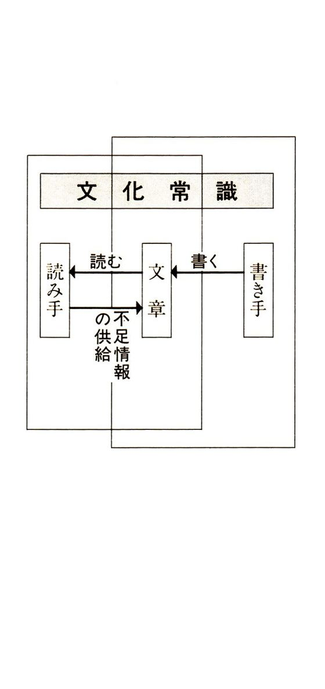
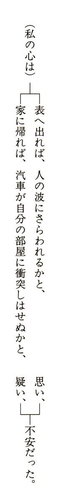
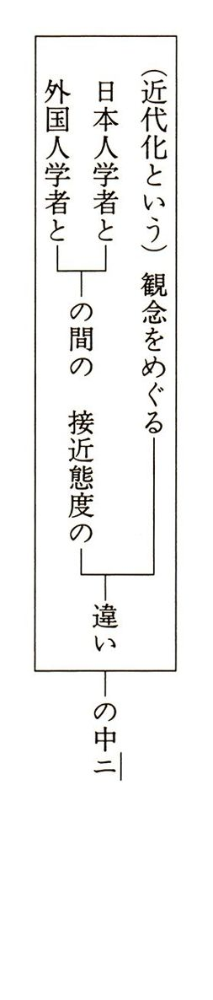

| 国語読解・要約法 | |
| 谷田貝 常夫 | |
| (2016) | |
国語読解・要約法
谷田貝 常夫
電子書籍版 はしがき
情報氾濫の現代にあって、膨大な日本語情報を処理していくのに、つまりは大量の文章を読みとるのに、読解・要約という作業は欠かせない。そもそも、たくさんの文章を読むだけでもたいそうな仕事なのに、それを理解し要約するのがまた難事である。かなりの緊張を強いられる作業なので、だれでも手をつけることがためらわれる分野である。しかしながら、「文章を読み取る」能力は「理解力」の基礎であり、その必要性は、ますます重要となりつつある。それは大学などの入学試験、社会人となる登竜門で待ち受けている入社試験や、公務員試験、司法試験などで読解やその要約を「記述する」問題が多く出題されることからも明らかである。
ことばのミクロからマクロに至る応範な分野に対する気配りが必要な「要約」は、国語力のすべてにかかわる。逆から考えてみると、「要約」をする努力が国語力・読解力をつけることになるといえる。ある文章を要約するためには、その文章の全体像が把握できなくてはならない。航空写真を撮るようなもので、地上で見ていたのとは違う世界が現れるといえる。一度要約をして、その上であらためて本文を読み直すと、それまで見えていなかったところがわかる。つまり現代文をほんとうに読みとることができるのだ。
本書は一九八九年に刊行した、大学入試の受験生のために、現代文を正確に読みとり、まとめ、記述する方法を示した『現代文要約法』を改訂したものである。初版刊行以来三十年近くたった今でも、コンピュータの急速な進化とは逆に、日本語の要約作業は、ほとんど変化はしていないと信じられたことから、読者対象を広げた改訂版を電子書籍で刊行することにしたものである。
近々数十年前に開発されたばかりのコンピュータだが、その後毎年のように加速度をまして進化をとげ、伴って種々の情報は蓄積をつづけて巨大で複雑なデータの集積物が出来上がってきている。そのような情報処理の単位が一バイト（半角一文字のデータ量）から今やテラバイト（一兆九九五億バイト）へと増大してきていることからも、その膨大さが判ろうというものだ。そのような集りを「ビッグデータ」と呼ぶのは自由だが、集積しただけの情報ではごみの山に近い。さてそれをどう取捨選択し、検索し、活用するのか。そこに登場してきたのが情報処理における「スパースモデリング（sparse modeling）」という考え方であり、技法であるという。スパースとは、疎らであり、スカスカであるという意味、つまり情報は膨大だが、意味のある情報はごく一部であるとわかってきたからのことで、それも人間の大脳の効率的な「情報抽象化処理」に学んだことからのようだ。〝抽象化＝abstract〟となると、それは「要約」に酷似する作業と言えるのである。膨大な文字数の文章から有意義な、意味のとれる部分を抽出する、あるいは不用と思われる部分を捨象してスパースに、すかすかにするのが要約作業で、この本の意義が傍証されたといってもよいだろう。
日本の文芸は、大雑把にいえば、古代に不定型の歌謡、長歌が作られ、長歌にはその縮約された反歌･短歌がともなうようになって、三十一文字の短歌へと収斂した。一方では連歌、連句と展開したものが、その短縮形として発句、俳句が生れる。今や最短の詩形としてＨＡＩＫＵが世界中でもてはやされるようになった。日本語の中にはそのような要約へ向かうベクトルが含まれていそうだ。それを支えているのが古来からの日本語独自の構文で、それを読解・要約の中心にすえたのが本書である。
最後に、日本語の本質を解明するために大なる努力をされた諸先哲、日常の会話の中でも必ずのように言語論を展開した今は亡き畏友の中村保男氏、ことばに対する関心を盛上げてくれた友人、レトリックの泰斗であった佐藤信夫氏にあらためて感謝いたします。
二〇一六年一月
谷田貝常夫
目次
一章 読解と要約
読解で行われる要約／試験のときの記述、要約／〝要約〟ということばの意味／要約と類似のことば／要約の形／要約は一つの小宇宙
発想から表現へ、表現から発想へ／文章を書く、文章を読むメカニズム
「○○字以内で述べよ」はすべて一種の要約である／小論文には必ずといってよい要約／客観式の選択肢問題でも／直接に要約力が求められるもの／内容吟味の出題にも／古文、漢文における要約の出題（大学入試）
二章 文型を中心とした読解
日本語の特性／読解と記述、要約のための要点／読解に役立つ構文の理解
主語・述語のある文 ●「が」「の」による文
論理をすっきりさせる助詞「が」／入れ子文／「の」も同じく主格を作る
説明、定義をする文 ●「は」「とは」「のは」でなにを語るかを示す
前提文 ●前提をたてて論じる
数学式をことばに翻訳してみると／使われる接続助詞／前提文の種類／特に注意すべき接続助詞
並立文 ●並んでいる文
並立であることを示す語句、句法／文と文をいくらでもつなげられる「連用形中止法」／縦並びの並列文／横並びの並立文と「類義語句」／類義文の発見と要約での扱い方
意志文 ●他動詞を含む文が意志を示す
独立文 ●名詞で終わる文
一文節でなりたつ、あるいは名詞で終わる文／感動を表現するのに／名詞を志向する日本語／読解と要約のときには／要約文を作るときに大切な、一つの文の名詞化
対比...肯定を強めるための否定／否定文／定型としての「Ａハ、ＢデナクＣダ。」
三章 文章を読みとる
文章とはなにか／だれのために書いているのか／文章は〝想〟の表現／文章を読みとるにあたって
主題文を支える着想語句／主題文はどこにあるか／一つの主題文がいくつかの中心文を生む／読解、要約と中心文／裏づけ文／つなぎ文
プラスかマイナスか／つなぎ語句で気をつけるべきこと／ＡＮＤ／ＯＲ／ＢＵＴ
論理とは思考の法則／段落の種類と論理展開の関係／要約に大切な論理／推論の方法／段落中心文で論理の展開を知る／「起承転結（合）」による文章
四章 文章を縮める技術
自分が自分に答える疑問文／日本語で疑問文であることを示すには／「か」は否定語である／疑問文とその答をいっしょにして断定の文とする／反語の二つの形
「のだ・のである」／「という」／「わけだ」「ようだ」「はずだ」「ものだ」／強調語句
筆者は似たことばで言いかえる／類義文はどれか一つを選ぶのが原則／類義語句の種類／類義語句の文中での使われ方
知恵は比喩で語られる／要約にとっての比喩／比喩の種類を知っておくことは無駄ではない／読解と要約における比喩の扱い方
欠かせない言語感覚、〝抽象のレベル〟／ことばはもともと抽象の産物／普通に使われるのは〝中間語〟／抽象のピラミッド（円錐）／具体的な文、抽象的な文／ことばの抽象・具体を知るものさし／抽象語をさがしてみよう
五章 要約文を書く技術と実践
一章 読解と要約
●国語力は〝要約の練習〟で鍛えられる
読解に大切な文化常識
文章を読解する作業は、受動一方ということはなく、読み手も参加して成り立つのだという事実がアメリカで明らかにされている。書かれている文章の裏には膨大な情報がしまわれているのであり、表面に表された文章に対して読み手は書かれていない、文章の裏にある情報を自分から供給するという。そのような情報にハーシュ教授は「文化常識」と名前をつけた。（『教養が国をつくる』Ｅ・Ｄ・ハーシュ著）
たとえば、「王朝文学」ということばが出てきたとき、「王朝」という単語の意味はわかっても古代エジプトの王朝なのか、フランスの王朝なのか、あるいは平安時代のことを指すのかがわからなければ、この語の現れている文章を理解するのはむずかしい。日本に関することであったら、最低、次の「文化教養」をそのことばに供給しなければ読解に困難を伴うだろう。
次のような文章について、あなたはどこまで理解できるのだろうか。
★「お化け」については誰でも、多かれ少なかれ関心をもっている。以前「オバＱ」というテレビ漫画があったし、昭和三十年代には、「ゲゲゲの鬼太郎」という漫画が名高かった。怪獣映画の主人公、「ゴジラ」がふたたび復活してきて話題となっている。
初めの文に「お化け」とあるので、以下のカギ括弧内のことばがお化けの一種であることはわかるが、この種の漫画や映画を知らない人には、お化けの一種らしいとまではわかっても、はっきりとしたイメージは湧いてこない。つまり筆者と「文化常識」を共有できないのである。
以上述べたような関係を図にしてみよう。

このように、読解をするには読み手の「文化常識」がものをいうことになるが、ではどれだけの範囲の文化常識が必要かとなると、だれにも答えようがない。
以前、若い英国人が【六法全書】に目を通しているのに驚いたら、「専門の用語なら、それほど難しいことはない、何とかわかるものだ。日常会話の方がむつかしい」という答えだった。食物関係、建築関係、鉄鋼関係等々、外部の者にはわからなくても、その分野の専門用語や概念は、ここでの「常識」とされるものだ。又例えば、「鎌倉観光文化検定試験」なるものがある。その案内には「鎌倉に関する歴史、文化、観光、自然、暮らしなど多分野にわたり知識の深さを認定する」とある。要約するときの「常識」の範囲がわかろうというものだ。このような場合、過去の出題文に出てくる語句はすべてが対象の「常識」と考えてよいし、如何なる試験であれ同様である。
また、「一般教養」として、高校で習う日本史、世界史、政治・経済、倫理、地理、英語といった文科系の知識は当然として、理科系の知識もあなたの「文化常識」を形作ることはまちがいない。
しかしながら、本書はそのような、膨大な知識を与えることを目的にはしていない。 各自が、自分の「文化常識」を広げていくよう心がけていただければ幸いである。
本書の目的
本書では、「記述式の文章」全般にどう対応するかを中心に据えているが、一般的に必要とされる「要約」作業にも対応している。
記述式の解答をするなり、要約文を書くには、当然正しい読解ができなければならないとともに、文や文章をどう書くかも大切である。つまり
①には、最初に述べた「文化常識」の必要であり、主として語彙ないし語句について、その定義や説明を記述できる必要である。
②には、対象とする文章、あるいは出題された文章を読みとった上で、記述できなければならない。
文章の読解のための訓練としては、パラドックスのようだが、要約をしてみることが早道だと考えられる。読解力をつけるためであることはもちろん、記述式で解答文を書くには、要約文を書くときと同じ書き方が必要だからである。つまり、要約をするには、自分のもつ国語力を総動員しなければならないのだ。
要約の必要性......●学習や業務に欠かせない情報処理・要約
読解で行われる要約
この本で今までに書かれていることを、あなたはどれほど覚えているだろうか。全文を正確に覚えている人はまずいないはずだ。しかし、おおよその意味だけはわかっている。つまり人は個々の文ではなく、その要旨を記憶に留めるものなのだ。「頭がよい」と言われる人は、特にそのような要約能力（と、更に云えば記憶想起力）に優れているものだ。
記憶のメカニズムに関しては数限りない研究がなされているが、疑いなく言えることは、人間は聞いたり読んだりしたことばを、要約して記憶することだ。先にあげたハーシュ教授の引用するところによれば、「言語が短期記憶から長期記憶に移されるのは、単語を文字どおりに記憶することによってではなく、単語群が表している要旨を速記的に記録することによる」のである。
読解をする際にもわれわれは、二、三行前の文の一つひとつの単語を忘れはするが、その要旨、つまり意味だけはとらえているものなのだ。すでに無意識の中で要約が行われていることは実証済みといってよいだろう。
試験のときの記述、要約
試験などで要求される記述文や要約文は、右に述べたように無意識なものではなく、文に表現する、つまり記述による意識的な、理詰めの作業である。なにより正確さが求められる。ところが解答として書かれたものを見ると、
（１）不用な部分が多い。そのため大切な部分を欠きがちである。
（２）文章として筋が通っていない。つまりねじれた文章になりがちである。
（３）ばらばらな文の寄せ集めとなり、全体としての意味がとれない。
といった正確さを欠いたものによく出会う。
そこで本書では、なるべく機械的に文章を処理することで、比較的楽に正確な記述文、要約文が書ける技術の基本を数多く紹介することに努めた。
〝要約〟ということばの意味
はじめに「要約」ということばの意味を紹介しておこう。
もともと「要」という漢字の字源は、古代の篆書の字形からもわかる通り、左右両手で背骨を押さえるといった意味で、身体の一番くびれたところ、つまり腰と関係があるらしい。「腰」に「女」という字が入っているところからも、中国人は、特に美人の条件である柳腰を大切なポイントとしたようだ。相撲や柔道をはじめ日常行動の歩きかたにおいても、体のくびれた部分である腰が運動の中心となっている。大切な部分なのだ。
「要」の訓である大和ことば「かなめ」は、扇の骨を綴り合わせて止める目（釘）のことなので、これがはずれれば骨はばらばらになって、扇としての役に立たなくなる。まさに要点である。
〝要約〟の「約」は「つづめる」こと、つまり「縮める」ことであるから、結局は、おおかたの辞書の定義、「文章や談話などの大切な部分を短くまとめること」が正解だといえる。
要約と類似のことば
ところが、ことばというものは一筋縄ではいかないもので、この要約に似たことばがいくつもある。「概要」「摘要」「要義」「要諦」「要旨」「提要」といった。〝要〟を使った熟語ならだいたいの見当もつこう。「要説」という新語もあった。
「大意」「諭旨」「趣旨」「主旨」「主張」［見解］「粗筋」「主題」等々といったことばも似たような意味をもつことに注意しておきたい。
また句になると、「要約すると」とか、「要するに」、「つづめていえば」、「まとめると」、「かいつまんでいうと」などといった言い回しがある。
要約の形
いずれにせよ、要約は「要約する」という動詞の形で使われることが多い。また、前にも述べた通り、字数が指定、制限されて短い文章にすることはすべて要約の問題といえる。
◇ 大意を要約せよ。（○○字以内）
◇ 論旨を要約せよ。
◇ ○○字以内にまとめよ。
要約は一つの小宇宙
「人の生涯は動きまわる影にすぎぬ。あわれな役者だ。」（「マクベス」）
複雑多岐で変転してやまない人生を、天才はこのように一行の文に要約する。ここでは要約文がみごとな小宇宙を形作っているといってよいだろう。長い文章の全体を圧縮した要約は、それなりの表現と論理によって一つのまとまった世界になるのだ。さればこそ芥川龍之介は「人生は一行のボオドレエルにも若かない」と言った。ボオドレエルの短く圧縮された詩の一行の方が、長いばかりの、何もせずにうかうかと一生を終えてしまう酔生夢死の人生より以上の価値をもつという真理をいっているのだ。
読解と記述のメカニズム......●表現から発想へ、発想から表現へ
江戸の昔から「読み書き そろばん（算用）」と言いならわされていることから椎察しても、国語力は、読解力と記述力の二つの力が表裏一体をなしている。その関係は次項の図を見ればおわかりいただけると思う。
発想から表現へ、表現から発想へ
読解にしろ記述、要約にしろ、筆者が文章を書くときの経緯を一度はよく考えておくべきだ。ある文章を書くということは、筆者に「言いたいこと＝想」が何かあって、それを頭の中でまとめあげ、構成をした上で筆をとり、文章に仕上げることだ。そのメカニズムを分析しておくことは大切なことである。
文章を読む者、あるいはその文章に関連して記述をしたり、要約をしたりする者は、その逆をたどって筆者の発想にまで思い及ぶ必要がある。わかりやすくするために単純化して、図示してみよう。
さまざまな形で要約力が試される
「○○字以内で述べよ」はすべて一種の要約である
字数が指定されている記述の出題は、本文を圧縮しなければならないので、すべてが一種の要約の問題といえる。
出題の形には次のようなものがある。
「三〇字以内で答えよ。」「～の理由を五〇字以内で述べなさい。」「六〇字以内で説明せよ。」「百字以内にまとめよ。」
小論文には必ずといってよい要約
小論文のほとんどには要約が伴う。ある文章を読んで筆者の主張するところをどこまで理解したかを要約によって示し、その上で、解答者の意見を述べさせるパターンが多いからである。数字やグラフ資料の読みとりでも、ある傾向なり趨勢については、要約してわかりやすく説明する必要がある。
【設問例】
★ⅠⅡを併読し、「異文化間の翻訳──人は分かりあえるか」というテーマのもとに、二つの論文の論旨を踏まえて、考えるところを述べよ（一〇〇字）。
★「大正九年と昭和六〇年のライフサイクルの図」。二つの図を比較して、最も注目する事柄一つをあげ、題をつけて所見を述べよ（一〇〇〇字）。
客観式の選択肢問題でも
客観式とされるマークシート方式の出題であっても、要約力の必要とされる問題は多い。たとえば、
①空白部を選択して埋める問題
これには、単語を入れるもの、文を入れるもの、「つなぎ語」を入れるものなどがあるが、似た意味をもつ「類義文」をとらえることであったり、「指示語」がなにかがわかれば答えられる問題であったりする。
②「内容の正誤」を問う問題
「内容の正誤」を問う場合でも、論旨をとらえさせるものは実質的には要約の問題である。
直接に要約力が求められるもの
①全文要約の選択
【設問例】
★本文の主旨として最も適当と思われるものを、次の中から選び、その番号をマークせよ。
②部分要約の選択
【設問例】
★右の文章の読後のノートとして、左の文章の正しいものをＡ、誤ったものをＢとせよ。
１ 日本人は形而下的な好奇心の方が形而上的な好奇心よりはるかに強かった。
２ 自然の復元力は日本の風土においては甚だ強かった。
③筆者の主張・意見の選択
【設問例】
★右の文章で筆者がもっとも強く言いたかったことは何か。次の中から一つを選び、その記号を答の欄に記入せよ。
★この文では筆者は、傍線部（Ａ）のごとく主張しているが、ではここでは何がどのような幻想に置き換えられることを言おうとしているのか。文脈に即して最も適切なものを次のア～オの中から選び、記号をマークせよ。
④表題の選択
【設問例】
★この文章の内容を的確にあらわす題として、次のうちから最も適切なものを選べ。
内容吟味の出題にも
文章内容の真偽を問う形式は、中身が実質的には「部分要約」であることが多い。②【設問例】にあげた出題からその根拠を示してみよう。
★右の文章の読後のノートとして、左の文章の正しいものをＡ、誤ったものをＢとせよ。
１ 日本人は形而下的な好奇心の方が形而上的な好奇心よりはるかに強かった。
２ 自然の復元力は日本の風土においては甚だ強かった。
この問題は、本文からの次の抜き書きを要約してみればすぐに答えられる。出題文中のどの部分をとりあげるかがポイントである。
［本文からの抜き書き部分］
１ 同時に、この十三、四世紀に日本人の形而下的なあるいは形而上的な好奇心がいよいよさかんになり、仏教は日本化され、職人たちはさまざまなものをつくることに熱中しました。
２ 日本は雨の多い国で、山々はつねにスポンジのように水をふくんでいます。これは古代製鉄業者にとって幸運なことでありました。日本の山は、いくら木を伐っても禿山にすることのほうが困難です。もし山の木をぜんぶ伐って、植樹しないとしても、三十年でもとの緑の山に回復するといわれております。
古文、漢文における要約の出題（大学入試）
①古文の例
【設問例】
★本文『今鏡』 筆者の紫式部弁護の要旨を百字以内で述べよ。
②漢文の例
【設問例】
★本文『韓非子』 この文章の主旨にもっとも近いと思われる熟語を次の中から選べ。
★本文『列女情』 李吾と徐吾の両者の主張をそれぞれに要約し、その結末について記せ（八十字以内）。
記述式要約の出題パターン......●簡にして要をえた短文を書く訓練が大切になる
さまざまな形で要約力が試される出題があることはすでに述べたので、ここでは現代文の記述式に限っての出題パターンをとりあげる。
①全文の要約
【設問例】全文をそっくり要約する
★本文の要旨を五十字から六十字（句読点を含む）の範囲内でまとめなさい。
【設問例】全文要約の変形問題
★この文章の要点を箇条書にせよ。
②部分要約
【設問例】段落の要約
★傍線部（３）の部分について。「すでに述べた」というのは、（７）の段落の内容を指していると考えられる。「光及び色彩の生物的ないし身体的作用」とは、どのようなことを言うのか。（７）段落を参考にして、句読点とも五十字以内で記せ。
【設問例】傍線部、下線部の要約
★波線部（ｄ）について、異本が、表現の普遍化、古典化へ向かう一里塚のようなものであるとは、どういうことか。本文全体の趣旨にそって説明せよ。
★傍線部①『これと矛盾するような章も多い』とある。筆者はそれらの章の趣旨をどのようなものととらえているか。その趣旨を二十五字以内で書け。
③条件つき要約
【設問例】
★右の文章で筆者は何を言おうとしているのか、「倭」と「和」の異同を論じた筆者の意図が分かるように右の文章の論旨を要約せよ。
④主題、筆者の意見・主張・結論の要約
【設問例】
★傍線Ｃで箸者は「それはモーツァルトの解釈ともかかわるし、僕自身の生き方にもかかわるからだ。」というが、筆者の考えの核心を五〇字以内で記せ。
★「名前」や「命題」に対する著者の見解はどのようなものか、文章全体より帰納して述べよ。
★第二段落における筆者の主張を、次にあげる用語を織り込んで述べよ。（二〇〇字程度）
知識 理論 自明性 総合的 日常経験
ただし、使う順序は自由。同一の用語を繰り返し使ってよい。
⑤表題をつける
【設問例】
★この文章に簡潔な表題をつけよ。
二章 文型を中心とした読解
●一文が正しく読みとれなければ、文章全体もわからず、要約もできない
どの国のことばでも、文章というのは氷山の一角のようなもので、その陰には膨大な文化常識が秘められていることを指摘したが、日本語の文章は、欧米のそれが「饒舌の表現」と呼ばれるのとは対照的に「寡黙の表現」といわれるほど、さらに圧縮された文章をよしとする。「含蓄」に富んでいるといわれるゆえんだ。言外、つまりことばに直接表れないところに意味をもたせることに文章美を求める傾向があるので、その分、表現が曖昧になり、正しい理解が妨げられがちになる。評論文にしても同じである。そこで現代文の正しい理解と読解のために、まず、自分の国のことばである日本語の特性と思われる点を簡単に眺めてみよう。
日本語の特性
日本人は日本語を使うから日本人なのだが、その日本語は、縄文の昔、一説では旧石器時代にすでに原始動詞や原始名詞が使用されていて、そこに西と南と北から入ってきたことばが交じり合ったものとされている。古くから独自の言語であり、それが新しく入ってきた言語を次々と吸収して現代に至ったことは間違いが無い。
①控え目で、断定をしたがらない。
当然わかると思われることばは省略するのが日本語のもつ本性である。読解する際は、その省略された部分を少なくともはっきり意識しておかなければならない。そこで記述式解答や要約をするときには、この潜在する部分、つまり隠れている部分はどんなことばなのかを、頭の中に書き込んでおく。
【用例】
★その危惧の拠って来るところがその後だんだんとわかってきた。と同時に、芭蕉が「こもをきてたれ人います花のはる」というような元禄三年の歳旦吟を作るところまで行った気持ちもである。（安東次男）
「も」一語で、前文の「わかってきた」を省略している。→芭蕉の気持ちもわかってきた。
②日本語は、自分の見方や心の動きといった主観性を示すことが多く、自己中心的になりやすい。
古語についてすら大野晋氏は「日本語の古典語の助動詞はすべて、話し手がある動作・作用について主観的に判断を下す表現形式なので」と云っている。
山下秀雄氏は「のだ」の説明の中で「日本語は〝話し手〟中心の仕組みをもった言葉です。ですから、いたるところで、好むと好まざるとにかかわらず、自己の主観がむき出しになります」と、外国人に日本語を教える立場から述べている。
「のだ」のような助詞、助動詞ばかりでなく、「もちろん」「いうまでもなく」「やはり」「～当然である。」などのことばもその例にあげられる。客観的であるべき評論文にもこの傾向は見られるので、逆にいうと、筆者の言いたいこと、すなわち主張が読みとりやすい面もある。
【用例】
★勿論俳句と雖も、本質的に詩の一種である以上、韻律の構成する必然の音楽性は具へて居るが、短歌との比較の上で、それがより稀薄であるというのである。（萩原朔太郎）
★文学もやはりその通りです。（中村光夫）
★近代文学の人間探求が、王侯でも英雄でもない、中等なる人間への興味に向かったのは当然である。（中野好夫）
③言葉が主観性を帯びているだけに、相手の立場に神経をつかうことが多い。
否定形の疑問文、たとえば「あの番組は見なかったの？」に対する返事は、答え手が話し手に合わせて「はい、（私は）見ませんでした」となる。英語では答え手が自分の立場からNo, l didn'tと答えるのとは対照的である。
【用例】
★いちおうこれを韻文と言っていいでありましょう。（三島由紀夫）
「これは韻文だ」と断定してもいいものを、まず「いちおう」と遠慮し、丁寧語「ます」を加え、さらに推量の「う」をつけることで、書き手である自分の断定を弱め、読み手を立てている。読解や要約では不用な部分となる。
読解と記述、要約のための要点
〔１〕日本語なりの文型をとらえる。
筆者がある文型を選んだということは、自分の発想をなるべく的確に人に伝えようとする意図があるということだ。その点から読解の究極は、筆者の発想をさぐるものだといってよい。また、記述や要約を正確にするためにも、文型の理解は必要である。
その際大切なことは、句（英語のフレーズ）や節（クローズ）をはっきりととらえることで、そのために助詞の働きを知ること、次に動詞の性質を理解することである。
長い文には、文全体の文型があるとともに、その中の文（節）に別の文型が使われることもある。
〔２〕真の話題はなにかを知る。
つまり、一つの文の中で中心となる「主文」を見極める努力がいる。一〇〇字前後の長い一文になると、「入れ子」状（箱根細工の卵が、その中にもまた卵が入っているような状態）になっていることが多いので、外側から開けていって、どれが芯になる文かをとらえる。文全体の主語を見つけるといってもよいが、主語がなくて主文であることもある。
〔３〕単純化してよい語句がある。
たとえば文と文をつなぐための「つなぎ語」だ。
〔４〕日本語は文末に筆者が顔を出すことが多い。
「～と信じてよさそうだ。」といった文末の語句に筆者の思いが表れる。そのため、文末は論理で割り切って、つまり省いて、残りの部分を理解した方がよい。
〔５〕論理的に無駄なことばは、カットして読みとる。
「蝶のように」といったイメージに頼る直喩、広い意味での二重否定などだ。
〔６〕意味が近い、あるいは似ている文、本書では「類義文」と呼ぶものを見つける。
同じことばをいくつも繰り返すことはない。
〔７〕否定語の意味するところをよく理解する。
何を肯定するための否定なのか、否定の範囲はどこまでなのか、等。
〔８〕比喩は元に、あるいは比喩でない地の文のことばにもどせるようにする。
比喩は一種の代用品なので、何の代用をしているかを知る。
〔９〕慣用句をどう扱うかに注意をはらう。
慣用句は比喩や引用が固定したものといえるので、もっとわかりやすい語句にかえた方がよい場合が多い。
〔10〕明・暗・中立の表現がある。
あるいは、ことばは肯定的・否定的雰囲気をもっている。
読解に役立つ構文の理解
以上のような観点を頭に入れてから、（１）の「日本語の文型」について説明をしよう。文型には次の六つがあり、読解や記述、要約の際に役立つはずである。
１ 主語・述語文
２ 説明文
３ 前提文
４ 並立文
５ 意志文
６ 独立文
主語・述語のある文......●「が」「の」による文［水ガ来た］
【基本形】
＊「主語」＋「が（は）、の」＋「動詞、形容詞、形容動詞」
論理をすっきりさせる助詞「が」
主語と述語より成り立つ文を「主語・述語文」（主述文）という。ことばの使い方からすると論理が一番とらえやすく、文の芯になるものといえる。
ただし、「の」はその文全体の主語とはならない。
主語と述語をきっちりと理解することは、読解の基本中の基本であるとともに、明快なだけに要約文の記述をするときにも有用で、
「それが、なんだ」「それが、どうする」「それが、どんなだ」
といった判断をくだすのに使われる。
（注・現在日本語における「主語」ということばに異論が多いが、要約文には主語が必要である。）
入れ子文
文は長くなるほど意味がとりにくい。そして評論文は一般に一文が長い。一文が一二〇字くらいになることさえある。分析してみると、文がねじれていることもある。主語、述語の関係や修飾、被修飾の関係がずれて、ことばのかかり方・受け方がはっきりしない場合だ。それは、すでに述べたように、文が長くなると、何枚もむくことのできる玉葱のように「入れ子」型になってくるためで、主語がいくつもあるように見える。
例文をあげてみよう。
【例文】
★もっともこれはいささか言い過ぎであって心に浮ぶイメージというものは、概して未だかなり曖昧な所があってそれが描くという行為によって、次第に明確な形をとるようになるというのが実状というべきであろう。
この一つの文から、主語・述語でまとまっている部分（節）を、多少変形させてとり出してみよう。
（１）心に浮ぶイメージというもの（に）は未だかなり曖昧な所ガ ある。
（２）それ（曖昧な心中のイメージ）ガ 描くという行為によって 次第に明確な形をとるようになる。
（３）（心中の曖昧なイメージが描く行為で明確な形をとるようになる）ということガ 実状だというべきだ。
これを、入れ子の図式にしてみよう。
【例文】
★のみならずその外にはさらに垣根があり塀があり、はなはだしい時には逆茂木や濠がある。
★いかなる「時代」にあっても、いかなる「社会」にあっても、その時代、社会の中に在る「自分」が自由な魂、精神を以て「選びとり」「接触」し得て、芸術作品なる「対象」と「内部の自我」が語り合い、照応できるもの、これが普遍美を持つ傑作なのである。
二つ目の文も、主語一つ、述語一つの単文にすぎない。
→これが普遍美を持つ傑作なのである。
「これ」の前の「いかなる～照応できるもの」の中にある二つの「が」は、主文に従属した副文の中の主語を示す格助詞である。最後に出てくる「これ が」の「が」が、主文中の主格を示している。
「の」も同じく主格を作る
助詞の「の」も、「が」と同じく主格を作るが、現代文では、「が」のように主文の主格を示すことはない。修飾する節を作るだけである。つまり、単文の主語にはならない。
【例文】
★北村透谷が、彼のいう「想世界」とか、「内部生命」とかへ、なにゆえにはいりこまなければならなかったか。
正確に書きかえると、次のようになる。
説明、定義をする文......●「は」「とは」「のは」でなにを語るかを示す［吾輩ハ猫である］
【基本形】
＊「題目」＋「は」＋「説明文、定義文、描写文」
＊「題目」＋「とは」＋「定義文」
＊「普通の文」＋「のは」＋「強める語」十「断定語句」
助詞「は」は話の題目を示す
日本語構文の一つに、「説明文」と呼ばれるものがある。簡単にいうと助詞「は」によって、その文がなにを語るかという〝題目〟が示される。そのために出題文は、この「説明文」が冒頭にくることが多い。
【冒頭文の例】
★作物の評価に好悪の弁を用ひる限り、作物そのものは是非の煩から脱却している。という意味は、......
★農業は、人類の生存形態に著しい変化を与えた。
★私は音楽を知らないように美術もまた分からない。
「は」以下は、その題目の説明や定義や描写になっている。あるいは、「Ａは」が間いかけとなり、以下の部分で、筆者なりの答として、定義なり解説をしているともいえる。
「は」の使われ方
①いくつもの文の題目になる
「は」が題目を示すときは一文だけにとどまらず、他のいくつかの文にかかっていくことがある。
【例文】
★しかしその理由は、子供の心が純真無垢だからではない。そうではなくて、①子供は社会に対して無責任だからである。②責任がないから、その経験を積み重ねて、法則を見い出す必要もない。③従って経験を分類し、分類するために抽象化する必要も少ないだろう。④すなわち具体的経験をその具体性において捉らえることができる。
この例文では、①の主語「子供は」は、次の通り、①②③④の四つの文の主語であり、題目になっている。
子供は 無責任だからである。①
子供は 責任がないから、②
子供は 法則を見い出す必要もない。②
子供は 抽象化する必要も少ないだろう。③
子供は 具体的経験を捉らえることができる。④
②主語を示すとき
「は」が主格を示すときは、「が」に「は」が加えられて「がは」となり、その「が」が消えたものと考えたらよい。「は」が「が」にとって代わるともいえよう。
【例文】
★「創造は何よりも感情を意味する」、とベルグソンは述べている。しかし創造は単なる感情ではない。ロゴス的とパトス的とが一つと考えられるような構想力から創造は考えられるのである。
この文章中の「は」は、すべて「が」に置きかえられるものだ。ためしに英訳してみれば、納得がいくだろう。Creation means...とかBergson says, ～といった具合に主語になる。
③「とは」は、定義する文を導く
格助詞「と」に「は」のついた「とは」は、その下の文が上の語句の定義あるいは説明をしていることを示す。
「と言うことばは」「と言うのは」「ということは」を略したものである。
特に評論文では、筆者なりにある語句の定義づけをするときに使われるので、主文となる大切な語だ。
他の人ではない、筆者独自の見解を提示するものであったり、筆者の新しい解釈なので、読解のときには特に注意を払う必要がある。この定義を中心に論が展開されるからだ。要約する際にも欠かせない部分だ。その場合、ただの一字だが、「と」を省いて字数を減らすこともできる。
【例文】
★類感魔術とは、ある目的を達成しようとするとき、同型性のある別のことがらをやってみせることであり、感染魔術とは、接触によって、ある力が、別のものに伝わることを前提として成立する。
★ボルヘスは書斎を城の天守閣になぞらえているが、私は城というよりも、鳥の巣を思い浮かべる。そう、書斎というのは「精神の巣」なのである。
④「～のは」による強め
「は」自体でも強めを示すが、「の」についた「のは」は、「だ」とセットになって、「分裂文」と呼ばれる強め文になることがある。（英語ではlt is ～ that ～の形を分裂構文と呼び、強められる語が、it ～ that の間に入る）
この場合の「の」は助詞ではなく形式名詞で、「こと、もの」に等しい。
普通に叙述する文、平叙文がどう強められるかの例をあげよう。たとえば次の文には、四つの強め方がある。
〈きのう 妻ハ 犬ヲ つれて 公園ニ 行った〉
① 妻ガ 犬ヲ つれて 公園ニ 行ったノハ、 きのうダ。
② 妻が きのう 公園ニ つれて 行ったノハ、 犬ダ。
③ きのう 犬ヲ つれて 公園ニ行ったノハ、 妻ダ。
④ きのう 妻ガ 犬ヲ つれて 行ったノハ、 公園ダ。
読解の際には、他のなにものでもない、その点を強めていることを理解しておく。たとえば②では、公園に連れていったのは、「自分の子供でもなく、孫でもなく、猫でもなく、犬であった。」
強調しているだけなので、要約するときは元の平叙文にもどした方がよい。
【例文】
★優しく美しい山河にめぐまれた日本列島のなかで、古来、日本人がこの上なく愛したのは、あの日本三景に代表される浦（内海・入江・湾）の風景ではないか。
→日本三景に代表される浦の風景ヲ、古来、日本人はこの上なく愛した。（平叙文）
（注・「のも」による分裂文もある。（二章Ⅱ「頻繁に使われる「も」参照）
⑤「は」以外に題目を示す助詞
「は」以外に、題目であることを示す助詞には、係助詞「も」「こそ」や、副助詞の「さえ」「でも」「だって」「しか」などがある。ただし、「は」と違って、文章の冒頭にくることはない。
読解の際は、文章の題目を知るのに役立つが、助詞によって扱いは異なる。
・「も」は、他にもあるが「これもまた」の意味であり、他がなにかを知っておかなければならない。（二章参照）
・「こそ」は、他の中から取り立てて強める。
・「さえ」「でも」「だって」は他からの類推、「しか」は他のものではない、それだけだと限定する。
要約をするときには「は」または「が」に置きかえた方がよい。
【例文】
★新しいことば遣いも、ある表現があることを意味している（あるいは、意味しているように解せる）という限りは、やはり記号であることに変わりない。
★〈利潤のために利潤を追及する自由主義、衣食住の向上を即自的に求める文化国家こそ、飢餓、畜生の修羅場である〉という価値の転倒ができないものか。
★『めんどり』以前に書いたものすら入っていて、全然執筆順ではない。
すべて「は」ないし「が」と置きかえることができ、この場合は、それが主語を示している。
⑥どこにも潜りこむ〝とりたて〟の「は」
「は」は、今まで述べた他にさまざまな使われ方をするので、注意がいる。
「は」は主格以外に目的格をも示す。
「がは」が「は」になったように、「を」にも、とって代わって、目的格を示すことがあるので、気をつけなければならない。「私は甘いものハ食べない」
【例文】
★すぐれた芸術家でなければ、こんなことは（ヲ）言えない。
★急ぐこともないわけだが努力は（ヲ）続けなくては、と思います。
「は」はさらに他の助詞や、副詞、形容詞・形容動詞の連用形などの後について、その前の語を取り立てたり、対比や否定の意味を添えることがある。
その場合は、「は」を取り去っても意味はそれほど変わらないので、ただの一字だが要約のときは省いた方がよい。
《詩の中にハ、時間の流れからたち切られた特殊な時間が生きている。》（助詞「に」＋）
《それは媒体でハあるが透体でハない。）（形式動詞「だ」＋）
《それは一言も書かれてハいないけれども、......》（助詞「て」＋）
《現代芸術にまでハ書き及ばなかった。》（助詞「まで」＋）
《肉体労働からハ解放された。》（助詞「から」＋）
《多くハ語らなかった。》（副詞＋）
《少しも静かでハなかった。》（形容動詞＋）
前提文......●前提をたてて論じる［柿食ヘバ鐘が鳴るなり］
数学式をことばに翻訳してみると
数式も一種のことばである。その一番簡単な例をことばに直してみよう。ご心配なく。式は「３＋４＝７」だ。
ａ ３足す４ハ ７だ。......「は」は等式（＝）を示すというより、「３足す４」を題目化している。３足す４ハ（いくつかというと）、」の意。
ｂ ３に４を足せバ ７だ。......もし３に４を足せバ ７になる。
ｃ ３に４を足すト（足しタラ） ７になる。
ｄ ３に４を足したノデ（カラ） ７になった。
このｂ、ｃ、ｄのように、前提とその結末を示す文を「前提・結末文」という。筆者がなにかを書こうとするときには、必ず「発想」があり、それがことばとなって実現する第一歩が題目のことばである。
さらに筆者はあれこれ想いをめぐらせ、架空の条件を考え、仮説を前提にたてた上で、その結末を読者に提示する。仮定をたてて思索する論文では使用される頻度の高い文である。
【基本形】
＊「前提文」＋「『ば』『と』等の接続助詞」＋「結末文」
使われる接続助詞
順接であることを示すものと、逆接を示すものとがあり、意味の上からは大きな違いとなる。
順接＝前提となっている理由、原因、きっかけが、常識的に順当な結末になる場合。
逆接＝前提に対し結末が対立、矛盾する場合。
その各々に、仮定条件（前提が起こっていない）と確定条件（前提がすでに起こっている）ものとがあるが、その両方にまたがる助詞も多いので、ここでは特に区別しない。（単純接続は次項「並立文」参照）
前提文の種類
①接続語句に相当するもの（指示語や「言う」と組むことが多い）
前提文としての意味をほとんどもたず、「つなぎ語」や「並立語」に近い。
一品詞ではなく、語句になったものをいくつか例示してみる。
「ば」......いってみれば、簡単にいえば、それならば、なぜならば、しからば、それを例えれば
「と」......もしかすると、してみると、それはそうと、ともすると、考えてみると、それと
「ので、のに」......そうなので、そうなのに
「けれども」......そうではあるけれども
【例文】
★稀なる例外を除いて言へば
★つまり言へば
★概して言ふと
②時間を越えたもの（一種の常識、真理を表すので、格言として成語になっているものも多い）
備えあれば、憂いなし。（順接確定条件）
冬は、六時になっても、まだ夜が明けない。（逆接確定条件）
③前提をたてて考えるもの（筆者の〝想〟を示すことが多いので、よく検討する必要がある）
（１）前提文は、本来主語を必要としない。また主語があるときには、前提文と結末文で主語がくい違うことがある。
【例文】
★然し一人で放って置くと、決して行く気遣いがないから、君が寄って引張り出すのだと理由を説明して聞かせた。
この文は、次のように主語や目的語を加えればわかりやすくなる。この「と」は、「時、場合」の意味であり（（６）参照）、前提文は、「然し～気遣いがないから、」までである。
前提文 然し（われわれが）（先生ヲ）一人で放って置く場合は、（先生ハ）決して行く気遣いがないから、
結末文 「君が寄って引張り出すのだ」と（与次郎ガ）（僕ニ）理由を説明して聞かせた。
（２）前提文で「仮定」をたてると、その過去（完了）、現在、未来に対応して、「結末文」は推定表現（う、よう、だろう、かもしれない、等）を伴った推定の文となる。
【例文】
★「降ると困るでしょう」
★アントニイもさう云ふ例に洩れず、クレオパトラの鼻が曲つてゐたとすれば、努めてそれを見まいとしたであらう。
（３）仮定文は、事実でないことを仮想したり、現在や過去の事実と反対のことを仮定するもので、その頭には、「かりに」「もし」「よしんば」「万（が）一」などの副詞を添えるのが普通である。
【例文】
★もし私が「死んだ」というしらせがあったなら、......
（４）「たら、なら」は助動詞と形容動詞の活用語尾で、助詞ではないが、「ば」がついてもつかなくても、仮定条件を示すことがある。
【例文】
★先生のご覧になった夢でも芝居にしたら、そんなものが出来るでしょう。
（５）「ので、から」はともに原因、理由を表すが、「ので」は結末文の結果、事実に力点がおかれ、「から」は前提文の原因、理由に力点がおかれる。要約ではもちろん、力点のおかれる方が大切である。
（６）「と」は、「～の時に」「～の場合に」を意味することがある。その際は前提文とはならない。（（１）参照）
【例文】
★夕刻に行って見ると（見たとき）、先生は明るい洋燈の下に大きな本を拡げていた。
（７）一文中に、二つも接続助詞がある場合は、前提文か結末文かのいずれかに属する。
【例文】
★お客でもしたら毎日食器を変えても、一か月分ぐらいはあるかも知れぬ。...... 事実物の数が多くなっているのだから、それは脆弁だという人があるかも知れぬが、そうではない。
前提文 お客でもしたら
結末文 毎日食器を変えても、一か月分ぐらいはあるかも知れぬ。
前提文 （事実物の数が多くなっているのだからそれは脆弁だ）という人があるかも知れぬが
結末文 そうではない。
特に注意すべき接続助詞
①「が」は主格を示す格助詞（この場合は名詞のあとにくるのでまちがえることはない）のこともあり、接続助詞のこともある。
接続助詞の場合は、逆接のことが多いが、単純に文をつなげるだけのときもある（「並立文」参照）ので、意味を正確に読みとることが読解に必要だ。
要約文を書くときには、「が」一語で逆接を示せるので便利だが、意味が曖味になりがちなので、できれば使用を避けたい。
【例文】
★逆接 蚊帳のそとには、相変わらず何匹かの羽虫が翅を休めていたが、あの銀白色の蝶はとうとうやってこないらしかった。
★順接 夜中には僕はいつものとおり何度か目ざめたが、いつ目ざめても父のスタンドはまだ灯っていた。
②「けれども」「ながら」も、逆接と単純接続に使われるので、読解のときには注意をする。
逆接 あの人はテニスはできるけれども、うまくはない。
順接 あの人の話を聞いたけれども、面白い話だった。
逆接 感謝はしながら、迷惑にも感じた。
順接 食事をしながら、本を読んでいる。
③「ば」は順接の仮定条件を表すだけでなく、並列をも示す。
〈このストアには、雑誌もあれば、アイスクリームも置いてある〉
並立文......●並んでいる文［日は暮れるシ、腹は減るシ］
文の中には、対等の語句が続いて書かれているものがよくある。つまり、どちらの語句の方が重要ということもなく並べられている。すぐに例文をあげるが、その際、横並びをしているものと、縦並びをしているものの二つがある。その二つを「並立文」と呼ぶ。
「横並び」とは、一本の糸のようにつながっている文の中で、意味の上からは対等の重さをもつ語句が、続いて書かれている場合を指す。つまり、ある語句や文が、同じ意味をもちながらも言いかえられているのだ。「類義語句」や「類義文」と呼ぶものである。
「縦並び」とは、時間の先後や、空間的な配置の順序に従ってことばが並んでいることを言う。
読解のときは、数式のように括弧でくくってみればわかりやすくなるが、文章を縮める要約の場合は、どこを切るべきかがわかりにくい、厄介な文である。
並立であることを示す語句、句法
①並立助詞によるもの......前文の後に、並立助詞と呼ばれる次のような語がくる。
と、とか、や、やら、に、か、なり、の、だの、も、し 等
【例文】
★野島さまにはできるだけ親切にもいたしますし、尊敬もいたします。
★一体、悲しいとか、懐かしいとかいう種類の詞は......
②単純接続の接続助詞によるもの......接続助詞のうちで、文を単純に続けるもの。実質は並立助詞だ。
て（で）、が、たり（だり）、ながら、けれども、等
【例文】
★京都に百万遍という名刹があるが、念仏百万遍から来た名である。
京都に百万遍という名刹がある。
＋
百万遍という名刹の名は念仏百万遍から来た。
★いずれにせよ、戦後の詩を読んで、戦前とのあいだに、いろいろ明確に指摘することは困難ながら、あきらかな相違があると感じられることの最大の理由は、どうやら今いった点にかかっているとしか思われない。
③並列、要約の「つなぎ語」......一部はすでに前提文のところで述べたもの。
並列語句
似たことば、類義語句を対等に並べるとき
同じことをあらためて言いかえたりするとき
例をあげて抽象的な文を具体的に言い直したりするとき
などに使われる
また、および、ならびに
または、あるいは、
すなわち、いいかえると、別のことばでいうと
たとえば、他の例では、等
【例文】
★......創造行為が同時に、「美術とは何か」という疑問符をあかるみに出す尋問行為でもあるといった二重性を、はじめから背負わなければならない。いってみれば、それは仮説にすべてを賭けるようなものである。
★比喩的に言へば、この導線はわが電流を彼に送るに堪へる程丈夫でなければならない。又デリケートでなければならない。
④要約語句......それまでの話をまとめる語句で、同じことを短く言いかえる。
つまり、つまるところ、短くいって、一言でいえば、要するに、概して、筒単にいえば、等
【例文】
★概して言ふと和歌の方は主観的態度が強く、......。つまり言へば、短歌と言ふ詩の形式は、......。即ち例へば、「枯枝に鴉の止りけり秋の暮」といふ句の如く、......。
⑤連用形中止法によるもの......用言の連用形で文を一度切り、次の文につなげる方法のこと。
日本語の文でかなり頻繁に用いられる。「連用形＋て、」となることもある。
【例文】
★①ホテルに入ってもなお故宮のあたりの空はあかるく、しかし、さしあたっての予定がないために手持無沙汰であったが、政治家との接見の時間はなお未定で、その名前もわからなかった。②私は中国にきて多くの中国人に見たり、会ったりして、気持が充実した。③とくに政治家という人に会いたいという気持もなく、会わずに帰ることのほうがありがたかった。
①「あかるく」は形容詞の連用形中止。「未定で」の「で」は、形式動詞「だ」の連用形中止（「だ」を助動詞とするのが普通だが、語源が『にてあり』という説からも動詞と考えた方がよい）。
②は、主語は「私」で一貫しているが、文としては連用中止に「て」のついたものが三つある。
③「気持もなく」は、形容詞「ない」の連用形。
この文章は随筆なので、論理を積み上げたというより、気持の流れを綴った文章といえよう。
文と文をいくらでもつなげられる「連用形中止法」
日本語は膠着語といって、糊（膠）でべたべたといくつでもつなげられるような文章だとされる。西欧人が日本語につけた渾名といえるだろうが、そう言われる大もとが助詞、助動詞であり、特にこの単純接続の助詞「て」だ。動詞をやたらに並べるときなどに使われる。
新幹線に乗って、京都駅まで行って、タクシーを拾って、御所まで行って......
と、いわゆる小学生式のだらだら文が作られる。評論文でもけっこう多用されている。
読解のときは、その通りに目で追って頭に入れるよりないが、要約して理解するときは、
①不用と判断できる部分はカットするか
②別の構文に変えて、連用形中止を減らす。
たとえば、右の文は、
「京都御所までは、新幹線とタクシーで行き、......」
とでもするとよい。
縦並びの並立文
縦並びとは、連用形中止法あるいはそれに「て」がついて、時間の先後がある場合を指す。語句の入れかえがきかない。論理の基本には、時間の先後という問題があって、論理成立の大きな要因となっている。
【例文】
★結局量子力学という新しい理論体系ができて、光も物質もどちらも波動・粒子の二重の性質を特っているという奇妙な事態を、合理的に理解できるようになったのである。
→新理論体系ができた後になって、奇妙な事態が理解できるようになった。
横並びの並立文と「類義語句」
横並びの場合には、次の二種類の文が考えられる。
①ものごとの性質、状態、（つまり文法的には体言のもっている性質）を示す。
「赤くて、すこし酸っぱい味のする、小さな林檎は、紅玉と呼ばれていたが、今は少ない。」
【例文】
★（私が）（倫敦塔へ）行ったのは着後間もないうちのことである。そのころは（私は）方角もよく分からんし、地理などはもとより知らん。（私が）表へ出れば人の波にさらわれるかと思い、（私が）家に帰れば汽車が自分の部屋に衝突しはせぬかと疑い、朝夕安き心はなかった。

②対等で同じ意味の、つまり類義のことばを並べる。
読解では、①同様、一通り目を通すことになるが、意味が類似していることに気づかなくてはならない。
要約では、この対等に並立するいくつかの文のすべてをとりあげられないので、意味の似た語句のどれかを選ぶことになる。
【例文】
★人間として生きるかぎり、思い、考えることは生きることの一部分であり、人間として生きている活動そのものであるとさえいえる。

類義文の発見と要約での扱い方（四章「類義文は反復である」参照）
次の例文は、題目となる語をたて、それを何度も言いかえて説明している。要約のときは右の②で述べたように意味の似た語句を調べて、その中からなるべく抽象的な語句を選ぶのが妥当だろう。
【例文】
★黒は人を威圧し自分を権威づけることを表す色であるが、本来それは全てを塗抹し覆い隠す色であって、現れるよりも退いている、陰をつくる色である。夜の闇のなかでフッと感じられる、いわばいつつしきものに触れるような畏怖感が、黒色に具わっている性質である。そのような何とも言い表し難い存在感が偉力として体感 されるものの発動源として働いているのであろう。すなわち、存在が明らかであって、しかも視力の及ぶ対象とならない。自分が包囲され飲み込まれてしまう。自分がそれから適当に離れて望ましい心理的距離をとることができない。
〈黒は〉１ 人を威圧する色である（「威圧し」は連用形中止）
２ 自分を権威づける色である
３ すべてを塗抹する色である（「塗抹し」）
４ すべてを覆い隠す色である（「色であって、」は、「て」による単純接続）
５ 現れるよりも退いている色である（「退いている」は連体形で、「色」を修飾）
６ 陰をつくる色である
７ 夜の闇のなかでフッと感じられる畏怖感が具わっている色である
８ いつつしきものに触れるような畏怖感が具わっている色である
９ そのような何とも言い表し難い存在感が威力として体覚されるものの発動源として働いているような色である
10 存在が明らかな色である（「あって」は、「て」で単純接続）
11 しかも視力の及ぶ対象とならない色である
12 自分が包囲されてしまう（色である）（「包囲され」は連用形中止）
13 自分が飲み込まれてしまう（色である）
14 自分が黒から適当に離れて望ましい心理的距離をとることができない（色である）
ここでは、意味が共通する類義語句を指摘してみよう。
１（威圧）、２（権威）、７と８（畏怖感）、９（威力）に共通項がみられるので、これらの五文で一つの文にまとめることが可能だ。
【例文】
★さて、発生の点から言うならば上述のとおりと思うが、言語は可塑的なものと言える。あちこちからの影響を受けやすいものである。社会の影響を受けるし、他の言語の影響も受ける。あるいは自身の言語の影響を受ける。もちろん、言語を定着させた文字の影響も多分に受ける。
「可塑性」とは、粘土のように一度力を加えられて形が変わると、変形したままでいる性質をいうもので、この文章では比喩として使われている。要約には不用だ。つまり、「可塑性＝影響を受ける」である。
こう並べてみると、〈言語は〉と〈影響〉の間にはさまれた部分をまとめればよいことがわかるだろう。「もちろん」は後述するように「つよめ語」なので、この文は抜かせない。
→言語は、社会や他の言語から、また自身の言語とそれを定着させた文字の影響を受ける。（四〇字）
意思文......●他動詞を含む文が意思を示す［カンパネルラが手ヲあげました］
【基本形】
＊「主語（動作主）」＋「名詞＋を、に」＋「他動詞」
他動詞（ある意志をもって他に働きかけるという意味をもつ）が中心になって作られる文で、その他動詞の働きかける相手を示すのが目的語である。日本語は、目的語が前にきて、動詞にかかる。
このような動詞は、動作主の意志を示すもので、厳密にいうと次の二つになる。
「処置」......「を」をとる他動詞で、動作主が自分の意志でものごとを処置する。
ただし、「を」は「砂利道を走った」「学校を出る」のように経過や起点を示すこともあり、目的語を示すだけではないので、読解のときにまちがえないよう。
【例文】
★鳴らない鼓を打っているのではないか。
★はかなさやもろさをふくまざるをえない。
「対処」......「に・へ・と・より・から」をとる他動詞で、動作主体の意志だけでは取り計らえず、対象となるものごとに対処していくよりない場合を示す。
【例文】
★もし鳴れば恋しい人に会えるだろう。
★「スコレー」は、学校や学者ということばの語幹になっている。
筆者の主張につながる意志文
「意志」には、ある主体がある。動詞にすでに主体の意志、多くは筆者の意志が示されているので、論文などでは、筆者の発見や断定、主張の部分などに意志文が使われる。
【例文】
★このことばの力。それは「ことば」と「物」とのかかわりあいを厳しく問いつめて行った者への神からの贈り物であるのかもしれない。出来合いのことばを疑い、その出来合いのことばを怖れ気もなく使う自分を疑った末、ことばへの信仰を回復した著者は、あの十二使徒に似ている。
この文章の後半は、筆者がある著者を結論的に評している。簡略化し、語順をかえてみれば、意味がもっとはっきりする。
〈十二使徒に似た著者は、出来合いのことばヲ疑い、それを使う自分ヲ疑った末、ことばへの信仰ヲ回復した〉
①意志は人間だけのもの
文章中の「意志」は、人間だけのもの、さらにいえば、その文章の筆者の心の中のものである。それが、「点滴が石二穴ヲ穿つ」「菩薩の像ガ眼ヲ閉じている」のように第三者にも使われるのは、一種の擬人化であり、一種の比喩だといえよう。
②主語を意識する
他動詞には意志の主体が存在するが、動詞自体が意志を示しているので、主語がよく省かれる。しかし、読解や記述、要約の際には、なにが意志の主体であり主語であるかはよくわかるようにしておくこと。
【例文】
★話を人麻呂にかえせば、......あまりに短い歴史上の一時期に、日本の抒情詩にとって運命的な変貌を、その後の長い詩の歴史にとっては必ずしも歓迎すべきではなかった決定的事態を引き起してしまったのである。
短歌が主語であるというのは擬人化である。段落の冒頭で「話を人麻呂にかえせば、」とあるところから、主題は柿本人麻呂にあり、またそれが「引き起した」の主語でもあると推測される。
【例文】
★アメリカの政府や企業の政策は往々にしてその場限りのものとなり、長期的ビジョンに欠ける。レーガノミックスをとっても、景気浮揚には役立ったが、とんでもない大借財を将来に残してしまったのである。
「（私が）レーガノミックスを採りあげたとしても（それは）」となるべきところから、「レーガノミックス」が主語である。
③連体修飾語として多用される
他動詞を含む句（ＡニＢヲＣスル）は、動詞で終止すれば主文になる。
名詞を修飾して一体の名詞句になることも多いので、どこまでが名詞句かを知り、読解のときの構文理解に役立てたい。特に、「こと」「もの」、次に述べる「の」にかかる場合は、「の」「こと」「もの」を含めて名詞句を作るので注意がいる。
【例文】
★そのマジック文化は、人間の最大公約数にもとづくものであるから、万人が賛美出来るという意味で偉大ではあるが、日常の価値判断に役立つものではない。
名詞句 （人間の最大公約数ニもとづく）もの
（日常の価値判断ニ役立つ）もの
このことから極端に短縮して構文をとらえると、次のようになる。
〈文化ハもとづくものだカラ 偉大だ ガ
（文化ハ） 役立つものデ ない〉
④助詞「を」は省かれることがある
日本語では、もともと「が」や「を」は表示されないことが多かった。
「お前、この本、読んだか？」と会話では今でもそうだ。時には、「は」や「も」に隠されることがある。
【例文】
★アメリカでは、人たちは何事も自分自身に問いかけて決めねばならない宿命を持つ。
→何事ヲも問いかける。
⑤助詞「に」は連用修飾句を作る
「に」は名詞を受け、一緒になって動詞にかかること（連用句）を示すのが本来の働きである。「当然に、無意識に、急速に、～場合に、～の上に」等々と多用される。
動詞の連体形は体言と同じ働きをするので、「に」は動詞の連体形の下につくが、その場合は、目的語を加えて一つの連用句になることがある。構文理解に大切なところだ。
【例文】
★われわれ日本人ならばだれでも、物事を選択したり行動を律するに当たっては、それが大事なものであれば余計に、自分一人の裁量だけではなく、家族や先輩と相談し、無意識の内にも民族の伝統とでもいえる知恵を借りて意志決定をするのが常である。
この文の構文の骨子をさぐってみよう。
この文章中の「物事を選択したり行動を律するに当たっては」は、次のような連用句になる。
〈｛物事を選択する（時）｝ニ当たっては〉
〈｛行動を律する（時）｝ニ当たっては〉
独立文......●名詞で終わる文［奈良七重七堂伽藍八重桜］
一文節でなりたつ、あるいは名詞で終わる文
詩歌や小説、会話に多く、評論文ではあまりお目にかからない文だが、日本語の特性を発揮しているのがこの「独立文」である。
普通の文は最後に用言がきて終止するが、名詞で終わったり、一語だけの文もないことはない。和歌や俳句でよく見られることはご存じのとおり。
「ゆく秋の大和の国の薬師寺の塔の上なる一ひらの雲」（佐々木信綱）
「大丈夫々々々」「こん畜生」「馬鹿！」「往生々々」
感動を表現するのに
一文節だけの、あるいは名詞終わりの文といった言語現象は例外的なのではなく、日本語の本質にかかわるところがある。新古今和歌集でいわゆる「体言止め」が多用されているとおり、心の中の想いを一語で投げ出したような、象徴的なこの表現が一種の感動表現であることは、「まあ、きれいなこと」「ありがたいこっちや（ことや）」といった現代の表現からも推測される。
名詞を志向する日本語
余談になるが、光とか、霧、紅葉という名詞は、「ひかる」「きる」「もみづ」という動詞の連用形から作られたもの。そのため日本語では、「一走りする」、「読みが深い」といった一種の動名詞がかぎりなく存在する。
また、外国から入ってきたことばは、動詞や形容詞であっても、まず名詞として扱う。「ダンスをする」「ヤングに向いた服」などの現象を見ても、日本語が名詞を志向している様がうかがわれる。
読解と要約のときには
余韻をのこす言い方なので、読解するときなど文脈のとらえ方に迷わされることもあるが、書いていない部分は、前後から推測して用言を補わなければならない。
要約文では、体言止めにしてはならない。
【例文】
★風に吹きたわめられながらも、シッカリと地中に根を下ろしている一本の樹。その精いっぱい何かに堪えている風情が詩人の心をゆりうごかしたのだ。
★小学生時代の母のイメージ。それは私の心には夫から棄てられた女としての母である。
指示語が次にくるわかりやすい独立文の例で、いづれも容易に一文化できる。「。」で切りたくなる心情は、日本人ならよく理解できる。
【例文】
★仲間のなかのもっとも「正しい人物」を、この共同生活にさそうときのこと。彼は、自宅のはなれで司法試験の準備をしていた。......部屋は六畳間で月に五千五百円（十五年ぐらいまえ）。江戸川区の中川放水路沿いにあるアパートだった。総武線小岩井駅下車。
評論文でも、筆者の情が激してくると、体言止めが出てくる。
【例文】
★私は現代に精神の砂漠を感じる。砂漠のなかにいながら、激しい道心が全身をゆすぶるということがない。精神の麻痺。／次段落へ
「精神の麻痺」を完全な文にすることは読者の想像にゆだねられている、と考えてよいだろう。前の二文から推測してみたのが次の文である。
→現代は、皆の精神が麻痺してしまっているのだ。
「砂漠」も「麻痺」もこの場合比喩（隠喩）であるので、元の意味にもどすべきだが、「神経麻痺」が類推されるので、「精神の麻痺」はそのままに使うことも許されるだろう。
要約文を作るときに大切な、一つの文の名詞化
二つ以上の文を一つにまとめるときには、ある平叙文を名詞終わりにしてつなげることが多い。要約文を作るとき、この技法は大きな力になる。
（１）二つの文に共通した名詞があるとき、
（２）あるいは、後の文の代名詞が、直前の文のある名詞を受けているときは、
一方の文を、その名詞で終わる独立文にする作業が大切になる。後の文を先にもってきて理解する必要があるときもある。
【例文】
★①このところ都市論や都市写真がやたらと多い。②東京の先端的な風景をたいへん美しくとった写真を幾つも並べて、それに文章をつける雑誌の企画が、今月だけでも幾つも目につく。③実は私もそのひとつを旅行に出る前に書いていたが、④福山市から戻りの車中で卒然と気づいたのである。......⑤目に見え、写真にうつせる部分に関する限り、いまや東京は地方都市とほとんど変わらない。⑥東京の東京性は写真にうつらないところにある。
（注・③は、終わりの「が、」が単純接続の接続詞であるので、二つの文とした）
②と③をつなげる（②の文を、「企画」で終わる独立文にする）
②今月だけでも幾つも目につく、東京の先端的な風景をたいへん美しくとった写真を幾つも並べて、それに文章をつけた雑誌の企画の（文章の）
③ひとつを、実は私も旅行に出る前に書いていたが、（④福山市から戻りの車中で、卒然と気づいたのである......）
【参考】（以下は独立文にする例ではないが、文をつなげる参考にとりあげた）
①と②をつなげる
（この場合は、②の文が①の文の具体的説明になっているので、「～ように」という例示の助動詞を使った。）
②東京の先端的な風景をたいへん美しくとった写真を幾つも並べたものに文章をつける雑誌の企画が、今月だけでも幾つも目につくように、
①このところ都市論や都市写真がやたらと多い。
⑤と⑥をつなげる
（⑥は、⑤の否定の形であり、筆者の「卒然と気づいた」内容であり、④と倒置になっている。連用形中止を使ってつなげた。）
東京の東京性は写真にうつらないところにあり、目に見え、写真にうつせる部分は地方都市とほとんど変わらない。
読解に注意すべき助詞「の」「も」「と」......［花ノ都フローレンス］
日本語の文を理解するための助けとして助詞の働きについてよく知らなければならないことはすでに述べ、一通りのものはあげたが、重複をおそれず注意を喚起しておきたいのが、次に述べる助詞の「の」「も「と」である。
助詞「の」が名詞になるとき......いつか雑誌で読んだノですが、
一筋縄ではいかない「の」
源氏物語で一番使用度数の多い単語は「の」だそうだが、現代の日本文にも頻繁に出現する助詞「の」は、多くの人がわかった気になっていながら、けっこうむずかしい役割をになっている。たとえば「花の都フローレンス」は、英語の所有格にあたる「の」でも、主格を示す「の」でもない。これは、「花のように美しいフローレンスの都」の意味で、直喩とも、フローレンスの街のもつ属性（特性）の形容ともいえる。
「森鷗外の本」という一見簡単そうなことばにも、いくつかの意味がある。
１、鷗外の持っていた本（普通、所有格とされるもの）
２、鷗外の書いた本
３、鷗外のことについて書かれた本
４、鷗外の寄贈した本 等々
読むときには、どういう意味の「の」かをはっきりさせておくことが大切である。要約では、曖昧さの残る「の」の多用は避けたい。
①形式名詞としての「の」
「の」には特殊な、しかしかなりよく使われる用法がある。「こと、事」「もの、物」と同じ意味をもつので、「準体助詞」とか「形式名詞」と呼ばれて助詞か名詞かといった品詞論上の争点になっている。働きからいうと明らかに名詞である。
形式名詞としての「の」は、他の形式名詞、たとえば「わけ、はず」などと同様に、意味の上での実質がほとんどないので要約文中ではあまり使いたくない。読解のときには、はっきりと「もの」「こと」「人」、さらにはもっと具体的な名詞にもどして理解しておくべきだ。
②同格の「の」
英語の関係代名詞と似た働きをし、古文でやかましく教えられ、「の＝デアッテ」と訳せなどといわれる。
「白き鳥の嘴と脚と赤き鴫の大きさなる、水のうへに遊びつつ魚をくふ」（伊勢物語）
これは、〈嘴と脚が赤くて、鴫くらいの大きさであるトコロノ、白い鳥が〉の意味であるが、意外に現代文でも使われる用法だ。
「林檎の真っ赤なのを下さい」＝林檎デアッテ、真っ赤な林檎を下さい。
「梅酒で三年置いておいたのを出してちょうだい」＝三年置いておいたトコロノ梅酒
この場合、「の」は林檎や梅酒と同じもの（同格）を指す。
③文を統合する「の」
そこまでの文を「の」一語で受ける、あるいは名詞句として一つになって、一つの体言と同じ働きをする「の」は現代文にもかなり多い。読むときには、その場合の「の」がどこからどこまでを受けているかを明確に知ることが大切だ。
【例文】
★それなのにわれわれが紙の上で幾何学をやれるのは、そうした点や線を「考えて」いるからである。
この「の」は、「〈われわれが紙の上で幾何学をやれる〉こと」の〈 〉が受ける範囲であり、形式名詞「こと」と同じ機能をもっていることは明らかだろう。
【例文】
★一歩一歩、隆々たる筋肉をつくりだしていくのにも似て、そしてまた、出来上がった筋肉を維持していくための流汗淋漓の鍛練にも似て、......
④「のだ、のである」
四章「不用語」のところでとりあげるが、「～のだ」「のである」の「の」も、そこまでの文をいったん「の」で受け止めて、「だ」で断定し、再確認する。取り去っても意味は変わらない。
【例文】
★それは凡人の及ばない世界なのである。
→それは凡人の及ばない世界である。（世界だ。）
助詞「も」から他の語をさぐる......猛き人モ遂には亡びぬ
『も』を別の項目にたてたのは、あまり注目されない割には解釈のむずかしい語だからだ。古くは「不確定」「感動」を表すといわれた。かなり主観的、感情的な陰翳、意味合いを秘めた日本的な語であるにもかかわらず、論文においてもかなり使用されるので、読解には十分注意を要する。
潜在していることばがあるだけに、要約には使わない方がよい
「も」は、二つ以上のことばを類比、対比している、あるいは同一であることを示す。
「彼女は〝スタイル〟もよく、〝センス〟もよい」のように、比べられることばが表に出てはっきりとわかる場合もあるが、片方だけが表面に出、一方が表現されずに隠れ、潜在していることも多いので、読解のときには、比べられながら潜在していることばが何かをさぐることが大切だ。
「猛き人も逐には亡びぬ」は、「猛くない、弱々しい人も滅びはするが、猛き人だって」の意味だろう。潜在している例だ。感動を示すといわれるのも、心の中での内々の対比からくるように思われる。「おまえも大人になったなあ」は、親が、子の幼かった頃と今とを心の中で比べて、その成長ぶりに感動を催しているのである。たったの一語だが、強く主観にかかわることばづかいだといえる。
ただし、曖昧なところがあるだけに、明確であることが求められる要約文の中では極力使わないことだ。
頻繁に使われる「も」
「も」は、「は」と非常によく似ていて、主語にも目的語にもなり、また他の助詞や副詞の後にも潜りこむ。
彼ハ 背ガ 高い
彼モ 背が 高い......外にも背の高い男はいるが、
彼は 背モ高い......ハンサムだし、頭もいい上に、
君ニ これヲ 上げよう
君ニモ これヲ 上げよう......外の人にもあげるが、
君ニ これモあげよう......あれもあげるが、
今日ハ 東京駅ニ 行った
今日モ 東京駅ニ 行った......きのう、あるいは前に行ったが、
今日ハ 東京駅ニモ 行った......新宿駅、その他の駅にも行ったが、
●「のは」と似た強調文を作る「のも」
他のものごとを予想させながら、「のも」も分裂文を作りうる。（二章▼「は」の使われ方④参照）
【例文】
★ベルベル人の集落で見たように、農耕地の縁に住む空間をしつらえるのもそのひとつの例であろう。
→一例は、ベルベル人の集落で見たように、農耕地の限界線の縁に住む空間をしつらえることだ。
すべてを包括する場合の「も」＋否定
あれもこれもとあげていって、全部を包括する使い方が特に論文にはよくある。
疑問語 ＋ も ＋ 否定語
【例文】
★なにも蕪村一人の詩人に限らないのはいうまでもない。
→蕪村以外のすべての詩人だってそうだ。
★この匡の土地の人間が、何をたくらもうとも、この私をどうすることも出来ないはずだ。
→私に対しなんにも出来ないはずだ。
【例文】
★ひきつづいて一遍はいう。「念仏の行者は智恵をも愚痴をもすて、善悪の境界をもすて......一切の事をすてて申す念仏こそ、弥陀超世の本願に尤かなひ候へ。かやうに打あげ打あげとなふれば仏もなく我もなく、まして此内に兎角の道理もなし......」／まことに迫力に富んだことばである。この一遍の〈捨てる〉のもつ並々ならぬ意味に注目して、唐木順三氏も次のように書いている。
すてるべき対象が「も」でいくつも列挙され、「一切の事」につなげられる。
「唐木順三氏も」は、「他の人も書いているが、」の意。
【例文】
★つまり火の芸術家には他のどの芸術分野においてよりもいっそうきびしく綿密な注意と豊富な経験が要求されるが、どんなに彼の知識が確実であり、経験が豊富であっても、偶然が排除されることはけっしてない。彼にはつねに失敗の危険がつきまとっている。だからこそまた成功は奇跡のような恩恵ともなるのである。
①「より」は比較の基準を示す格助詞。「他のすべての芸術」と対比される。
②「芸術作品としてりっぱにもなるが」と対比され、「奇跡のような恩恵」にもなる。
引用の助詞「と」......〝良秀卜申しましたら〟
どこからどこまでを受けているかを知る
助詞「と」は、格助詞として「とともに」の意味をもち、あるいは接続助詞として順接の仮定条件（「前提文」参照）を示す一方で、指定、引用のしるしとして、「の」と似たように前の文を統合する機能をもつ。前文を一つの体言と同じようにする役割があるので、統合された範囲がどこまでかをまちがいなく読みとらなければならない。
①「～とする」「～となる」
「と」の前の文を、ある範囲で一まとめにして受ける。
【例文】
★社会科学成立期における第一の流れは、〔一七世紀以来かがやかしい成功をおさめて科学的思考のルールを確立した自然科学の方法原理を、（自然と区別された社会）というもう一つの対象領域の問題にも延長して適用することができるしまたそうすることが必要である〕、とする考え方にあった。
〔 〕括弧は、こちらが入れたもので、「と」が受ける範囲を示した。〝考え方〟にかかり、〝考え方〟の内容を示している。
【例文】
★絵巻というものは、その性質上、物語は（右から左へ）と進行する。つまり、（左は未来）とならざるを得ないのである。
②「～と言う」「～と思う」「～と考える」「～とみなす」
現代文には頻繁にでてくる、しかも使わざるをえないことばが「という」である。
「データという名の過去」「ギャラップの世論調査所といった大がかりな機関」のように語や句を受けたり、「芸術作品がつねに量的に或る限界をもつということは......」と一文を受けたりする。ほとんど意味をもたず、二つの言葉を「の」と同じように結びつけるだけの役割をしている。
語調だけで使われることが多いのは、右の例文からもわかる。「限界をもつ（という）ことは、」。
それ故、要約では極力削るべきことばだが、語調からどうしても使わなければならない時もある。
【例文】
★周知のとおり啓蒙思想の合言葉は理性主義・合理主義であるが、（理性主義・合理主義を体現しているのは自然科学である）と考えるところから啓蒙思想は科学主義となり、したがって宗数的偏見や形而上学を排する経験論と親近関係をもつ。啓蒙思想の合理主義はまた、（人間は快楽を求め苦痛を避ける）という意味で（合理的に行為する）とみなす功利主義につらなる。
否定について...対比構造......●否定で対比することによって肯定が強調される［ナイ袖は振れナイ］
読解するときには、否定のことばに十分注意した方がよい。否定語が文章理解のかなり有力な鍵になることが多いからだ。
対比...肯定を強めるための否定
人間が男と女からなりたつように、あるいは地球上の生活が昼と夜、明と暗に彩られているように、文章も、肯定と否定が交錯して織りなされているものだ。「暗」を否定することで、対比される「明」が引き立てられる。
そもそも否定は、「その部屋には人は誰もいない」といったように、存在しないものを存在するかのように扱うのだから、人間の想像力、イメージを想い起こす力に頼るところが多い。存在すなわち肯定あっての否定といってよいだろう。
読解のときには、肯定部分を理解するための否定文であることを頭に入れておくべきだ。
要約する場合、否定は、どちらかというと表現のムードを暗くする（三章「表現のムード」参照）ので、否定文は削れるだけ削る工夫をした方がよい。
否定文
①対応する肯定文はなにかに、留意する
②日本文は二重否定が多い。その場合は肯定に直す（語句としての二重否定については、四章を参照のこと）
③否定の範囲に留意する
一文全部を最後で否定することもあるし、否定語の直前の語句だけを否定することもある。
定型としての「Ａハ、ＢデナクＣダ。」
『Ａハ、Ｃデアル』の、Ｃを強めるために、Ｃの反対語であるＢを否定する文がよく出題文の冒頭に見られる。
①定型
【例文】
★想像とは、人がしばしば考えやすいような、現実への何らかの添加行為ではなく、むしろ逆に、現実の皮剥ぎ作業であろう。
★古代人たちが天空をながめて、思い思いに星座を構想し、神話の世界をくり拡げていったのとは異なって、科学のルールはいささかきゅうくつである。
ここでは「思い思いに」と「きゅうくつ」が反対語になっている。
②定型を逆にしたもの
【例文】
★タスマニア人には「ゴムの木」「垣の木」などに対する名称はあるが、「木」にあたることばはない。
この場合は、「ことばのない」ことの方が大切なようだ。
③文章上の定型
【例文】
★批評は、非難でも主張でもないが、また決して学問研究でもないだろう。それは、むしろ生活的教養に属するものだ。学問の援用を必要としているが、悪く援用すればたちまち死んでしまう、そのような生きた教養に属するものだ。
★この場合〈芸術家〉になり〈詩人〉になるというのは、なにか特別な力を新しく手に入れることではないだろう。それはむしろ、人間がもともともっているいきいきとした感受性をとりもどすことである。
【否定に関する例文】
★つまり、自分が面白いと思うことを探し出し、遠慮せずにそれに眼を向けるようにすることである。自分で面白くなくなったこと、面白いと思えなくなったことをいくら後生大事にかかえていても、そこからはなにも生まれてこないのである。
〔肯定〕 自分が面白いと思うことを 探し出し、
自分が 面白いと思うことに 眼を向けるようにする。
〔否定〕 自分で 面白く なくなったこと
自分で 面白いと思え なくなったこと をかかえていても、なにも生まれてこない。
この文は一種の二重否定である。これを肯定に直してみよう。
→自分に面白いこと、自分が面白いと思えることからは、なにかが生まれくる。
つなぎの語句......●文をつなぐ連結器［意思が自由であるか、ハタマタ必然であるか］
つなぎ語は連結器
文章は一つづきの長い列車にたとえられる。普通の客車があったり、二階建ての観覧車や寝台車がつながれていたかと思うと、タンク車や郵便車まで連結されていて、それで一つの列車に仕立てあがっているものもある。しかし一列車を構成するには、いずれの車も連結器で結ばれていることが大切だ。
文章も同様で、文と文の間、段落と段落とのあいだにはなんらかの連結器がついている。そのようにして文や段落がつながっていることを「文脈」「コンテクスト」という。「文の前後関係」と呼ばれることもある。
文や段落でこの連結器にあたるのが、ここで「つなぎ語」と呼ぶ接続語句であり、これによって前後の車の種類がはっきりするという効用をもっている。つまり、文と文との論理関係を明確にする。
しかしただ勘に頼ってなんとなく読んでいる生徒も多いので、この本では、「つなぎ語」をひとからげにして、
ＡＮＤ（順接）、ＢＵＴ（逆接）、ＯＲ（選択）
の三つに集約、還元した。（三章参照）
どんな「つなぎ語」が文を連結するか
①同語句
前に出てきた語がそのままくりかえされる。
【例文】
★アルベール・チボーデは『小説の読者』の中でリズールとレクトゥールとを区別している。小説のレクトゥールというのは、「...（中略）...」の謂であるのに対し、小説のリズールというのは、「...（中略）...」の謂である。
②指示語（四章「指示語」参照）
指示語は反復語であるので、元である被指示語に還元すれば「同語句」と同じ存在となる。
【例文】
★「Ａ読書百遍、義おのづから見はる」とは中国の名言であるが、私はむしろ、それをこういいかえたい。「Ｂ読書百遍、美おのづから見はる」と。
これは、実際には一文であり、指示語を元にもどすと次のようになる。
→Ａは中国の名言だが、私は Ａを Ｂと いいかえたい。
③接続詞
品詞としての接続詞は数が多いが、文章の論理展開との関係が深いので大切なことばだ。先に述べたように、ＡＮＤ、ＢＵＴ、ＯＲに分類してみたが、別項をたてたので、三章の「つなぎ語句と論理思考」を参照していただきたい。
直前の文が省略された変則的な接続詞がある。
「と」 と、とはいえ、とはいうものの、とすると、とすれば、ともあれ、とにかく
「が」 が、（接続助詞の「が」が、接続詞に転換したもの）
随筆的な文章に多いもので、要約文や小論文を書くときには使うべきではない。
【例文】
★それは、詩とか小説とかの形を、どうしても取ってくれない。という事は、私自身に批評家気質と呼ぶべき者があったということであり、......
★以後、（長塚）節は子規の歌論の忠実なる使徒となった。が、節が根岸庵を訪ねたのは、三十三年の三月二十八日だった。
★そんな連中にくらべると、まだしも「俗人」の方が見どころがあろうというものである。／にもかかわらず、皮肉なことに、徳川時代になってから、にわかに「徒然草」が読まれはじめたのは、......
「にもかかわらず」は、「～であるにもかかわらず、」の前の方を省いたものである。
④接続語句
接続詞は、日本語では中世から発達してきたといわれ、他の品詞から転化したものが大半である。前文に格助詞や接続助詞がついたものが、その前文を省略した形をとり、句になっていることもあって独立の一品詞とは考えにくいものが多い。辞書では連語とされる。
執筆者は、書くときのムードで、「そのように考えていくと、」「／ということは、」といった例のように、かなり恣意的に接続語句を作ると思われるが、代名詞といった、なんらかの鍵になる語がふくまれていることは確かだ。
【例文】
★（前略）この時、言葉はまるごと実体の座につくので、言葉の外に存在する実体を説き明かしているわけではない。
こう書いてくると、現実とは全く違った実体的な統一が、言葉の世界に出現するように感じる読者があるかもしれない。（後略）
⑤副詞、副詞句
前に述べたことを注釈したり、限定したりして後の文につなげる役割をする副詞、副詞句、あるいは前と後の時間や場所の前後に関する副詞、副詞句が、接続語句として使われる。
注釈の副詞......書き手が前に述べたことを注釈、評価する感じである。
もちろん、なるほど、かえって、とにかく、ことに、どうやら、事実、実は、なおさらのことに、なにより、道理で、どっちみち、
限定の副詞......前言の語句を限定する。
特に、殊に、とりわけ、限り、まして、単に、もっぱら、主に、せめて、せいぜい、ひとえに、少なくとも、わけても、むしろ、以上は、その一方、
時間、場所関係の副詞......さらに、ついに、ついでに、現在、かって、場合に、今までの所
⑥無表記
日本語では論理関係を表にあらわすことをあまり好まないので、接続語句はどちらかというと嫌われる。文章読本などでは文法にもこだわるなと書かれている。そのため、方向転換のとき以外は文章に現れないことがある。読み手としては、字面にない接続語句を自分でおぎなって解釈した方が文章構成がわかりやすい。
【例文】
★少なくとも、私たちの子供のころには、いやというほど退屈する時間があった。大人たちはほとんどかまってくれなかった。大人の会話などに口をさしはさもうものなら、「子供のくせに」「あっちへ行け」とこっぴどく叱られ、追い払われるのが関の山だった。子供には子供の世界があり、親には親の領分があった。大人の領域には侵入できなかったかわりに、子どもたちには大人の干渉を受けぬ自由な宇宙があったのだ。
文型をとらえて構文を理解する......●日本語の六文型
一つの文の中にいくつかの文型が用いられていることはすでに指摘した。それでは、実際にはどのように文型が用いられているかを調べてみよう。それがいわゆる「文の構成」あるいは「構文」といわれるものになるし、読解や要約の基本ともなる。（いくつかはすでに、【例文】で説明をした）
その手順ともいうべきものを示す。
１ 動詞をさがし、それがどのような役割をしているかを知る。
その際、「～だ。」は、動詞として取り扱う。形式動詞と呼ばれる。
２ 助詞、それも格助詞と接続助詞をさがし、そこでできる句か節の性質を知る。特に動詞との関連から文型を明らかにする。
３ 入れ子構造と思われる文はそれぞれの入れ子の枠を確認する。
【出題例】
★Ａいわゆる「近代化」論についての是非はともかくとして、Ｂ近代化という観念をめぐる日本人学者と外国人学者との間の接近態度の違いの中に、Ｃ日本の学問（とくにこの場合、社会科学としての歴史学）と欧米のそれとの社会的役割の違い、Ｄあるいはそこから導き出された学問としての性格の相違が、Ｅ浮き彫りにされているように思う。
Ａ～Ｅの各句はどのように組み合わされて一つの文を構成しているか。次の①～⑤の組み合わせのうちから、最も適当なものを一つ選べ。
文の構成を知るための読解手順
右の出題例をもとに考えてみよう。
（１）入れ子の一番の外枠は、「（私ハ）～ように 思う。（文末）」という説明文である。日本語の文に頻繁に見られる表現であり、筆者が緩めて言っているだけなので、これは直前の動詞「浮き彫りにされている」と一体だと考えてもよい。
（２）Ａの文「是非はともかくとして」は、「是非ハ ともかくと する」の連用形中止＋単純接続助詞「て」の形をとるもので、以下のＢ、Ｃ、Ｄ、Ｅの文と対等である。あえていえばＥの最後「思う」にかかる。
（３）Ｂにある動詞「めぐる」は連体形で、「違い」にかかる。その中の構文は次の通り。

結局Ｂは、最後の格助詞「ニ」で、連用句になっていることがわかる。
（４）Ｃは名詞終わりとなっているが、Ｄの『あるいはＯＲ』により、Ｄと並列して主格の助詞「が」を共有している。
（５）結局、ＢＣＤによる文は、Ｅの動詞句「浮き彫りにされている（ように思う）」に終わる、主語・述語文である。
（６）主要素だけを抜き出し、語順を入れかえてこの文を立体的に図式化してみる。
（７）設問の解答は、その選択肢が少し変形はしていても、右の理解から得られる。
【解答】 ④
他の選択肢には、④以外、（６）と同じものがないからだ。
文末の語句を処理する......●竜頭蛇尾を切ろう［であるのであるのである］
「つなぎ文」を極力簡略化するように提案したが、日本語は、文末にも不用な部分が多いのが一つの特徴とさえいえる。文が「動詞終わり」でどうしても軽くなるため、筆者はなんとかバランスをとろうとして苦労する。戦前までの政治家や弁士が、「我輩はそう思うのであるのであるのである。」と文末を繰り返していたことにも理由があるのである。大学入試の出題に次のような文章があった。
《そのむしろ寂しいような色合いに、なにかわたしを惹くものがあるのである。》
さらにいえば、動詞終わりのため、文の最後がウ〔Ｕ〕音になる単調さも避けようと努力する。また、日本語は客観的というより主観性のまさったことばなので、文末に推定文を使って主観を弱めてみたり、逆に自説のまちがいないことを強調したりする。芥川龍之介はかなり文章に凝った作家で、「でございます。」「でござる。」「でおじやる。」等々と文末が多彩である。日本語の「文体」は「文末」にあるといわれるくらいなのだ。
読解のときにも、余分な文末はカットして読みとるべきだ。その方が論理を素直にとりやすい。右にあげた弁士のことぱも、「我輩はそう思う。」と読めばわかりやすくなる。
短縮を旨とする要約にあっても、先に述べたような筆者の苦心は一切無用だ。不用なものは切り捨て御免でいかなくてはならない。それだけに、不用なことばがどれであるかを知っておくとよい。
①「～のだ。」（四章「不用語はカットする」参照）
【例文】
★その分だけ他者とのかかわりが縮小してしまうのであろうか。
★そこに容赦なく荷物の山が運び込まれると、一悶着起こるのであった。
★些細なことで行違っているに過ぎないような事柄が多かったのだ。
②二重否定（四章「二重否定は肯定に」参照）
【例文】
★ここへは、しかし、日がまったく射して来ないのではなかった。
③「言う」のつく語句（二章Ⅲ「引用の助動詞『と』」参照）
【例文】
★そう考えてくると、新しい様式の創造には古い様式の重圧が必要だということになる。
★美術館はそういう運動の原動力となっているといってよい。
④推定表現（二章「前提文」参照）
文末や文章末で断定を弱めるためによく使われる表現だ。
推量や伝聞の意味をもつ助動詞「う、よう、らしい、まい、だろう、ようだ、そうだ」、それに丁寧語をつけた「ましょう、でしょう、のようです、だそうです」などのほかに、動詞「思う」「考える」「知る」「と言える」などと組み合わせて使われたりする。
【例文】
★或はそんなところにヒントを得ているかも知れません。
★これもまた私の勝手な想像になるのですが、こんな風にも考えられるかと思う。......こういう哲学的な直観は、現代の唯物論よりはるかに徹底したものだと言えましょう。
三章 文章を読みとる
●文の集合体である、段落や文章の全体をどう読みとったらよいか
文章とはなにか
人はなぜ文章を書くのかを考えてみると、
☆自分の意志をだれかに押しつけようとする命令といったものから説得的なもの、
☆自分の中に起こった感動や感情を人にわかち与えたいとするもの、
☆新情報やデータを意志や感情をまじえずに伝えようとするもの、
☆人のために役立つよう警告するもの、
などがあるが、知的レベルを調べることが目的の場合は、
☆筆者が何かについて考えついた内容、つまり判断や主張、意見を述べたもの
のとりあげられることが多い。
だれのために書いているのか
文章はだれを対象にしているのかという点にも注目する必要がある。恋文のように特定の一個人をめざした文章もあれば、福沢諭吉のように国民全部を相手にその無知蒙昧を啓発しようとした文章もある。あるいは吉田兼好のように、「筆をとれば物書かれ、楽器をとれば音をたてんと思ふ」と特にだれを意識したのでもないふりをした、つれづれに書きためたようなものもある。相手によって文章のもつ説得力の強さは違ってくる。
読解にしろ要約にしろ、読み手は、その対象とする文章がだれのために書かれたものかは頭の片隅に入れておいた方がよい。特に要約者は、筆者の立場から要約文を書くことが基本なのでなおさらである。
文章は〝想〟の表現
文章はその長短とはかかわりない。書き手が心の中にある自分なりの〝想（識）〟を述べようとして、まとまった形をとってことばで表現したものはすべて文章といえる。〝想〟ではなく「思想」ということばの使われることが多いが、〝思い〟＋〝想い〟の合成語である思想は、着想、発想といったときの〝想い〟とは異なった意味をもつので避けたい。〝識〟という語は、意識、深層意識のすべてを含むものだが、〝想〟は、それに方向性を与えたものと言えるかもしれない。英語でいえばideaにあたるのが〝想〟で、『源氏物語』のように何巻にも及ぶ長大な小説も文章なら、一センテンス（一文）で一つの文章ということもありうる。 The shortest poem と海外で呼ばれている俳句一句も、その意味では文章である。
文章を読みとるにあたって
①主題はなにかをつきとめる
文章を書くにあたっての〝想〟はまず「話題」となり、それに関する筆者の主張が「主題」となって一つの文にまとめられたものが「主題文」となる。読解、要約の終着点は、この主題文をとらえることにある。
②文章構成を知るために意味段落をとらえる
書き手は、自分の着想した主題をひとに納得させるために資料をとりあげたり、他者の文章の引用をしたりした上で、レトリック（修辞）といった表現上の工夫を凝らし、あるいは論理的な筋道を立てて文章展開をおこなう。このときに大切なのが文章構成である。
読み手は逆に、構成された文章の構造から主題を読みとる。このときには、いくつかの文をまとめた意味段落が主役になる。
③つなぎ警句から論理関係を知る
文章の構造を明らかにし、論理関係を浮きあがらせるのに役立つのは、文や段落をつなぐ「つなぎ語句」（接続語句）である。しかし先に述べたように日本語では、文章の美のためにはつなぎ語句を使わないことがすすめられているので、読み手はつなぎ語句を補って文章理解をする必要がある。
文章構造と段落......●豆腐の段落といわれる日本文をなんとか固める努力を
構造とは骨組みのことであり、筆者がその上に何かをのせるためには欠かせないものである。それは騎馬戦にたとえられる。騎手になったこどもが敵の騎手の帽子をとれば戦いは勝ちだ。しかしそのためには、腕を組み合って馬になった三人のがっちりとした、しかも機敏な動きがいる。この三人が構造にあたるといえよう。腕がはずれれば騎手は落馬するばかりだ。いうまでもなく、この騎手が筆者の主張であり判断だといえる。
形式段落の数が多い日本の文章
「段落（パラグラフ）」は、文章の構造をさぐるのに役立つ。文章全体を、まとまりをもったいくつかの部分に分けて、読者にわかりやすくするのが段落の目的とするところだからである。段落は、日本語では一字、英語では一字から二、三字下げて書かれる。これを「形式段落」という。
ところが、日本語ではもともと、段落などという意識がなかった。昔の和綴じの本、あるいは現代の書道の「かな書き」では、文章には句読点すらない。行を変えるときにも、文法や意味内容によらず、美意識に頼ったのである。
そこで外山滋比古は、ヨーロッパ語の段落をレンガにたとえ、
〈日本語の段落は豆腐のようで、論理でなく感情の単位に近く、軟質で積み上げられない〉
とする。事実、かなりの日本文が意味でなく、その時の気分で段落分けされていることに気づく。極端な場合は、一行ごと、二行ごとに段落変えされていることもある。
そこでわれわれ読解や要約をする立場の者としては、自分で文章の内容を把握した上で、いくつかの形式段落を一つの意味上のまとまりをもったものにしなければならない。
大学入試で「右の文章を三つに分けるとすると、どこで切るのが最も適当か。第二段落・第三段落のそれぞれのはじめの五字を書け」といった設問がよくなされるのも日本語ならではのことに思われる。
意味段落にまとめる努力を
「意味段落」とは、意味の上で一つのまとまりをもった段落のことをいう。そういうと簡単そうだが、日本語では簡単に行変えをして形式段落をたてることが多く、一つの意味段落にまとめることはなかなかたいへんである。
ではどのようにして意味段落にまとめたらよいのだろうか、そのヒントを示そう。
（１）同語や類義語が多く出てくる形式段落をまとめる。
（２）指示語でつながっている形式段落は、一つの意味段落に組み込んでよいことが多い。
（３）「私は～思う。」とか「私は～希望する。」といったことばは、弱い表現であっても、筆者の意見であり、一つのまとまりを示す。
（４）時間的なまとまりも、よく意味段落を形成する。「十五年前」「数日前」といったことばが意味段落をリードしている。
【演習】形式段落を意味段落にまとめる
①さりげなく書かれているようなのに、ひとたび心をとめると、そのありふれた書かれ方が、しぜんに、書き手のありふれぬ心の動きや状態を思わせずにはおかないというような経験を、私は大切にしたい一人である。
②若い間は、才のきらめきを誇示しているような文章を讃嘆するのも生き甲斐のうちであったし、断定には遠く、迷いにみちている文章を、きざだとか卑怯だとか、いって責め立てるのも大真面目な自己主張のうちだった。
③今はさすがにそうはいかない。
④時がお金で買えないように、言葉の経験も決してお金で買えるものではないと知らされてから、言葉で生きる幸せについての思いも、言葉で生きる不幸せについての思いも、ずっと強くなっている。
⑤何事につけても、過度がとり返しがつかない。人の一生のうちには、過度が特権として大目に見られる年代もあるにはあると思うけれど、人を殺すのは武器、凶器だけではないということも年来よく思う。
⑥時に静かに、時にはげしく、人の生殺にかかわる言葉のはたらきについて、古今東西の文学作品は、作品の与える感銘のうちに多くのことを私に教えてくれた。
⑦言葉をいとおしむのは、人間をいとおしむことである。言葉を恐れないのは、人間を恐れないことに等しい。
⑧私が自分なりにそう納得するまでには、相当の年月が必要であった。
⑨詩や小説を読むよろこびやかなしみを通して納得したこのことは、わずかながら自分が物を書く身になって、よりいっそう切実になった。
⑩私には、心情や思考を正確に伝えるとか事実を正しく描くというようなことはまず不可能である。
⑪私に出来るのは、程度さえ寛大に見てもらえばの話であるが、感じていることや考えていることを、出来るだけいい加減にではなく言葉にする努力ではないかと思う。
⑫もっとも、発言はつねに表現になるとは限らず、曖昧さを警戒する物言いは、当然、事物の見方の曖昧さに対する警戒を前提とする。
⑬言い方としてはまことにいきがよくないけれども、少しのことでもいい、せめていい加減にではなく物を見て、物を言うようになりたい。そう思う。そう願う。三の実体を五に見せようとしているような文章に一瞬むなしさを感じると、もうもとへは戻り難くなる。
⑭飾りが飾りとして生きるのは、本体がしっかりしているときに限られよう。主語と述語と修飾語との関係は象徴的である。
⑮自分の人生にとって、必然性のある飾りとは何であるか。言葉は、そういうことも考えさせてくれる。背伸びはいけない。いい恰好をしようと思わぬこと。
⑯程に応じた生き方をせよと言葉は言う。
⑰身の程を知れとも言葉は言う。
⑱身の程を知れとは、恥を知れということでもあろう。つくづく、古今東西の言葉の教えには限りがないと思うのである。
（竹西寛子『時のかたみ』より）
前の文章を四つの段落に分け、第二、第三、第四段落の最初の五文字を記しなさい。（句読点を含む）
「つなぎ語句」が少ない上に、形式段落が多いので、意昧段落のとらえにくい文章である。四つに分けろということなので、起承転結の考えをとりいれてみよう。
起......何について語るかの前置き部分としては、第一文①だけが「起」にあたる。
〔まとめ〕→並の書き方が自然に並でない心の動きを示す文章を、私は大切にしたい。
承......「起」を受けて話がすすめられていることは、時間に関する語句によってとらえられる。
②「若い間」、③「今」、⑤「年来」、⑧「相当の年月が必要であった。」は、いずれも一連の「つなぎ語句」であり、この②から⑧までが一まとまりになっていることを示す。内容的には、若い時から今に至るまでの、筆者の言葉の経験について述べられている。
⑨は、⑧段落にある「納得する」を受けて「納得したこのこと」とあり、「よりいっそう切実になった。」とあるので、⑧とつながって切れない。ここまでが「承」の段落となる。
〔まとめ〕→若い時は才能をひらめかす文章を褒め、断定しない文章を責めたが、古今東西の文学作品を読むうちに過度は取り返しがつかず、言葉をいとおしむことは人生を愛することと同じだと納得するようになった。
転......「転」は「言葉に関して私に出来ること」についてである。
⑭と⑮の「飾り」がここに入るか入らないかを考えてみると、⑬に「三の実体を五に見せようとしているような文章」とあるので、実体以上のものとして「飾り」につながることがわかる。
一方、⑮「背伸びはいけない」は、⑱の「身の程を知れ」につながる。迷わされるところだが、⑯の「言葉は言う。」という転調した物言いからすると、「背伸びはいけない。」以下は「つなぎ文」とみなせるので、「結」は⑯からとなろう。
〔まとめ〕→本体がしっかりしていない飾りにむなしさを感じるので、いきはよくないが曖昧さのない、いい加減でない表現をするようになりたい。
結......⑯～⑱が結論となる。
〔まとめ〕→身の程を知り、恥を知れと言葉が教えてくれる。
【解答】 （第二段落）若い間は、 （第三段落）私には、心 （第四段落）程に応じた
主題文と段落中心文......●一つの意味段落にはひとつの中心文が
主題ということばは、さまざまな使われ方をして紛らわしい。そこでまず語句の整理をしておこう。
話題.........その文章が「なにについて書いてあるか」をいう。
「題目」という似たことばもあるが、題目は、文章全体にも、一文についても用いられる。
主題.........書き手がその文章の話題について「どう考えているか」を指す。簡単にいえば、筆者の「主張」「意見」のことである。
小主題......主題が分解されて、いくつかに分かれたものをいう。この「小主題」が段落の中心をなすので、本書では「段落中心文」、あるいはただ単に「中心文」、ときには「主文」と呼ぶことにする。
一般的な命題は、〈ＡはＢである。〉という形をとるが、このＡにあたるのが「話題」であり、Ｂにあたるのが「主題」である。〈Ａ（話題）は、Ｂである（主題）。〉
助詞「は」の説明（二章）で、「は」は題目をたてるといったが、これが文章の中では、すなわち「話題」である。読み手にとっては、すでに知っていることばがとりあげられるので、「既知の情報」と言いかえることもできる。
それに対して「主題」は、その話題についての、他の人のではない筆者の判断、主張を指すので、読み手が初めて聞く意見、つまり「未知の情報」となる。
上の三つのことばの包含関係を図に示してみよう。下の図は、出題されるときの一般的な言葉である。
主題文を支える着想語句
主題は筆者の〝想〟を述べたものであり、その〝想〟はまず筆者が思いついた「着想語句」として文章中に表現される。単なる「事実の記述」は主題文とはならない。
「着想語句」は、名詞で始まる。出題文の読み手からすると、「なぜこんなことばを？」「どうして？」「その意味はなんなのか？」といった疑問をもたせるような語句のことである。「着想語句」は、読み手からの用語に直すと「キーワード」となる。
【例文】
★学校はグライダー人間の訓練所である。......人間にはグライダー能力と飛行機能力とがある。......指導者がいて、目標がはっきりしているところではグライダー能力が高く評価されるけれども、新しい文化の創造には飛行機能力が不可欠である。それを学校教育はむしろ抑圧してきた。
最初のセンテンス（文）では「グライダー」「人間」「学校訓練所」が着想語句である。グライダーと人間を結びつけたところに、筆者の着想の独自性がある。グライダーの「訓練」、「学校」が連想されて「学校はグライダー人間の訓練所である」という、段落中の〝中心文〟になる。ただしこれは「けれども」で否定されるので、「新しい文化の創造には飛行機能力が不可欠である。」が主題文となる。
主題文はどこにあるか
文章の種類によって主題文（主題を示す文）は現れる場所が違ってくる。
①典型的な起承転結の形式をとる論文
「起」の序文のところで主題を述べ、「結」の結論のところでも主題を再述する。
ただしその比重は筆者によって異なる。日本では落語の落ちのように、最後まで主題がはっきりせず、結論部で主題が明確にされることさえある。
②科学に関する論文
冒頭に主題文をもってくることがすすめられ、結論部分がなくともよしとされるようになった。
③文芸作品
評論文などと異なり、主題は暗示されるだけで作品の外にあり、表現されずに読者の推測にゆだねられる。それを鑑賞と称しているようだ。
一つの主題文がいくつかの中心文を生む
読み手にわかりやすくするために、主題文は分解されて、いくつかの「段落中心文」を生む。「中心文」は「小主題文」ともいわれ、トピック・センテンス （Topic Sentence） の訳語である。
主題文は一般的に通用する文であり、どちらかというと抽象的な文なので、広角レンズでとった群像写真にたとえられる。
中心文は、主題文中の着想語句から展開されることが多く、それだけに話題がせばめられるので具体的となる。望遠レンズでアップにとった一人一人の顔写真といえるだろう。何人かの顔写真が集まって群像写真となる。
一つの中心文から「意味段落」が構成される。逆にいうと、一つの意味段落には、少なくとも一つの中心文が入っていなければならない。
●文章の図解 以上の理解を確かめるために、典型的な文章の中の主題文、着想語句、中心文、段落の関係を示してみよう。
〈序文〉 主題文＝「......Ａ......Ｂ......Ｃ......Ｄ......。」（ＡＢＣＤは、各々が着想語句）
〈段落〉 「......。......Ａ（中心文）。......。」
〈段落〉 「......Ｂ（中心文）......。Ｃ......。」
〈段落〉 「......。......。......。......Ｄ（中心文）。」
〈結論〉 「......。......Ａ......Ｂ......Ｃ......Ｄ...（主題文）。......。......。」
読解、要約と中心文
文章読解や要約の究極の目的は、筆者独自の〝想〟を知ることであり、その表現である主題文を見つけることにある。中心文は、その主題文を支えるので、なにが中心文かを見極めること。
ただし、要約文を書くときには、要求される制限字数、つまり要約の長さがある。一番短い要約の場合は、主題文を書くだけでよいが、指定字数が長くなるほど段落の中心文を数多くとりあげなければならなくなる。
裏づけ文
意味段落内で中心文を除いた後の文は、その中心文を支援する「裏づけ文」と、すでに二章で述べた「つなぎ語句」による「つなぎ文」だ。裏づけ文は、中心文よりさらに具体性、特殊性をもっており、次のような文からなるのが普通である。
事実......時、所、数字、統計、その他の証拠立てられる情報。
例示......一つだけのこともあるが、肯定、否定両方の例をあげたり、いくつかの例で説得効果をあげようとするものもある。
引用......中心文を権威づけるためのものである。
個人体験......他のだれもがもたない特殊な事柄である。
つなぎ文
つなぎ文は、段落と段落とをつなぐ役をするが、段落の始めばかりでなく、最後にきたりする。それだけで一つの文をなすこともある。
【例文】
★／ところでこうして考えて見ると、現代の日本人にとって、およそ伝統と名のつくものは──譬喩の厳密な意味において──すべて「芝居の役」ではなかったのだろうか。
★その動きとして、私は、二つの形を指摘することができる。／その第一は、......
●中心文、裏づけ文、つなぎ文の関連（一例として）
【例文】
①コンピューターを働かせるには、まず、一連の命令ステップ全部を記したプログラムを準備しなければならない。それを与えると、コンピューターはプログラムを忠実に実行して答えを出すわけである。与えられたプログラム以上のことも、以下のこともやらない。たとえ、その答えに不満足だとしても、コンピューターをしかるわけには行かない。それは、もともと与えたプログラムが悪かったわけで、コンピューターは、それに従って働いただけである。
②一般的にいって、アメリカという社会では、人にものを依頼したり、命令したりする際には、コンピューターのプログラムを書く時の要領で、子細にわたった指示を与えねばならない。そうしないと、自分の思う通りに物事が運ばないのである。日本のように、こちらの気持ちをくんで、適当にうまくやってくれることはまず期待出来ない。考えてみれば、アメリカは多民族国家であり、その上、各人の個性が強く、好みも異なり、知識水準、経済力の差もはげしいので、他人の気持ちをくむということは不可能な社会である。
③アメリカの企業内でも、このことは当てはまる。アメリカでは、社員や労務員のやるべき仕事の範囲と内容がはっきり決められており、上司から与えられたプログラムを短い時間で百パーセント忠実に実行すれば、満点の功科表がもらえる。与えられたプログラムを間違えたり、長い時間を要したりすれば、当然滅点されることになる。そこには、感情などが入り込む余地は少ないであろう。
④ところが、日本の企業ではやや事情が異なる。上司は通常、仕事の概要をしめし、基本的な指示を与えるだけである。それをそのまま実行するのでは、功科表に六〇点の及第点がもらえるに過ぎない。
⑤上司からの指示の意味をくみ、平社員といえども自分なりに工夫をこらし、上司や経営者を満足させるような仕事をしなければならない。その満足度に応じた点数が六〇点に加算されて功科表にのるのである。また、上司といえども、下の人たちの心情を十分顧慮しなければならない。うっかり憎まれたりすると、思い通りに仕事ははかどらない。そこには時に感情が伴うことも避けられないであろう。
この例文では、二重傍線部が「中心文」、傍線部が「つなぎ文」であり、他は「裏づけ文」といえる。「つなぎ文」は、②のように文中に入り込んでいることもある。④と⑤は一つの段落とみなしてよい。つまり、⑤はすべて、具体的な「裏づけ文」である。
段落中心文の見つけ方......●筆者の〝想〟を示す〝着想語句〟から
「中心文」は読みとりにも要約にも大切なので、もう少しくわしく説明を加えよう。
①中心文は、主題文の着想語句から分かれたもので、主題と深い関係があり、キーワードになる。
②類似語句を含め頻繁に出現する頻出語句、長々と修飾されている語句、その段落内で一番抽象的な語句が名詞のキーワードになる。
【例文】（二章「文型をとらえて構文を理解する」の例文）
★いわゆる「近代化」諭についての是非はともかくとして、近代化という観念をめぐる日本人学者と外国人学者との間の接近態度の違いの中に、日本の学問（とくにこの場合、社会科学としての歴史学）と欧米のそれとの社会的役割の違い、あるいはそこから導き出された学問としての性格の相違が、浮き彫りにされているように思う。
この文章では、一文の中に「違い」が「相違」を含め三回使われて、キーワードになっている。
③多くの連用修飾語のかかってくる動詞がキーワードだといえる。
ただし、文の一番外側にある「つなぎ文」の動詞や、筆者の文末表現にある「と思う。」に類する動詞ではない。
【例文】（同右）
二章で図解したとおり、四つの連用成分が、「浮き彫りにされている」一つにかかっている。
④中心文は、キーワード二つ以上をまとめたもので、少なくとも一つは用言である。
【例文】（同右）
（近代化をめぐり）（日本と欧米の学問の性格の）相違が、浮き上がる。
⑤意味段落に中心文は一つである。
ただし、要約の場合はわかりやすくするために、短く加工した方がよい。
【例文】
★しかし私たちが口に出すことば、つまり発言は、本質的に、いつも相手を目ざす。冷静この上ない諭理的なものごと──好意や悪意とはちがってもともとは他人の目標としていたのではない思考──でさえ、いったん発言されれば、たちまち相手へ向かうものとなる。不特定の、未知の相手であろうとも、とにかく受信者を求めて発信されたことになるのだ。
〈具体→抽象〉
私たちが口に出すことば→発言→発信／相手→受信者
〈中心文〉
（不特定の、未知の相手であろうとも、とにかく）受信者を求めて発信されたことになるのだ。
〈短縮加工文〉
→発信は受信者を求める。
⑥中心文は強調語句を伴うことが多い。
ただし、要約文を書くときには強調語句は省く。（四章参照）
【例文】
★その持つ意味は、きわめて大きい。
「その」の指示することばが中心文であることを暗示する。
⑦中心文は「私」の出てくる辺りに多い。
「私」によって、筆者の意見、価値判断、主張、考え方を述べるからである。
ただし、日本文では「私」は省略されやすい。しかし「思う」とか「考えられる」といった動詞などで「私」であることは容易にわかる。
【例文】
★彼の逆説的な表現は、この希ひを示す。私はさう思う。
★ここでもうひとつ気づかされるのは、...... →私＋受身形
★得意になり過ぎてはいけない。→「私」が命令する形
★わが主観に対する同情を天下に求むる自然の声であると提唱したい。
★......断言することができる。→私には断言できる。
⑧引用文や例、比喩は、ほとんどキーワードとはならない。
【例文】
★今世紀の美術は、実験と探求の時代といわれるように、さまざまのイズムの生起交替によって特徴づけられている。それはたとえてみれば、多種多様な太さと色合いの糸で織られた不均質な一枚の布地のようなものである。
「～ように」の文、「たとえてみれば、」の文はキーセンテンスにならない。裏づけ文である。傍線部がキーセンテンスである。
【演習】小主題文を見つけるための演習
①新聞一ページの広告、そこに大きく〝人類が生き残るためには、本質的に新しい考え方が要求される〟と書かれている。原爆が出現したとき、アインシュタインの言った言葉である。実はこれを引用したのは、〝新しさ〟を旗印に予備選で健闘する民主党大統領候補ハートさんである。もっとも、政治家が〝ニュー〟を謳うのは今始まったことではない。ルーズベルトのニューディール、ケネディのニューフロンティアなど先例が多い。
②考えてみれば、〝新しい──ニュー〟は、アメリカ人が好んで使う言葉の一つである。大へん魅力を感ずるのであろう。まず、ニューヨークのニューがそれである。ニュージャージー、ニューイングランド、ニューロンドンなど、アメリカの地名でニューを挙げればきりがない。ニューワールド（新世界）にやってきた移民たちは、新しい人生の出発点、前途を託する土地の名にやたらとニューをつけたのである。
③アメリカは大胆にリスク（危険）を冒し、〝新しいアイディア〟を企業化するアントレプレナー（事業家）たちによって作られたのだと、よく言われる。カーネギー、ロックフェラー、エジソン、フォード、ベル、オーチスなどは歴史の残るアントレプレナーであり、最近の例としては、フェデラル・エキスプレスの設立者、フレッド・スミス、彼は翌日配達サービスを掲げ、ＵＳメール（郵便局）をだし抜いたのである。パソコンのアップルをはじめた若年のスティーブ・ジョブスもその一人に挙げられるであろう。
④もっとも、アメリカ大陸の発見者、コロンブス自身が、一流の航海者というより、生まれながらのアントレプレナーであった。ベンチャー資金調達者、イサベラ女王は、そのお陰で、他国に先がけ、新世界のマーケットを獲得することが出来たのである。
⑤アメリカ人は、よく〝何か新しいことがあるか（What's new ?）〟と会ったときに取り交わす。もちろん、日本人も新しいことへは甚だ高い関心を持つ。ニュースに集まる。新聞を読む。情報化社会などと囃して、忙しく世界中の情報をあさる。そして、その情報は〝最新〟でなければならないのである。しかし新情報を得たといって得意になり過ぎてはいけない。真に新しいものを求めているならば、自分自身が生み出す以外には方法がないのである。
（後略）
この①～⑤の段落を通してサブタイトルを付けるとすれば、どれが適当か。
ａ アメリカ人の「ニュー」好み
ｂ アインシュタインの言葉
ｃ アントレプレナーたちの活動
ｄ 新しさは個人の創造
①段落 強調のために、引用文の中にまで傍点が付されている。地の文では〝 〟が用いられ、〝新しさ〟と〝ニュー〟、「ニューディール」、「ニューフロンティア」が頻出してキーワードとなっている。アメリカでの例であることもわかる。
②段落 アメリカでの「ニュー」の具体例があげられている段落だが、頭に「（私が）考えてみれば」があるので、次の文「〝新しい〟は、アメリカ人が好んで使う言葉の一つである。」が、この段落の中心文だといえる。
③段落 アメリカでの新しさの具体例をあげる。読解にも要約にも不用の段落。
④段落 同じく引例だが、所はスペイン。ここで、〝新しさ〟はアメリカばかりでないことがわかる。
⑤段落 アメリカ人も日本人も新しさに関心を示すことを述べ、しめくくりをしている。一番抽象的な最終文が、この段落の中心文である。
①～⑤ ここまでの五つの形式段落で一つの意味段落を構成している。
まとめとして抽象性の高い語句を使い、「得意になりすぎてはいけない。」と禁止の形で筆者は警告する。
【全体の要約】
どの国でも新しさを求めるが、真に新しいものは自分で生み出すより方法はない。（三七字）
【解答】 ｄ
段落の種類......●意味段落の種類を知ろう
意味段落の種類を知り、段落間の接続関係をわきまえると、文章全体の論理が理解できる。接続関係は論理をとらえるときに大切であるが、段落の内容は別のとらえ方をする。
ただし、一つの段落に二つ以上の性質が交じることもある。
①主題を提示する段落（提題の段落）
出題文では、文章全体の冒頭にきて、なにをテーマにしているかをわかりやすくする。「Ａは、～である。」といったように、「は」（提題の助詞）が使われることもあり、「Ｂがある。」という形をとることもある。起承転結の起にあたる。
そして、論題がすぐに、定義されたり、分析されたりする。
【例文】
★日本人の食生活は一見洋風化したようでいて、基本的パターンはもとのままである。
★鶏頭の十四五本もありぬべし 正岡子規
この句をささえているものは、純真無垢の心の状態が摑み取った一小宇宙の明瞭な認識であって、そこには何の混乱も曇りもない。
②話題とするある言葉の意味を厳密に定義したり、明確にする段落（定義の段落）
筆者が発想した、辞書にはない、自分なりの定義をするので、それが主題文になることが多い。諭の展開のためやあとの文章中に何度も同じ語を使うために、
１ 提題の段落に入れられていることもあり、
２ 提題の段落を省いて文章の冒頭にくることも多いが、
３ 一般的な定義を述べた上で最後に筆者としての定義をすることもある。
助詞の「は」「とは」を用いて、
「Ａは、Ｂである。」
「Ａとは、～だ。」
「Ａというのは、～だ。」
という形をとるのが一般的だ。（二章「説明文」参照）
【例文】
★常識とは、私たちの間の共通の日常経験の上に立った知であるとともに、一定の社会や文化という共通の意味場のなかでの、わかりきったもの、自明になったものを含んだ知である。
★小説は、人間が自らの癒しがたい永遠なる「宿命」に反抗、或は屈服して、（永遠なる宿命の前では屈服も反抗も同じことだ──）弄ぶところの薬品であり玩具であると、私は考えている。......／小説は感動の書だと、私は信じている。
「私は考えている。」「私は信じている。」とあるので、筆者なりの「小説の定義」だとわかる。
③分析がされている段落（分析の段落）
ものごとをいくつかの要素や成分に分解し、検討するための段落である。
原因や結果、理由、方法、目的が示されて主題文、中心文の裏づけをする。
一般的なことがら、つまり抽象的な中心文をかかげてから、個別の、具体的な事物へと展開する演繹的な文章もあれば、個々の事物を並べたててから一般的である結論的中心文に導かれる帰納的な文章もこの分析段落と考えてよい。
●順序数詞による分析
「第一に」とか「第二に」「次に」といったＡＮＤ（後述、次頂参照）の接続語句や文が使われ、はっきりと分析されることもある。ただし、日本語の場合、まともに「第一、第二」とするよりは、数字ではない別のことば、たとえば「同時に」などの語句に置きかえる方を好む傾向があるので、注意がいる。
【例文】
★『先祖の話』の内容と筋道は重層しつつ多岐に分かれているが、日本的な霊魂の働きにはほぼ次の四種がみとめられるという。一つには、霊は死してこの国土にとどまるということ。二つには、霊は顕幽の二界を自在に交通する。第三は、生きている人間のいまわのきわの凝った念願がその死後にかなえられる。そして最後に、三たび生まれかわって子孫を助ける。
④比較したり対比したりする段落（対比の段落）
着想語句を段落の頭におき、その次からの語句で「同じなのか」「違うのか」が示される。二つ以上の事項に類似、差異のあることを示そうとするので、裏づけ文で説明がなされたり例があげられたりする。定義文や叙述文もこの中に組み入れられることがある。
比較──ある尺度から見てまったく違っていると思われている物事ＡとＢが、なんらかの点で「いかに似ているか」を示す。
【例文】
★夏目漱石先生が嘗て科学者と芸術家とは、その職業と嗜好を完全に一致させ得るという点において共通なものであるという意味の講演をされた事があると記憶している。勿論芸術家も時として衣食の為に働かなければならぬと同様に、科学者も亦時として同様な目的の為に自分の嗜好に反した仕事に骨を析らなければならぬ事がある。しかしそのような場合にでも、その仕事の中に自分の天与の嗜好に縫着して、何時の間にかそれが仕事であるという事を忘れ、無我の境に入り得る機会も少なくないようである。況んや衣食に窮せず、仕事に追われぬ芸術家と科学者が、それぞれの製作と研究とに没頭している時の特殊な心的状態は、その間に何等の区別をも見出し難いように思われる。（後略）
一般には正反対と思われている科学者と芸術家に、共通するところがあるとする論旨だ。
対比──比較の逆で、似ていると思われている物事がなんらかの形で違っていることを示す。
ＢＵＴによる「つなぎ文」が使われるのが普通である。（次項参照）
【例文】
★美は常に個性的である。しかし、自我の意識を所有しなかった日本の芸術の世界では、近代ヨーロッパが育てあげたような個性や独創の意識を持ってはいなかった。結論を先にいえば、日本の芸術家たちは、自我の確立からではなく、我の抹殺という入口から美の世界に入っていったのである。
同じであるべき美ないし芸術が、ヨーロッパでは個性的であるが、日本では没我によるものだと、その違いを示している。
⑤類推することで説得力をもたせる段落（類推の段落）
一見関係のなさそうな物事をとりあげて、主題の問題点と似ていることを説明し、読み手に納得させようとする。先の「比較」に近いが、類推では反対語ではなく、主として直喩、隠喩が使われる。関係のないものごとが、事改め
て相似しているものとされて、着想語句、キーワードを補強する。
この章の「文章構造と段落」にあげた例では、日本語の段落とヨーロッパ語の段落が、それぞれ形の似ている点から豆腐と煉瓦にたとえられて、論が展開されていた。これも類推による。
【例文】
★学校の生徒は、先生と教科書にひっぱられて勉強する。自学自習ということばこそあるけれども、独力で知識を得るのではない。いわばグライダーのようなものだ。自力では飛び上がることはできない。
直喩文が入っているので、生徒とグライダーの類似がはっきりする。
★人間には、グライダー能力と飛行機能力とがある。受動的に知識を得るのが前者、自分でものごとを発明、発見するのが後者である。
この場合は、「ようだ」がないので、隠喩的な類推だ。
⑥ありのままに物事を書き記す段落（叙述の段落）
主観を極力交えず、知覚したり、認識したりしたものごとをそのままに述べている段落である。
人、場所、現象などについていろいろな角度からの叙述をする。並列されている文章といってもよいだろう。あるいは、紀行文のように旅の順序に従って、記述をすすめる。
例示の文章と同じで、主題文は入っていないと考えてよい。
【例文】
★町とは名のみ、でこぼこした礫原道を挟んで家が並んでいるばかりである。道の両側に小溝があって家の前に人が通るだけの板が渡してある。
★もっともそのおかげで春にはこの住宅地は花卉園のような繚乱を呈する。まずあちこちの垣根や庭から椿が生娘のような赤い顔をさし出すと、梅が唐宋文人の書楼を思わすように青空に馥郁と開く。沈丁花が薫り、連翹が黄色い長い首をふり出すと、八重、山桜、染井吉野がここも日本といわぬばかりに咲き誇り、別の庭では木蓮が白い礼盤を空高くささげる。すると桃が別の庭から一せいに紅い火矢をうちあげ、しばらくすると春昼の艶情はここにきわまると咲きつづける。イギリスの小説の中からぬけ出てきたエニシダが微風に小さな黄色い翼を光らせ、やがて色づいた紫陽花が異邦の貴婦人の下着のように雨に濡れる。私は毎日住宅街の道を歩きながら花の応接にいとまがなく、よくもここに住む人たちがこんなに花を愛するものだと思って感心してしまう。
⑦結論の段落
結論は、結局は「主題文」である。主題文が一番うしろにきたとき、それが結論となる。ただし、「結論の段落」は、総まとめの意味でそれまでの文章展開が要約されている部分を伴うのが普通である。
正式な論文ではなくても、結論が書かれていることが多いのは、漢詩の構成法として始まった「起・承・転・結」という文章形式があることからも当然といってよいだろう。部分を抜き出した出題文にあっても、なるべくまとまりのあることを前提にして選んでいるので、文章末に結論の段落がくる頻度は高い。帰納的な文章ならよけいにそれがはっきりする。
【例文】（主として、段落の冒頭をとりあげた）
Ⅰ ジョン・サマーソンによると、「古い時代には、建物は政治的、宗教的理由で保存されてきたことが多い」という。もしそうであるならば、建物は政治的、宗数的理由で破壊されることも多かったと考えることができる。......
Ⅱ 文化的なものの破壊が野蛮な行為だということは、いうまでもないことなので、こうした行為は後世の歴史家によって通常汚点に数えられる。......
Ⅲ 近代以前において、歴史的遺産がそれのもつ歴史的価値や美的価値にのみ基づいて保存されたことは、おそらく一度もなかったであろう。......
Ⅳ この問いについては、次のように答えることができよう。......
Ｖ 現代の都市文明は、ある明快な価値基準をもち、しかも他のもろもろの価値を排除した地点にそれは立脚している。......
Ⅵ 現代の都市化・工業化は、単にものとしての歴史的遺産を破壊するだけにとどまらない。......
Ⅶ かっての歴史的遺産の破壊は、新しい人間関係を育て、新しい文化の到来の予告でありえた。しかし、近代文明の結果としての現在の開発行為は、そうした創造の徴候をもたないという点で、たぶん初めての経験なのである。
最後の段落Ⅶが結論であり、さらに縮めると、「しかし」以下の最終文が主題文となる。
【結論】 近代文明による現在の開発行為は、新しい人間関係を育て、新しい文化の到来を予告するという創造の徴候をもたない点で、人類の初経験である。（六六字）
つなぎ語句と論理思考......●思考は一種の論理的な計算である
プラスかマイナスか
中国思想の中心には『易経』を代表とする陰陽思想がある。万物は「陰」と「陽」の組み合せよりなるとする二進法の考え方だ。論理といわれるものも、ものごとの「真」か「偽」を問う二分法がその基礎になっている。一種の二進法の世界といってもよいだろう。筆者の発想、主張の真偽を問う評論文にあっては、文章は少なくとも論理的であるといってよい。
現代世界で、論理演算によって高度の情報処理をするコンピュータの大もとの単位であるビットが、オン（陽）・オフ（陰）の二進法によって操作されていることは暗示的だ。そのビットの処理は、ＡＮＤ（および）とＯＲ（または）とＮＯＴ（ＮＯＴ ＡＮＤ非ＢＵＴ、否定）の三つの計算で組み立てられているという。これはちょうど、文と文、段落と段落がつなぎ語句によって論理的に結びつけられるのと似ている。そこで、数多くあるつなぎ語句をこの三種に整理して考えたい。その方が思考の経済になるだろう。
つなぎ語句で気をつけるべきこと
（１）同じつなぎ語句でも、前後の脈絡といった意味の上からＡＮＤにもＯＲにもなる語がある。たとえば、典型的なＯＲである「あるいは」は、ＡＮＤにも入りうる。
［選択］ＯＲ 「奨学金は、親の収入が少ない学生、あるいは成績の優秀なものに与えられる」奨学金はどちらかの条件が揃えばいい。
［並列］ＡＮＤ 「アンケートの回答は、あるいは鉛筆で、あるいは万年筆で、あるいはボールペンで書かれていた」
（２）ＡＮＤやＯＲは、文中の使われ方によって曖昧にとられることがある。次の例がそれだ。
A and B or C and D ── ＡおよびＢまたはＣおよびＤ
括弧でくくってみると、A and（B or C）and D とも、（A and B）or（C and D）ともとれ、いく通りかの解釈ができる。気をつけなければならない接続の問題だ。
ＡＮＤ
［列挙］ 時間的な順序、空間的な順序、ものごとの重要性、上昇、下降の状態などによる順序に従ってことばを並べる場合に使われる。
（まず）はじめに、次に、それから、そして、最後に（申し上げたいことは）
一つには、第二に、同じく
去年は、前には、かっては、今は、現在は
まず大事なことは、さらに大切なことは
就中、とりわけ
［並列］ 類似のことばを対等に並べるためのもの。同じことをあらためて言いかえたり、抽象的な文を具体的に、あるいはその逆に言い直したり、例をあげたりするときに使われる。
「並立文」の成立はこのつなぎ語句による。
また、および、ならびに
いいかえると、いいかえれば、すなわち、別のことばでいうと、いってみれば
たとえば、たとえてみれば、他の例では、いわば
または、あるいは、どちらも
［付加］ 前に述べたことに付け加えていくもので、強めたり、筆者の確信を表明するために用いられることが多い。
その上、さらにいうと、また、そして、そこで、それに、加うるに、おまけに
実際（のところ）、事実、実に、まことにもって、しかも
もちろん、いうまでもなく
［転換］ 話題を一時転じたり、新しい話題を提供するときに用いられる。
ところで、さて、ときに、話題をかえて
とにかく、ともかく、ついでながら、ちなみに、いずれにしても
［因果］ 原因や理由、動機を述べたり、その結果を示すために用いられる。原因、理由、動機があとから述べられることもある。
結果を示すということは、前文をまとめることになるので、要約には大切な部分である。
なぜなら、というのは、それゆえ、したがって、だから、かくて、このようにして
それで、その結果、そんな理由で、というわけで、そのため
［要約］ 話の最後に今までの話題を一般化して、抽象的に要点を述べるときに使われる。筆者が自分で要約をしてくれているのだから、要約の際には欠かせない部分だが、日本文の場合、あまりよい要約になっていないことがあるので、気をつける必要がある。
要するに、概して、つまるところ、短く言って、つづめていえば、一言でいえば
簡単にいえば、かいつまんでいうと
結論として、結論的にいって、結びに、最後に
ＯＲ
［選択］ 一本の道を、山を越え、川をわたり、ただひたすら歩いていくのにたとえられるＡＮＤに対し、別れ道に来て、右か左か、あるいは真ん中の道か、そのどちらに行ったらよいかを選ぶのに似ているのがＯＲである。つまりＯＲは選択であり、代替である。
「ＢではなくＡだ」の意味があるので、一方の否定といってもよいだろう。
または、あるいは（「または」の方が「あるいは」より幅広い選択に用いられる）
他方、そのほか、どちらか、その一方で
むしろ、すくなくとも
ＢＵＴ
［対比］ 書き手は、あえて自分に反対のことがらを記しておいてから、ＢＵＴ以下で自分の意見を述べることが多い。つまり、主題文はＢＵＴのあとによく現れる。
日本語では普通には「逆接」の接続語といわれるが、意味的には前の文を否定して、次に続けることで「対比」を示す。
ＢＵＴで注意すべきは、一種の否定なので、前文の「どの部分を否定しているのか」、つまり範囲はどこからどこまでかである。それまでの文章全体を否定しているのか、あるいは直前の文なり文章、段落を否定しているのかを見極めなければならない。
しかし、が、だが、そうではあるが、けれども、でも、にもかかわらず、逆にいって
その反対に、それどころか、それなのに、しかるに、それも、
それに比べて、対照的に
［譲歩］ ＢＵＴには「譲歩」の意味もある。前言が期待しないことであったり、意外であることを示す。
前文に、逆の条件をつける場合もここに入れた。
ところが、それなのに、それにもかかわらず、しかしながら
ただし、もっとも、それでも、一方、たとえそうであっても、かりにそうしても
日本語は、微妙な差をもった「つなぎ語句」が限りなく作れるので、語感を働かせることになる。
ここで論理的な文章例をとりあげよう。ただし、主として段落の冒頭文をとりあげ、つなぎ語句には先に示した計算記号を付記する。
【例文】
①いまの時代に新しい倫理が確立される必要がきわめて大であるのは、たれしも異存がない。......
②しかも（ＡＮＤ）問題はそれに尽きない。......
③そして（ＡＮＤ）この倫理に本来的な自己矛盾が、背徳や頽廃の世相を不断に生んでくる根源である。......
④しかるに（ＢＵＴ）人はしばしば時代の現象面だけに囚われて、その面だけで裁判をする。......
⑤してみれば（ＡＮＤ）新倫理の建設を阻み、その克服されねばならない敵は、一面において確かに背徳や頽廃の世相であろうが、しかも（ＡＮＤ）根本はそれに尽きない......
⑥しかしまた（ＢＵＴ）人間が自己矛盾的であるということは、一方において（ＢＵＴ）上述のように背徳の世相を生み出すものが人間自身の内奥の根源悪にあることを語るとともに、他方（ＯＲ）、その世相を対象化して裁こうとする方向、すなわち（ＡＮＤ）それを克服しようとする努力も、人間に本来的なものであることを示している。
【例文】（論理をとらえることを主眼に、もう一つ例文をあげる。）
Ⅰ 論理的なパラドックス（逆説）というのがあります。......
Ⅱ 自然科学の理論をつくる時に、われわれはまず実験をしたり、観測をしたりしてデータを集めます。それを数学という道具を使って整理する。それからだんだん法則をつくり上げていく段階に行きます。しかし、実験データと数学だけで法則をつくり上げることができるかというと、必ずしもそうではありません。つまり、言葉というものをどうしても使わなければならないし、データを数学にのせてまとめていくときに、ただ数学だけでなく、何らかの論理法則を使っています。その論理法則は何であるか。一体、論理とはどのように考えるべきかを話してみたいと思います。
Ⅲ 論理学ができたのは大変古く、古代ギリシャの哲学者アリストテレスの時にかなり完全な論理体系ができました。
Ⅳ しかし、よく調べると、インドでも、中国でも、論理学が発達したようです。
Ⅴ しかしながら、現代のわれわれが関係をもつ論理学としては、自然科学が育った基盤が西欧的な学問の伝統ですから、やはり西欧的論理学を考えることは不可避でしょう。ただ自分の問題として考える時には、日常言語──つまりわれわれの使っている日本語──が一体どんな論理構造をもっているのかという問題を考えてみるのも大変面白いでしょう。......
Ⅵ よく引かれる例に、「吉田さんは人間です」という言明があります。......
Ⅶ このように、自分の使っている言葉の意味が対象言語であるか、言語学的意味をもっているかによって、同じ言葉を使っていても、意味が全く違ってきます。（後略）
（注・対象言語とは、ことばが人や物事を指しホす対象をもっている場合を意味する。）
まず段落内、次に段落間でのつなぎ語句を調べてみよう。
●Ⅰ段落 この文章全体の主題を示す、「提題の段落」である。
この文章が、全体として「論理」を扱うものであることが予想される。
●Ⅱ段落（ＡＮＤ）この段落は、Ⅰとつながる「定義の段落」である。
それは最後の二文を見ればわかる。「その論理法則は何であるか。一体、論理とはどのように考えるべきかを話してみたいと思います。」は、疑問の形を整理し（四章）、文末の処理（二章）をして圧縮すると、「論理とは何か」となるからである。
ここに出てくる「論理」ないし「論理法則」は、冒頭の「論理的なパラドックスというのがあります。」に呼応しており、Ⅰ段落とⅡ段落の二つで、「論理とは何か。」となっている。
このⅡ段落を図示してみると、次のようになる。
●ⅢⅣⅤ段落（ＡＮＤ） この三段落は、論理学の歴史的説明になっている。
ⅣとⅤはＢＵＴ接続になっているが、読んでみると、ⅣはⅢだけの否定であり、ⅤはⅣだけの否定で、論理的には、ⅣとⅤで二重否定のようになって、結局はⅢの文にもどっている。
つまり、「論理学は、東洋にもあるが、現代では西欧の論理をとりあげるべきだ」となる。
Ⅴ段落内の「ただ」はＢＵＴで、「西欧に対比される日本（自分の）の論理構造について考える」となろう。
●Ⅵ段落（ＡＮＤ） 引例をしている「並列の段落」である。
ただし、この場合の引例は、Ⅴの後半の「ただし書き」部分、日本語についてだけの引例であることに注意。
結局、ここまでの六段落で、「西欧的な論理学で、日本の日常言語の論理構造を検討すると、」となる。
●Ⅶ段落（ＡＮＤ）
ここにきて、同じ言葉でも、「対象言語」と「言語学的意味をもつ言語」では違うということを筆者が言いたかったことがわかる。
【要約例】（この六段落を、右にあげた、省略された文章だけから要約してみよう。）
→西欧的な論理学で、日本の日常言語の論理構造を検討すると、対象言語と言語学的意味をもつ言語とが全く違って使われていることがわかる。（六四字）
「つなぎ語句」自体にかかわる例文をとりあげる。つなぎ語句（接続語句）は、多くの試験問題に出題されている。
【演習】
科学は法則の発見を目的とするといわれることもしばしばであるように、法則の存在は、科学の重大関心事である。そして、ある法則に合うか合わないかということによって、証明されたり否定されたりする。ところが、本当に法則というものはあるのであろうか。地質学・古生物学の明らかにしたところによると、人類の出現は少なくともマクロにみれば、何百万年か前のある時、一回あった。［ Ａ ］その発生のところから地球の各地方に拡がって現在に至った一回限りの現象が、人間である。一回限りの現象に、法則ということがあり得るのだろうか。法則とは、いつでも、どこでもなりたつことをいうのではないだろうか。そう考えてみると、少なくとも人間に関する現象に、法則というものは、あり得ないように思える。ミクロにみれば、くり返しおこるようにみえる事象があるのかも知れない。［ Ｂ ］、根本的には一回なのであるから、それも法則ではないか。少なくとも人間を扱う学問では、法則定立を目標とすることは根本的にあやまりがあるのではないか。......
［ Ａ ］、［ Ｂ ］に入れるのに、最も適当とおもわれることばを、それぞれ次のなかから選び、その番号をマークせよ。
１ ところで
２ したがって
３ もっとも
４ しかし
５ そこで
６ しかも
７ そして
８ それでも
まず、それぞれの「つなぎ語句」がどういう種類のものかを調べてみよう。
１ ところで......ＡＮＤ転換
２ したがって...ＡＮＤ因果
３ もっとも......ＢＵＴ譲歩
４ しかし...... ＢＵＴ対比
５ そこで...... ＡＮＤ付加
６ しかも...... ＡＮＤ付加
７ そして...... ＡＮＤ列挙
８ それでも......ＢＵＴ譲歩
同じ種類に入れられることばがいくつかあるが、それをさらに細かく分類することはわずらわしいので、自分の語感で補っていただくよりない。
次に、空欄の前後を要約する。
Ａは、人間をマクロの立場から見ている。
前......人間の発生は、何百万年か前の一回である。
後......一回限りの発生から地球の各地に拡って現在に至っている現象が人間である。
「人間は、（ある時発生して→地球全体に拡がり現在に至っている）が、その発生はただの一回である」というのであるから、意味は前後に順を追ってつながっている。空欄にはＡＮＤの列挙、つまり「そして」の入ることがわかる。
Ｂは、ミクロで見ている。「一回限り」と「くり返し（反復）」は、反対語であることに注意。
前......「かも知れない」は、一種の二重否定で肯定となる。（四章参照）
「ミクロでみると、人間には反復する事象がある」
後......「人間は、根本的には一回性の現象だ」とあるので、前の「くり返し」とは反対のことをいっている。空欄にはこれだけで、ＢＵＴの対比「しかし」が入りうる。
前後の二つのセンテンスで、
〈人間に関する現象は、（ミクロでは反復事象がある。しかし（ＢＵＴ）、根本的には一回限りであるから、法則ではない。〉
ミクロの反復が否定（ＮＯＴ）されているのだ。一回限りの現象は法則ではない。くり返される事象が法則となりうる、というのが筆者の主張である。
【解答】 Ａ─７、Ｂ─４
段落による論理展開......●段落を一まとまりにすると全体の論理がつかみやすい
論理とは思考の法則
「日本人は論理的ではない」、いや「日本人が日本語を論理的に使わないだけだ」、さらには「日本語には日本語としての論理がある」といったように「論理」をめぐる議論はかまびすしいが、さてでは論理とはなにかと問われるとこれをはっきり説明することはむずかしい。いままでも、あたりまえのように論理ということばを使ってきたが、ここであらためて定義をするとなると、古典的な広い意味にとって、
〈論理とは思考の法則である。〉
というよりない。簡単に言い直せば、
〈考え方の筋を通すことであり、筋の通った言語表現をすること〉
である。
論理学による論理を単純にとらえると、
前提（概念・判断） → 推論 → 結論
という関係が「妥当であること」となろう。〝レトリック〟というイメージによって類推していく文章表現とは対になるものである。
段落の種類と論理展開の関係
論理の展開を段落の種類との関連で調べてみると、次のようになる。
前提......提題の段落
定義の段落（概念、判断の明確化）
推論......分析の段落
比較・対比の段落
叙述の段落
類推の段落
結論......結論の段落
要約に大切な論理
●要約は、短くなるほど数式に近づく
文章の元にある主題文あるいは中心文は、ある判断を示しているから、その判断が妥当であることを筆者がどう推論しているかをさぐり、できるだけ短くまとめることが要約だと言いうる。それだけに要約では論理がひじょうに大切である。
指定される要約字数が少なくなればそれだけ、その要約は論理そのもの、数式のようなものに近づく。
ただし、論理学では「前提」が真であるか偽であるかを問題にするが、読み手は出題文の真偽を問うことができない立場にある。そこにある文章の論理を、あるがままに受けとることが、読解や要約の条件なので、筆者の前提なり結論は真実であるとして扱う心がけが肝要である。
推論の方法
大きく分けて次の三種がある。
①帰納的方法
すでに知られている具体的な事例や部分的な知識から推論して、いまだ知らない事例や全体に関する知識を一般に及ぼす結論としている文章を指す。類比することや因果関係をさぐることなどの方法によって推理し、結論がだされるが、それはあくまでも筆者の仮説であり、確実性が高いというにすぎない。
段落内に、具体的な事項に交じってやや抽象的な中心文が入っていることが多く、また段落間はＡＮＤの列挙、並列、付加で結ばれていることがほとんどである。
【例文】
★いまの日本にはリーダーのスタイルが、少なくとも、二つはある。（提題の段落）
ムラの共同生活ではエライさんが世話役をしていた。実際、道路や用水路、入会山にお社にお寺、こうした共同の事柄の管理には世話役が必要であった。その世話役は、手弁当で奔走し、身銭を切り、自腹を切る。
（中略）
こうして、質素、倹約で謙遜であり、ムラの共同生活のため身銭を切って尽力するエライさんのスタイル、行動様式は、昔、といっても、つい先頃まで、当たり前の常識であった。そして、ムラから姿を消したにしても、マチの商店街のなかで、また、都会の官公庁や大手企業のつとめ先のなかで、形を変えて生き残っている。実際、課長や係長が身銭を切って若い者に酒を飲ませたり、自腹で花を買って病院に部下の見舞に出かけたり、こうした民俗はほかには説明がつかない。私は、こうしたスタイルのリーダーを「和」のリーダーと命名している。
具体例を二段落にわたっていくつももってきて、「和」のリーダーとはなにかを説明している。次に続く文章は、
《「和」のリーダーの対極にあるのが、私の命名でいう「ワンマン」である。》
となっていて、次から具体例が並べられ、「ワンマン」の定義がなされる。
②演繹的方法
筆者の直感から発想された、あるいは一般的に正しいとされている判断なり主張から、特殊で具体的な事実に推論の幅をひろげるような、帰納法とは逆の文章展開法をいう。
いわゆる三段論法がこの代表で、二つの命題を前提とし、それから推論して別の命題を導きだして結論とする。
【例文】
★すなわち、かれはイギリスが「島国」であるがゆえに展開してきためざましい歴史に着目して、こんなふうにかんがえたのである──「......英は島国なり。故に島人根性ありて大陸地に抵抗心強く、操舟術に慣熟し、海上貿易を盛に行ひ、世界の津々浦々に船旗を翻す。
久米邦武が「イギリス人には島国意識がある」と直観して、その命題に「島人根性」という呼称をつけ、それを具体的に説明する。「日本人の島国根性」の語はそこからくるという。
③弁証法的方法
一種の対比論法であり、否定ＢＵＴを介して新しく肯定の命題文を作るといった手続きをとる文章。
「正→反→合」の展開をするといわれる論理で、肯定の命題（正）をまず立て、その正から否定命題（反）を導いて比較してから、その反を介して、正と反を要素とする新しい肯定命題を作るやり方である。最初に反をもってきて、「反→正→合」とする場合もある。
【例文】
★ 舞に「目前心後」といふことあり。目を前に見て、心を後に置けとなり。これは、以前申しつる舞智風体の用心なり。見所より見るところの風姿は、わが離見なり。しかれば、わが眼の見るところは、我見なり。離見の見にはあらず。離見の見にて見るところは、すなはち見所同心の見なり。そのときは、わが姿を見得すれば、左右・前後を見るなり。しかれども、見前・左右までをば見れども、後姿をば未だ知らぬか。後姿おぼえねば、姿の俗なる所を知らず。さるほどに、離見の見にて、見所同見となりて、不及目の身所まで見智して、五体相応の幽姿をなすべし。これすなはち、心を後に置くにはあらずや。
今から五百年も以前に、演技に対するこのような見解があったというのは、ただただ驚くばかりである。ここに選ばれ、定着されている言葉は、今でも新しい。私はこの一文を読むたびに、世阿弥が、人間は身体をもつだけで疎外されているということ、そういう他者による疎外のもとで、自分自身を不断に創造していく人間的行為が舞台空間のなかでのみ、純粋に結実していくという鋭い直観を所有していたと感ずるのである。舞台上の人間のある意識に、こういう言葉の与え方をしたということ自体が、私には、見たこともない世阿弥の俳優、演出家としての確かさを保証してあますところがないと思われる。能勢朝次氏によれば、〝離見〟という言葉は造語と考えてよいそうである。そして「世阿弥は離見の見を如何にして養うかには触れていないが、他より考えてみると、見所の批判を謙虚な心をもって受け入れ、師について批点の指摘を受けることであろう」と述べている。能勢氏のいうように、〝離見の見〟とは「如何にして養うか」という次元のものではあるまい。我見とか離見とかは、意識の機能の仕方のことであって、演技というものが絶対的独自性を主張するような自己意識によって行われるものではなく、他人知覚を前提としつつ、自己に対する想像的意識に支えられていくという弁証法的なダイナミズムのなかでしか捉えられない、ということの世阿弥的表現であろう。彼の中心概念である〝花〟にしてもそうだが、彼の論がすぐれていると思えるゆえんは、演技を俳優の行為と、それに臨場する観客の行為と、ふたつの項をもちながらもたえずひとつの全体性としてしか働かない関係のなかで考えようとする一貫性にある。
（注・舞智風体......舞い方の一種。見所......観客。）
むずかしい文章だが、「弁証法的」とあるところを頼りによく読んでみると、我見（演者の認識による主観）が「正」であり、離見（他人知覚による客観）が「反」であるとわかる。それに対し、自分が見ていることと、見所に見られていることを意識した上で、〈後姿をおぼえた、不及目の身所まで見智した自己に対する想像的意識〉、いわば「拡大された意識」が「合」となる。
段落中心文で論理の展開を知る
意味段落から中心文をさぐり、その相互の接続関係がわかれば、文章の論理をとらえることができ、論旨をすっきりととらえやすい。論理は、「中心文」とそれを連結する「つなぎ語」のＡＮＤ、ＢＵＴ、ＯＲで構成されているからだ。いくつかの組み合せが考えられるが、単純化して次の四つを示しておこう。
筆者の考えついた意見ないし主張を「正」、それに反する意見を「反」とする。結論は、当然筆者の意見、「正」である。
【演習】〔正＋ＡＮＤ・結論〕段落の冒頭文と中心文をとりあげる
「見出し」をつける問題について、一緒に考えてみよう。
Ⅰ 新しい様式を創造するということは、美術における進歩の中核的な意義である。
Ⅱ 美術における進歩は、科学の進歩などとは趣を異にしている。（中略）だから美術に進歩をもたらそうとすれば、先のものが見のこした新しい美を見いだし、新しい形づけをしなくてはならない。それが新しい様式の創造なのである
Ⅲ そういう創造のことを考えるごとに、私はいつもミケランジェロの仕事を思い出す。（中略）ギリシャ彫刻の美しさや、その作者たちのすぐれた手腕を、彼ほど深く理解した人はないであろうが、その理解は同時に、ギリシャ人と同じ見方、同じやり方では、到底先へは出られぬということの、痛切な理解であった。だから彼は意識してそれを避け、他の見方、他のやり方をさがしたのである。（後略）
Ⅳ そう考えてくると、新しい様式の創造には古い様式の重圧が必要だということになる。（中略）
（最終文）そういう世界で幾分かでも独創的な仕事をするためには、右の権威の重圧をはねかえして、新しい様式をつくり出さねばならぬ。美術館はそういう運動の原動力となっているといってよい。
問題文には、どういう見出しをつけたらよいと思うか。本文中の語を使って答えよ。
各段落を短くして、話の筋をたどってみよう。
Ⅰ 新様式の創造は、美術進歩の中核的意義だ。
Ⅱ 美術進歩のために新しい美を見いだし、新しい形づけをすることが、新しい様式の創造である。
Ⅲ ミケランジェロは、先の人の美を避け、他の見方、他のやり方をさがした。
Ⅳ 美術の世界では古い権威の重圧をはねかえし、新様式をつくり出すべきだ。
すべての段落がＡＮＤで結ばれるべきことがわかる。
Ⅲは例をあげているＡＮＤの段落であり、結論はⅣである。
主題は「新しい様式の創造」であり、これが問の正解でもある。
【解答】 新しい様式の創造
【例文】〔反＋ＢＵＴ反＝正＋ＡＮＤ正・結論〕一段落だけだが、接続関係から筆者の主張をとらえてみよう。
★Ａ草紙や巻物などの薄絹の表紙はすぐにすれ切れてしまうので困ると、ある人がこぼしたところ（ＢＵＴ Ａ）、Ｂ頓阿法師が、「薄絹の表紙というものは上下の端のところがすり切れ、螺鈿をちりばめた巻物の軸というものは、その螺鈿の貝が落ちてしまってからがいいのだ」といったという話が『徒然草』にある。兼好は頓阿のこの言葉（Ｂ）にいたく感心し「心まさりて覚えしか」と記している。私もまたそのようなものの見方（Ｂ）に大いに共感するのは、私がやはり日本人だからであろう。これ（Ｂ）こそ日本独特の不完全の美学なのである。
この文章は、「Ｂ＋ＢＵＴ Ｂ（＝Ａ）＋ＡＮＤ Ａ（結論）」になっている。
「起承転結（合）」による文章
中国の詩に由来する文章展開法で、日本でもよく使われる。
起で文章のテーマ、前提などＡのことを述べ、
承ではそのＡを承けてＡを具体化したり、その一部について語る。
転ではＡとは別のＢを持ち出してＡと対照させ、
結ではＢとＡの共通点をとりあげ、可能な限りＡ、Ｂより一段上の次元の結論にもっていく。
その点では多少なりと弁証法的である。
【演習】
北京に帰着したときはまだ陽が高かった。
ホテルに入ってもなお放宮のあたりの空はあかるく、しかし、さしあたっての予定がないために手持無沙汰であったが、政治家との接見に時間はなお未定で、その名前もわからなかった。
私は中国にきて多くの中国人を見たり、会ったりして気持が充実した。とくに政治家という人に会いたいという気持もなく、会わずに帰ることのほうがありがたかった。
ともかく、中国の慣習としては、招待した外国の訪中旅行団の者には、中国の政治に責任をもつ誰かが会うというのがふつうであるようだった。初期においては外国の元首や首相でないひとびとに対しても毛沢東氏がしばしば会っていたようであるし、元気なころの総理の周恩来氏にいたっては、私どもが新聞記事でそれを読んでさえ体をこわすのではないかと心配になるほどに精力的に会っていた。私どもの訪中のときは、周氏は入院中であった。
陽が落ちてしまった。
夕食も済み、ぼんやりしていたがそれでもなお音沙汰がなかったために、あるいは中止かと思ったりした。
先方──それが誰であるか知らないが──もいそがしいのだ、と思った。いそがしければ無理にそういう機会を作らなくてもいいと思うのだが、しかし先例がある。将来、後列もつづいてゆく。外国から公式の訪中団がくれば、つねに中国側は代表的な人物、もしくはそれに準ずる人物が出てきて接見した。そういう慣習であるために、日本など隣国の場合、いままで梯団を組むようにおびただしく訪中した各団体ごとに、中国側から出てくる要人が同じであったりちがったりしてきて、そのことにやや敏感にならざるをえなかった。たとえば、自分たちは非常に格式の高い礼遇をうけたとか、やや前回よりも格式が劣ったとかいうふうに感じるむきがあったようだし、ひどい場合は、あとで、記念撮影などをするとき、不意に要人とならんでしまって、故郷の選挙用につかったりする人もないではなかったといわれる。そのような日本人が変だとは決して私は思わない。また中国人も決して変ではない。こういう子供っぽい装置の中に入れられてしまうと、つい自己顕示欲の抑制のきかない人は、いい齢をして子供っぽくふるまってしまうだけで、ごく実験心理的な現象にすぎない。
遣唐使のころもこうであったであろう。
唐の玄宗皇帝のとき、天宝十二年の元旦、玄宗が蓬莱宮含元殿に出御し、大唐の恒例のごとく百官諸藩の朝賀をおこなった。諸藩の使節の席は、東班と西班の二列になっている。東班第一席が新羅であり、西班第一席は吐蕃（チベット）で、チベットにつぐ第二席が日本であった。日本の副使の大伴古麻呂が大いに憤慨し、わが国を新羅の下風に立たせるのかと抗議したという変な話が、「続日本紀」に出ている。儒教というものは親疎の区別を秩序づける原理であり、唐にとって新羅は親であり日本は比較すれば疎である。そのことに古麻呂のような中国通（と思われる）が無知だったとは思えないが、このように順序をつけるという子供っぽい装置のなかにあっては古麻呂も子供っぽくならざるをえなかったのかもしれず、また考えてみるに、国家とか国際関係とかいうものは、そういう子供っぽい序列づけが基礎になっているのかもしれない。
遣唐使の場合、皇帝の謁見がある。礼見は宣化殿でおこなわれ、謁見は麟徳殿でおこなわれた。こういう礼見や謁見がなければ、諸蕃の使節としては、なんのために長安に行ったかということになるのであろう。この先例は、その後の歴朝にひきつがれ清朝までおよんだ。
われわれも「礼見」をうけなければ来た意味がないと、つい思わざるをえなかった。
むろん、この種の訪中団があい次ぐことによる中国の要人の多忙さというものは、大変なものであるにちがいない。私どもは文芸の徒であって、日本の政治と縁の薄いともがらであるために、とくに接見は省略してもらってもいいと思うのだが、そうもならないのであろう。それが中国の慣習である上に、その慣習になじんでしまっている日本側にとっても、この種の行事はやはり大切なものであるにちがいない。しかし、内容はないに相違ない。内容はなくとも非常なエネルギーをもってそれをおこなうのが礼というものの本質である。中国は非儒教国になったとはいえ、こういう形での礼は「対外友好」という分野において厳然としてのこされている。まことに歴史というものは、重厚で偉大というほかはない。（司馬遼太郎「長安から北京へ」による）
この文章は、おおまかに見て、「起」「承」「転」「結」の四段構成になっているということができる。では、その「転」の部分はどこからはじまるか。その最初の五字を抜き出して記入せよ。
起......「まだ陽が高かった」時に考えたこと。中国の政治家に接見する時間も、会う人も未定だったが、特に会いたい気持もなかった。
承......「陽が落ちてしまっ」て考えたこと。連絡がないので、相手をおもんばかったが、同時に先例のことを考えた。
転......「遣唐使のころもこうであったろう」と過去に思いを至す。以下、遣唐使のときの話。「こう」という指示語は前を受けるが、「遣唐使」が後につながる。
結......会いたくないなどとあれこれ考えたが、結論としては「礼見」を受けることにした。
【解答】 遣唐使のこ
表現のムード、明暗中立......●表現は光を求める
ことばは明るさを求める
文章の論理に焦点をあててきたが、「人間は感情の動物」といわれることから考えても、ことばは論理を操る以上に感情的な側面の多いことが無視できない。言葉に喜怒哀楽といった感情の起伏があるといってもよいだろう。
その観点から文章を眺めてみると、〝プラス文〟〝マイナス文〟〝中立文〟の三つに分類することが可能だ。結論的にいうと、筆者はプラスの結論にもっていこうとすることが多いものなので、読解でも要約でも、主題が読み取りやすくなる。
プラス文
あるものごとを正しいとか、好きだとか、よいと肯定している、あるいはプラスに価値判断をしている文章なり文は、プラス文と呼べる。色彩でいうと、赤とかオレンジ色、黄色といった暖色にたとえられるだろう。もともと筆者は、自分の主張を肯定的に述べようとするものであるから、逆に言うと、プラス文は、主張であることが多いといえる。
プラス文にはプラスの語彙が使われる。これはだれでも語感でわかることだが、出題文の中から任意にとりあげて見よう。
晴れ晴れした、りっぱな、優れた、大事、憧れる、美しい、輝く、積極的、けなげ
【例文】
①言葉の専門家にならなくても、詩や小説は必要だったとつくづく思うようになった。／
②人間はさまざまのものに育てられ、舵を取らされて生きてゆくが、心の浅い部分にではなく、深い部分に受け得る影響の強さを考えてみると、詩や小説の力はやはり侮り難い。時間はかかるが、一旦影響を受けると、今度は容易にその外へ出られなくなる。／（中略）／
③詩や小説には、人の生き方に優劣をつける不遜とか、一方的にしか物事を見ない不当、また、理性の過信がもたらす不幸などを、作中人物の喜怒哀楽を通じて直感的に感知させるはたらきもあるが、いずれにしてもこの直感的な感知がもとになって起こる、人間一個の静かで孤独な内部変化が大切である。／（中略）／
④詩や小説には、確かに人間を不自由にする一面もあるけれど、私はそのことを少しも悲観していない。
①では、「必要だと思う」のだから、詩や小説に価値を認めていることになる。
②の最後の方には「侮り」というマイナスの用語が出てくるが、これはすぐに「難い」という一種の否定語によって否定されてプラスに転じている。
「侮り難い」は二重否定で、「詩や小説は大切だ」というプラス文になる。
③文末が「大切である」で終わっているので、途中にはマイナスな表現はあっても、この段落全体ではプラスの意味をもっている。
④も、文末が「悲観していない」と二重否定で、回り道のプラスになっている。
この例文でのプラス語は、次のような語句である。
詩、小説、必要、深い部分、大切
マイナス文
否定的な価値判断を示すもので、なにかの批判をする立場の評論文中にはかなり頻繁に現れる。右の例文中でのマイナス語彙は、浅い部分、不遜、一方的、不当、過信、不幸、不自由などが考えられ、先にも述べたように、侮り、悲観は、すぐに否定されてプラスの意味になっている。
出題の他の例文からは次のような語句が見られる。
誤り、不満、迷う、間違い、期待外れ、驚かされる、不埓な、空白、砂漠、残酷、野放図、妬む、悔いる、厄介、呪縛、悪徳
もう一つ、マイナスの語彙を自己解説している出題の例文をあげよう。
【例文】
★人間の現在の運命の変化を全体として語ろうとすれば、その変化の姿を肯定形で描くのは難しく、しばしば崩壊、終焉、昏迷、動揺、危機、亀裂といった、否定的な言葉でしか正確に捉えることはできない。
中立文
文章の中には肯定文でも否定文でもない、第三種の文もある。肯定文や否定文があることに対する価値判断を述べているのに対して、この第三形態の文は、価値判断を行わず、表現の対象となっている現実をただ描写（記述）しているだけなのである。当然のことに、語彙としては具体的なものが多い。三章「段落と文章構造」にあげた⑥「叙述の段落」を参照されたい。
四章 文章を縮める技術
●読解や記述、要約のときに役立つ、不用な語句の知識
残すべきことばを知ることはもちろん大切だが、いらない語句を整理する作業も大事だ。このことは、読解で論理をとらえるときにも役に立つし、簡略な記述文を書くときにも知っておかなければならないことだ。
不用な語句とはなにか
数百ページに及ぶ文章も、五〇〇字ほどの文章も、同じように二〇〇字から五〇字くらいに圧縮しなければならないところに要約の使命はある。カットすべき不用部分が異なることはあるにしても、文章圧縮の原則的な問題点だけは指摘できる。すでにとりあげたところもあるが、ここではミクロの語句に関する問題を指摘してみたい。要約文を書くときに、心がけなければならない点である。
①修飾語句を可能なかぎり削る
文章中の主要な名詞には、かなりの修飾語がついているものだ。その修飾語の中で不用なものを調べて切ることになる。
②表現上の不用なことばを省く
これから述べる「二重否定」「疑問文形式」「無駄な不用語」を削る。
③反復を避ける
「指示語」「類義語」「例示」は反復であり、「比喩」も反復であることが多い。そのような重複は極力避ける。
二重否定は肯定に......［漆のごとく光らざるものなし］
二重否定はわりきって肯定にする
日本語で頻繁に使われる二重否定が、論理的には肯定の意味になることはご承知と思うが、
１ 二重否定にもかなりのヴァリエイション（変化）があること、
２ どう肯定にするか、
の問題がある。表現の上で、筆者が二重否定を使う必然性はあり、それなりのニュアンスは尊重すべきだが、読解や要約ではわりきって肯定にすべきだ。肯定文のほうが、読む側にはわかりやすい。
日本語で使われる否定語
まず、日本語の否定語をあげてみよう。活用のすべても知っておくとよい。
和語
ない（なかろ、なかっ、なく、ない、なけれ）
ぬ（ず、ぬ、ね、ざら、ぎり、ざる、ざれ）
まい
か（反語の意味をもつ助詞なので、実質的には否定語である）
漢語
不、未、非、無、否など（接頭語になることが多い。不用、未完、非売品、無能）
①単純な二重否定
●「なければならない」は二重否定
英語のmustを決まり文句のように「なければならない」と訳す者が多いが、これが二重否定だと気がついているだろうか。「なけれ」と「ない」の二重の打消しになっている。
この単純な二重否定の変形としては、
「なければならなかった」
「ねばならない」「ねばならなかった」
「（せ）ざるをえない」
「（言わ）ぬでもない」
「ないではない」「ないでもない」
「ないわけではない」「ないはずはない」
「（ある）まいか」「（ある）まいものでもない」
●肯定文に直してみよう
二重否定を肯定に直す作業は、「字数の節約」ばかりではなく、「論理関係」を明確にするという効用もある。
直し方は、「二重否定だから肯定の強調だ」とだけではすまないところがあり、ケースバイケースなので、いくつかの例文から判断していただきたい。
【例文】
★バートランド・ラッセルは、十歳のときから、たえず自殺へのいざないに抵抗しなければならなかったという。
→自殺へのいざないになんとか抵抗してきたという。
★そして前方の闇に一パーセントの希望の灯を見付けることはいまの私にも出来ないわけではない。
→今の私ならなんとか出来る。
★そのなかで日本人として生きていくためには、どうしても西洋の科学的なルールだけでない知恵を知らなければ暮らしていけない。
→西洋の科学的なルール以外の知恵を知れば暮らしていける。（論理的等価文）
●漢語の二重否定は
漢語使用の場合は、二重否定であることを見落としやすい。ただ使用頻度はあまり高くない。
「不可能ではない」→可能だ。「不可抗力ともいえない」「不測の事態というわけではない」
「未知ではない」「未定ではあるまい」
「非凡どころではない」
「無視できない」「無力ではない」「無尽蔵ではない」
「否定できない」
【例文】
★私見によれば、近代市場経済の展開と近代家族の成立とは無縁ではない。
→縁がある。
★これは〈ゴッホが時代の動向とは無関係にその倫理的動機のなかに閉じこもっていたということ〉ではない。
この文は、入れ子の外側の枠に否定があり〈これは...ではない。〉、その中の文中に漢語の否定語が入っているという、少し複雑な例だ。本文によると、この頃ゴッホは田舎に閉じこもっていたが、自分の仕事の現代的意味は意識していたとある。
②評論文などでは頻繁に使われる、熟語化した意味上の二重否定
否定の意味合いをもつ語句などを否定する。
「～にちがいない」→「きまっている」
「～にすぎない」→「ただ～（だけ）だ」
「～にほかならない」→「まさに～だ」
「以外ではない」→「まさに～だ」
「以上ではない」
「～のほかない」
「しかない」
「すくなくない」
【例文】
★ちがいない
画家とは絵を描く人間であり、彫刻家とは彫刻をつくる人間だという規定に、こと新しく疑問を投げかける必要が全然ないとすれば、これはたしかに愚問にちがいない。
→愚問だ。
★すぎない
「現代美術」の問題は、ある意味ではこの問いに始まり、この問いに終わるといってもいい過ぎではない。
→終わる（といってよい）。
★すぎることはない
ここで、自然そのものには、いわゆる「合理性」のひとかけらすら備わっていなかったのだということを、いくら強調しても強調しすぎることはないだろう。
→いくらでも強調できる。
★以外ではない
第一、自然が存在するということ自体が非合理以外のなにものでもない。
→非合理（そのもの）だ。
★ほかなかった
合理性という名の律法による圧政のもとにおかれた自然は、それ自身合理的にふるまうよりほかなかったのである。
→ふるまうだけだった。
★しかない
新しい時代のほんとうの始まりは、ひとつの過去の終わりとしてしか説明することができない。
→終わりとして説明できる。
★すくなくない
「なぜそれを問題にするのか」という観点がはっきりしないままに外国法の詮索にふける例は少なくない。
→例がよくある。
③「ないか」も肯定
「ない」も「か」も否定語であり、二つで二重否定になることは、次の項で述べる。
【例文】
★ギリシャ人は神を彼等同等の人間に引き下ろしたところを像にしたのではなかろうかと思う。
→像にしたようだ。
④反対語の否定──曲言法
曲言法とは、レトリック（修辞法）の用語で、筆者が「言いたいことの反対を否定する」表現のこと。反対語を否定する。②であげた「すくなくない」も、「多い」と言いたいところを、「多い」の反対語である「少ない」をもってきて否定している一種の曲言法だ。直球を投げずにカーブに頼るいき方で、二章「日本語の特性」で述べたように、相手を立てて、控え目に発言する言い方だ。二重否定自体、曲言法の一種とされる。
【例文】
★「城が島の雨」など私は嫌いではない。
→好きな方だ。
★これとてもやはり少しでも新しくは無かった。
→もう古かった。
疑問文で自問自答......［神の怒はいつ現れるのであるか──正義の蹂躙された時である］
自分が自分に答える疑問文
疑問文というのは、
〈あることに対しての情報が欠けているので、聞き手にその情報を与えてくれるよう要求する〉
という意味合いをもつので、要求する相手が必要となる。小説や演劇台本に出てくる疑問文がそれだ。答えてくれる相手が同じ舞台にいる。
ところが、評論文などになると語りかけは一方的になり、疑問を出しておいて自分で答える形をとる。つまり、自問自答だ。このような疑問文は「修辞疑問文 （ Rhetorical question ）」と呼ばれ、反語、つまり否定的な判断を示すことがほとんどだが、その前に、どうすれば疑問文になるかを調べておこう。
日本語で疑問文であることを示すには
①文の頭に疑問詞をつける →だれが来るの。どちらにする。
疑問詞は、英語の５Ｗ１Ｈ（だれが、何を、いつ、どこで、なぜ、どのように）に対応するもので、
〈だれ、なに、いつ、どれ、どちら、いくつ、いくら、どう、どうして、どんな〉
等々の語がある。
②疑問の助詞「か」を文末に加える → 行きますか。
③その二つを併用する →どうしますか。
ただし、話しことばの場合は、平叙文であっても、語尾を上げて、強く発音すれば疑問となるが、文章上でそれを読みとるのはむずかしい。人前で朗読するときには大切な区別だ。
「東京へ行かない」は、それ故、
１ 単なる否定の場合もあるし、
２ 「行かないか」の「か」が省略されて、疑問文にもなりうる。
「か」は否定語である
「か」はすでに述べたとおり、評論文の中に現れるとき、ほとんどが反語を示すので、実質的には「か」一字で否定語である。反語は古文の解釈では、「～か、いや～でない」と後で必ず否定するのが現代語訳の際の公式にまでなっている。現代文でも事情は同じだ。
疑問文とその答をいっしょにして断定の文とする
要約にあっては、疑問文なり修辞疑問文は、答の部分と一緒にして、断定にするとよい。しかし会話のときと同じように文末の「か」が省かれることがあるので、注意がいる。
「しかし、伐らないという気持がどうして生まれ出なかったのだろう。」は、「か」の省略だ。
反語の二つの形
①肯定の形をとる反語は、否定を表す
【例文】
★松の木を伐る業者を責むべきか。伐らせる地主を責むべきか。それとも自然保護に無力な当局を責むべきか。あるいは......。
→責められない。
★性急な日本人気質は西洋のものに次々手取りばやく飛びついたが、それらのなにが「自分のもの」になったか？
→なにも「自分のもの」にならなかった。
●疑問と答をいっしょにする場合は、肯定のままで答につなげる
自問自答なので、一文にする。「Ａとはなにか？ Ｂである。」→「Ａとは、Ｂである。」
【例文】
★そのようなかたちで累々と屍を積み、土に帰したであろう鬼とは何か。それこそ王朝繁栄の暗黒部に生きた人びとであり、反体制的破滅者ともいうべき人びとであった。
→土に帰したであろう鬼とは、王朝繁栄の暗黒部に生きた人びとであり、......。
②否定の形をとる反語は、肯定を表す
「～ないか」「～ないだろうか」「なかろうか」「～ではあるまいか」「～かも知れない」「なからんか」といった形をとる。
一種の二重否定であり、論理的には肯定になるので、断定を強めるようなときに使われる。要約の際には「～だ。」とするとよい。
【用例】
★動物も道具を使用し、製作するから、人間を道具を使用する動物と規定したことはもう妥当しなくなったと言われることがあるが、右に述べたことによると必ずしも妥当しなくなったとは言えないのではないか。（築島謙三）
この文末、「妥当しなくなったとは言えないのではないか」（二〇字）には二つの二重否定が含まれていると考えるべきだ。二つとも肯定に直すと、「妥当する（と言える）」（四字）となる。
【例文】
★伐らないで僅かばかりの土地を最大限に有効に、美しく使う──こういうことは、本当にわが国では不可能な事柄なのか。
→可能な事柄だろう。
★もしかすると賢治自身、この思想の行く末を見届けた上でのことではなかったのではないか。
→見届けた上でのことだ（ろう）。
★まったく無防備のままからだを投げ出してしまっているとき、われわれはわが身が魂の抜け殼になったような、暢びやかな気やすさを感じないであろうか。
→気やすさを感じる。
★思うに日本文化は中国という漢字の国の平衡感覚を学んだ、流動感覚の国の文化であったから、独自の創造性を持ち得たのではあるまいか。
→持ち得たのだろう。
不用語はカットする......［というはずのものである］
不用語というのは、冗漫な、無駄な語句という意味である。普通は、「馬から落ちて落馬して」式の重複するもの言いを指すが、ここでは、意味の重ならない、ただ語調の上から挿入されている語句をとりあげる。読解ではカットして読むべきところだし、要約でも不用だ。不用などというと、筆者は一語も無駄にすまいと文章を書いているので、〝なにを〟と怒られそうだが、この問題も日本語の特性に深くかかわっている。
「のだ・のである」
かなり多くの文章に出てくるので、まず例文をあげてみよう。
【例文】
★私はおよそ読書家ではないのだが、子どものための本を書いているばかりに、よく学校の先生やお母さん方の集まりで読書について話をさせられる。
①形式名詞の「の」
すでに二章で述べたように、この「の」は、「こと、もの」と同じ形式名詞で、そこまでの文全部を一度「の」で受け止め、あらためて「だ」または「である」と断定する。筆者の主張には客観性がないので、「のだ」によって自分の意見の念押しをする気持がここに見られる。
②形式動詞の「だ」
「だ」は助動詞とされているが、語源「にてある」説から考えても形式動詞と考えるべきだ。そうすると、「これは本だ（です）。」という日本語の基本文型も、述語の備わった文となる。「だ」の連用形は「で」と「に」なので、「ので」は助詞ではなく、「のだ」の連用中止と考えることもできる。「なのだ」の「な」は、連体形である。会話では、「なんだ」となる。
念のために「だ」の活用を記しておく。
〈だろ、だっ、で、に、だ、（な）、なら〉
【例文】
★神があるゆえにこの世界があるのであり、神が創造したがゆえにこの天地万物があるのであった。
★明治年間から知識人にとって、個人主義というものは一大問題であり、また聞きでもあったのだろう。
③「のではないか」も「のだ」である
「～のではないか」は、「ないか」が二重否定になるので、「のだ」と同じであり、カットしてよい。「～のかもしれない」も、形はかわっているが同じことだ。
「という」
すでに二章「助詞と」のところで述べた通り、これもかなり頻繁に使われる不用語だ。
【例文】
★／というのは教養というものはつきつめたところ、知識でも趣味でもなく、ある生き方を体得することであり、倫理まで高められぬ教養というのは、たんに表面の鍍金にすぎないからです。では教養の目指す生き方とは何かというと、それは結局少なくとも人間らしく生きることになりましょう。神でもない獣でもない人間の運命を自覚して、その限界を知りながら、しかもそこに与えられた可能性を十分に生かすことということです。
段落の冒頭に突然のように「という」が出てくる。前の文をまず「と」で受けているのだ。
「わけだ」「ようだ」「はずだ」「ものだ」
これらの語は、形式名詞に形式動詞の「だ」がついたもの。漢字で書くとそれぞれ、「訳だ」「様だ」「筈だ」「物だ」となる。上に用言の連体形がくるときがこの形だ。要約では極力省きたい。この中で「ようだ」は、直喩の目印になったり、例をあげたり、推量の助動詞になったりする。
「夢のような話だ。」「絵に書いたようだ。」は比況（直喩を示す）の助動詞、
「たとえば杏の花のように、～」は例示の助動詞、
「それくらいのことは苦にもしないようだ」は推量、意思の助動詞である。
【例文】
★故に、この関係さえ保って居れば、象徴物と被象徴物との内容実質がいかなるものであっても象徴といい得るわけである。
→象徴といいうる。
★そのような誇張法は、過剰化することによって、かえって誇張の意図を無効にするようなかたちをとる。
→無効にするかたちをとる。
★もちろん、記号論というようなこざかしい用語をもちいることなしに。
→記号論というこざかしい用語を用いずに。
★その過程を通じて、いちど把握された「理」が修正される事もおこるはずである。
→修正されることもおこる。
★去る年の秋にやっと左近衛権少将に任じられたものである。
→任じられた。
強調語句
ある語句や文を強めるための〝強調語句〟も不用語である。（次項参照）
強調語句は不用......［真に自己自身を知ることができる］
筆者は言いたいことがあるから、文章表現をする。その言いたいこと自体が「強調」することであるとさえいわれる。しかし普通は、特に目立たせたいところに強調語句をおく。そのため、「筆者の主張を述べよ。」といった間のときには、この強調語句が主張を見つける一つの目安となる。
読解でも要約でも鍵になる語句だが、要約の際に留意しなければならないことは、筆者の主張は強調語句の前後にありながら、要約文の中には。〝強調語句〟を入れるべきではないということである。
強調の仕方
〔１〕語調によるもの
濁音を清音にした、たとえば「だれ」よりも「たれ」の方が強いといったことばの音調のことは別にしても、「とても」を「とっても」といったように促音にしたり、「あまりだ」を「あんまりだ」と撥音にして表現されたときは強調である。「とてーも」のように、音を伸ばす場合もある。
〔２〕語順の倒置
「あの人は嫌いだ」が、「嫌いだは、あの人」となる。
〔３〕同語の反復
「個々人」「大雨が、降りに降った」などの同語の反復による。
〔４〕二重否定（すでに四章でとりあげた問題である。）
〔５〕疑問文の形によるもの
感嘆疑問文、修辞疑問文などがあるが、自問自答の疑問文に関してはすでに四章でとりあげた。
〔６〕分裂文によるもの
二章「は」で説明したとおり、日本語では、「のは」の形をとる。
「彼が財布をなくした」→「財布をなくしたのは、彼だ」
〔７〕レトリックによるもの
「雷のようないびき」のような直喩、「白髪三千丈」といった誇張法、漸層法（似た語句を重ねてしだいに強めていく方法）など、さまざまである。
〔８〕強調語句によるもの
これから述べようとする方法で、最高級語、低調化語などなどと細かく分類すると切りがない。
「最も～である。」「まさしく」「強く（主張している。）」等
〔９〕その他
印刷上では、傍線、傍点、太字、括弧などの使用がある。また接頭語や接尾語をつけて「どまんなか」などというのも、強調法に入る。
「強調語」の種類
網羅しきれないほどに語数は多いので、頻度の高い語句をあげてみよう。
助詞 こそ、だけ、しか、さえ、のみ
副詞 たいそう、たいへん、きわめて、まさに、決して、きっと
最も、一番、絶対に、完全に、特（別）に、確かに、始めて、明らかに、真に、本当に、遂に
名詞 自身、自体、そのもの
大切、大事、きわみ
連語 どころではない、べきだ、どの～より、すくなくとも
【例文】
★学校の生徒は、先生と教科書にひっぱられて勉強する。自学自習ということばこそあるけれども、独力で知識を得るのではない。
★その両者の断ち切り難い融合の中にだけ存在するのであるに違いない。......フルサトはそれが美化と純化のきわみで遂に一つの非現実的な幻像とまでなった時始めて完成されるのだ、とさえいえそうである。
★両者を共に「鼻」と言うことの意味は正にこれである。
★それでも客観描写ということが成り立つとすれば、それは意味づけのしかたそのものに、一定の約束があり、個人的主観によってその約束が破られないという場合でしかないでしょう。
★開化の恩恵を受けながら開化を批判してみせる人びとの甘えを、すくなくとも漱石自身は超えたのである。
★こうした一体感と忠誠心によって、成り立つ組織の中で、とりわけ日本の中で大事なのは、家族主義イデオロギーというものです。
★すべてこのような人間としての条件をはっきりと自覚し見据えた上で、......そのような全一的な〈知〉への希求そのもの──が「哲学」（＝知を愛する）ということの最も基本的な意味である。
指示語......［これやこの行くも帰るも］
指示語とは反復語
指示語の働きは、同じ語句の反復を避けるところにある。同語の反復を避けながらも文を続けるために必要とされるのだ。日本語にはことさらに指示語が多いと言われ、そのためもあってか、小学校以来、指示語が何を受けているかについては度重なる訓練を積んできていると思われるので、詳説はしないがひととおりの説明は加えておこう。
要約文では指示語をなるべく使わない
要約で大切な点は、
要約文中では、指示語はできるかぎり使わない
ことだ。指示されている元の語句を入れ、しかもその語句を重複使用しない努力が必要だ。
ここでは、指示語からみて「受ける語句」を「被指示語」と名づけて使いたい。
①指示語と「こそあど」の法則
発達心理学の立場から福井大学の熊谷高幸教授は、日本語の指示詞は種類は多いが、それが体系的な構造をしていて、他国語より整然としている、そのことに日本人が気づいていないと指摘する。〈話し手〉〈聞き手〉〈共有映像〉を三項関係と言い、世界共通であるが、その言葉の運用が日本語は厳密なのだという。それと、「こそあど」つまり「ここ・そこ・あそこ・どこ」の指示体系との組合せから、「その日にはあれはどこにしようか」という発言も、映像を共通している間柄なら明確にわかるのが日本語なのだ。いずれにせよ、抽象的に表されている事物に具体性をあたえる効果がある。
「こ」......話し手に属する（あるいは空間的時間的に近い）ものやことを示すのが普通の使われ方だ。
文章中では、すぐ前に書かれていることを指すことが多い。
【例文】
★空間における部分（細部）の強調は、時間における現在中心主義とつり合う。ここで現在中心主義というのは、始めなく終わりない時間を、次々にあらわれては消える「現在」の連鎖として表象する態度である。
「そ」......聞き手に属するものやことを指す。
文章中では、書き手がすぐ前に書いたことで、読み手によくわかっていることを指す。
【例文】
★芸術家自身がどんな生き方をしても、作品自身がりっぱであればいいではないか。それが現代の常識である。しかしそういうことがあろうか。
「あ」......手の届くその場にはないが、話し手と聞き手の両方に了解されるものやことを指す。
文章中では、その文章には書かれていないが、書き手にも読み手にもわかっていること、ないし世間によく知られているものを指す。
【例文】
★あれほど周到な柳田さんにも、千慮の一失ということはあるものと、それが僕にはまたうれしかった。
②指示語の種類（指示詞という分け方もあるが、ここでは通例の品詞分類に従っておく）
名詞......前者、後者、両者、前述、後述、左、右、上、下、以上、以下
次、先、一方、ひとり、同じこと、同種のこと
代名詞......（事柄）これ、それ、あれ （場所）ここ、そこ、あそこ （方向）こちら、そちら、あちら （人）この方、その方、あの方、こいつ、そいつ、あいつ、彼、彼女
連体詞......この、その、あの、かの、ある、さる、同、このような、そのような、あのような
形容動詞......こんな、そんな、あんな
副詞......こう、そう、ああ、このように、そのように、あのように
③指示語と被指示語の位置関係
〔１〕被指示語が、指示語の前にある場合
ほとんどの場合が直前にあるが、離れていることもあるので注意がいる。前にある場合が大部分である。
三段跳びのように、（被指示語←指示語←指示語）と前にもどる場合もある。
【例文】
★機械（ここでは飛行機）は人間という物体をその内部に密封しつつ、あたかもひとりでに空中を飛ぶ。それでも、ひとはときに窓の外に目をむけることはするだろう。外とはなにか。そこになにを見るか。自然である。ただしここに見る自然はその形而上学的意味において機械における精神のたたかいの場である。
二重傍線「ここ」がなにを指すのかを答える問題である。
窓の外←外←そこ←ここ
「外」にかかっていくのは「窓の外」であり、「飛行機の窓の外」である。
〔２〕被指示語が、指示語の後にある場合
「山道を登りながら、かう考えた。智に働けば角が立つ。情に棹させば流される。意地を通せば窮屈だ。」（夏目漱石『道草』の冒頭部分）
〔３〕文章の外にある場合
「あ」のように、書き手にも読み手にもよくわかっていることを指す。
小説の場合には、読者をただちに自分の小説世界に引き入れようとするときに使われる。
「それは或る日の事だった。......」（梶井基次郎『泥濘』の冒頭文）
④人称代名詞の扱い
日本語では「私」を指すのに、「ぼく」「おれ」「小生」等々と数多くの語があるので、英語のような人称代名詞は存在しないといわれるが、ここではそんな厳密な意味でなく、ある特定の人物を指すことばを人称代名詞と呼ぶことにする。
●「我々」とはだれかをはっきりさせる
「われわれ」とか「わたしたち」という語は、評論文の中で見受けることが多い。しかしその意味合いは、日本人であったり、人類であったり、筆者と同じ考えをする人達であったりと文章により異なっていることは、だれでも知っている。
なにかと対比して使われているのだから、要約をする場合には、省くか、「われわれ」を、見合った他の者に代えて書かなければならない。
マーガレット・ミードに次の文章がある。
《......「我々」という分類は、世の中の見通しが変化するにつれて変化し、時にはすべての人類を含むほどに大きくふくれるかと思うと、「汝と我」というように、小さく縮小されたりすることもあるのです。》
【例文】
★一例が、われわれは昔のような着物だけの生活では、物質文明の潮流を乗り切れないので、
（ここまでで、「われわれ」が何者かの推測はつくが、さらに先を読んでみるとはっきりする）
みっともないと思いながらも、洋服に着替えて靴をはき、社会のテンポにあわせていかなければならなかったように、......
この「われわれ」は、昔の日本人に対比されている「現代の日本人」とわかる。
【例文】
★ゴジラ、あるいは鯰男に示される妖怪をみると、われわれが、妖怪を絶えず身近にイメージしており、つくりだされた妖怪を、われわれが恐れたり、あるいは愛したりすることが分かる。
ゴジラも鯰男も日本製だが、妖怪の代表例にあげられているだけと考えられるので、この「われわれ」は「（妖怪ではない）人間」と同じである。
【例文】
★これらの句はまるで大正心境小説といったおもむきで、私たちに同病相憐れむの情をよびおこす。そしていささかの高揚とともにわが身をふりかえらせ、やがて私たちの心身の結ぼれをといてくれるのである。
「これらの句」が蕪村の句を指しているので、この「私たち」は、「蕪村の句の読み手」となろう。
●小説の粗筋は固有名詞で
大学入試で出題される小説は、日本独自の「心境小説」（明治後期ごろに現れた、作者の心境を述べた小説で、志賀直哉の『城の崎にて』がその代表作とされる）と呼ばれるものが大部分であり、随筆といってもよいもので、純粋のフィクションはあまり出題されない。心境小説では「私」が頻出するが、これは「筆者」と同等である。
ともかく、小説の要約である「粗筋」を書く場合は、人称代名詞は固有名詞にする。
〔１〕「私」の例
森鷗外の『舞姫』は、全体が次のように「余は～」といった一人称で書かれている。
〈余は模糊たる功名の念と、検束に慣れたる勉強力とを持ちて、忽ちこの欧羅巴の新大都の中央に立てり。〉
これを要約する場合は、次のように主人公の名前を使う。
〈太田豊太郎は努力家の秀才だったので、選ばれてドイツに留学し、......〉
〔２〕第三人称の例
ヘミングウェイの『老人と海』では、主人公が「かれ」「この男」「老人」と書き分けられているが、粗筋では固有名詞のサンチャゴを使う。
〈少年マノーリン以外に友のいないサンチャゴ老人の最後の願いは、大きな魚を獲って自分がまだ優秀な漁師であることをマノーリンと自分に納得させることであった。〉
類義文は反復である......［大欲は無欲に似たり］
筆者は似たことばで言いかえる
筆者は、読み手に自分の考えをわからせようと、ある一つのことを手をかえ品をかえて述べる。その「手をかえ品をかえ」たものが、意味の似ていることば、類義語句であり、あるいは類義文である。英語でトートロジーと云い、類義反復と訳される。すぐれた評論家や作家は、類推力が強く、或ることばの端からいくつもの類義文を紡ぎ出せるものだ。
ことばは同語でないかぎりどこか意味にくい違いがある。たとえば、「飛行機」と「航空機」、「下車する」と「降車する」はそれぞれ類義語だが、やはりどこか違う。神経心理学者の山鳥重氏は「一つの語はその語の周りに一定の強さで関連する語彙の網目をもっている」と述べ、グッドグラス（アメリカの心理学者）の〝意味野〟という考えを紹介しているが、碓かにある語彙は、それと関係の深い語彙が周りをとりまいているものだ。兄弟のように違いはあるが、似てもいる、そのような親戚にあたる語句を繰り返し使って物書きは人を説得しようとする。
冒頭にあげた著作『教養が、国を作る』（一章参照）には、類義語に関しアメリカでの面白い実験例が記されている。人間は単語の記憶には弱いが、意味を記憶する能力にはすぐれていることを実証するために、「窓は閉まっていない」という意味を含む文をいくつか示してから、○×式の選択肢テストをしたところ、「窓は開いている」と答えた被験者が多かったという。「窓は閉まっている」とか「窓は開いていない」は正解とはしなかった。つまり、一方は否定語を使ってはいるか、「閉まっていない」と「開いている」は類義語であり、意味は同じなのだ。しかし「背が高くない」に対して「背が低い」を正解としなかったのは、意味の上で必ずしも類義文にならないからである。
類義文はどれか一つを選ぶのが原則
類義文は意味の上の反復であるので、読解するときは、それらを頭の中で横並べにして一つの文を選ぶか、重複しないように組み合わせて読みとるとよい。
要約する際には、いくつかある類義語句あるいは類義文のうちの、どれか一つを選んで、他の代表とする。最後にあげた例文で了解していただきたい。
類義語句の種類
一口に類義語句といっても、そのあり方にはいくつかある。
①類縁関係にある類義語句
「著名人」・「有名人」・「名士」・「名家」・「大家」・「権威」・「泰斗」といった語は、意味や使われ方が少しずつ異なりながらも、お互いに類縁関係にある語だ。
和語では「へたくそ」と「へっぽこ」など。外来語では「ピクニック」と「ハイキング」など。
②外来語と大和言葉
漢語を和語に、あるいは西欧語を漢語や和語に翻訳したものも少なくとも語が違うのであるから類義語といえる。
「挙措」と「立ち居振る舞い」、「機能」と「働き」と「なにをするもの」、「ニュアンス」と「陰影」と「色合い」
③慣用句
われわれは気づかずに使っているが、「空腹だ」を「腹が減る」というのはりっぱに慣用句である。「詰問する」と「油をしぼる」、「加勢する」と「肩を入れる」などは、平常の言い回しと、回り道をした慣用句の違いで、意味はあまり変わらない。
類義語句の文中での使われ方
①修飾語と被修飾語
「絶対者としての神」という語句では、「絶対者」と「神」は等号で結んでもよいほどだ。
②言いかえを示す語句で結ばれた語句
「即」、「すなわち」、「つまり」
【用例】
★それは単に動くことでなく、動きながら止まることであり、止まりながら動くことである。動即静、静即動というものである。（三木清）
これはレトリックで対義結合と呼ばれる言い回し、つまり反語であるが、動と静という反対語を「＝」で結び、同じことだとしている。なお、当然に、次のような類義関係がある。
動──動き、 動く
静──止まり、止まる
③記号（＝）で結ばれた語句
【例文】
★町と周辺の空間は周囲の山の向こう側＝外の社会から区別され、......
内側の住人＝共同体成員と「よそ者」との区別は鋭い。
住居の内と外との中間的な空間＝客用の座敷の用意がない......
このように、等号の＝で結んだ語句もある。ただし、何と何がイコールなのかは、読む方が判断しなければならない。
周囲の山の向こう側＝外の社会
内側の住人＝共同体成員
住居の内と外との中間的な空間＝客用の座敷
④同じ文の構造をとるもの
【例文】
★......中世において聖職者と善男善女とが分裂していたように、近代ヨーロッパ文明においては、科学者と民衆が分裂しております。知識階級と大衆とが分離しております。
ここには、二種類の類義関係がある。
（１）「～において」で、「中世」と「近代ヨーロッパ文明」とに似たような状況のあったことがわかる。
この「～ように」は例示の意味だ。
（２）「分裂して」「分離して」という類義の動詞が用いられているので、その主語に類義関係のあることがわかる。
次のように「─」で結んだ語が類義関係、右と左が対義関係である。
（聖職者）─科学者─知識階級
（善男善女）─民衆─大衆
【演習】類義語句を調べ、要約をしてみよう １
すなわち隠れん坊は、こうした一連の深刻な経験を抽象画のように単純化し、細部のごたごたした諸事情や諸感情をすっきりと切り落とし、原始的な模型玩具の如き形にまで集約して、それ自身の中に埋め込んでいる遊戯なのである。
傍線部の「単純化し」「切り落とし」「集約し」は、三つともに類義語句である。
【要約例】
隠れん坊は、（こうした）一連の深刻な経験に伴う込みいった諸事情、感情を単純化して埋め込んでいる遊戯である。（四七字）
【演習】類義語句を調べ、要約をしてみよう ２
①遊戯上のこの経験の核心の部分に影絵のように映っている「実物」は一体何か。②すなわち隠れん坊の主題は何であるのか。③窪田富男氏が訳業の労をとられたＧ・ロダーリの指摘に従って端的にいうならば、この遊戯的経験の芯に写っているものは、「迷子の経験」なのであり、自分独りだけが隔離された孤独の経験なのであり、社会から追放された流刑の経験なのであり、たった一人でさまよわねばならない彷徨の経験なのであり、人の住む社会の境を越えた所に拡がっている荒涼たる「森」や「海」を目当ても方向も分からぬままに何かのために行かねばならぬ旅の経験なのである。
①と②は疑問の形をとり、③で繰り返される。それ故、短く要約する場合は、①②はカットしてもよい。
③では、「迷子の」に相当する部分を、「経験」にかかる連体修飾語句で四回も言いかえて類義語句になっていることは、だれにも容易にわかる。
【要約１】（①②の語彙を補って使った）
隠れん坊という遊戯的経験の核心にある主題は、社会から隔離されて孤独に旅をする迷子の経験だ。（四五字）
【要約２】
隠れん坊遊戯の核心は孤独な迷子の経験だ。（二〇字）
例示......［たとえば狐のかわごろも］
例は具体的
筆者は、わかりにくく、抽象的な一般論を、読者に理解させようとして、具体例をあげる。つまり抽象のレベルを降りた、いわゆる噛みくだいた表現で説明をする。
段落すべてが例示のときもあれば、一文中にはさまれていることもある。
読解では、その前後にある抽象的な文の意味がわかりさえすれば具体例は不用であり、要約するときは、抽象を旨とするので、例示はできるかぎりカットしたい。
例示であることを示すには
次のような語句が使われるが、そのような語が使われない無表示の場合もある。
①文頭にくるもの
たとえば、～（のように、）～。
一例をあげれば、～。例を引くと、～。引例すると、～。例示すれば、～。実例は、～。例証すると、～。いわば、～。（類義文の場合にも）
現に、～。
【例文】
★こういう例を引いたらどうであろうか。念仏というものを考えると、多念仏といって、念仏を数多く称える行がある。
★たとえば、東北地方のある農村では、テレビが一家に五、六台もあるという家庭など、ざらである。大都市の一般サラリーマン家庭ではとてもおさまりきらぬような、大型サイズのテレビがそなえつけられているのも、じつは、むらの家庭なのである。
②語句の終わりあるいは文末にくるもの
～ように、～。
～は好例である。
【例文】
★著者たちはたいていここでお手あげとなり、たとえば「接続詞は控え目にいたしましょう」だの、「なるたけ話すように書きましょう」だのといったようなバカバカしいところまで後退せざるを得なくなってしまうのである。
★一本の道をまっすぐ、またとぼとぼと生涯歩き続ける、それは白痴が指し示した無垢の道であった。広い、果てしない野道を、例のあひるのような格好で歩き続ける喜劇役者チャップリンのように。
引用と話法......［「文は人なり」ということばがある］
「引用」とは、人のことばや名言、ことわざ、格言、成語などを文章中にとり入れることだ。「ゲーテはこういった、～」「古人いわく～」といった具合に、定評のあることばを組み入れることで、あまり信用されそうもない自分の意見に重みを加えるのが筆者の真意だろう。推薦状のようなものだ。
引用と話法に関する、要約の際の留意点
〔１〕引用は他人のことばであり、筆者の意見を補強するためのものであるから、例示や次の比喩表現と同様、省けるものはできるかぎり省くべきだ。
〔２〕しかし、引用文自体がその文章のテーマになっているときもある。俳句、和歌、詩などが多い。
〔３〕引用文を要約文中に入れるべきだと判断された場合の注意。
① 直接話法の括弧ははずし、間接話法とする。
② 引用文が長い場合は、引用文自体も要約する。
③ 古文で長い場合は、現代語に直して要約する。
④ 丁寧体は普通体に変える。
⑤ 人称代名詞などは、引用ではない地の文に則したものに代える。
〔４〕他人のことばを黙って引用している場合（隠引法）は、時により、発言者の名を入れる。
①要約では省いた方がよい場合
自説の補強に引用が使われているとき、引用はあらためて要約され解説されている場合がほとんどなので、例示と同様に省略してかまわない。
【例文】
★ユーモアと機知の本質的な相違は、機知が常に意図的であるのに対して、ユーモアは常に非意図的なことである。漱石も、ユーモアの可笑味は行雲流水の如く自然であるといつたあとで、「之に反してもし人を笑はせると云ふ結果を予期して可笑味を演ずるならば、その人は如何に巧妙に道化ても、道化を自覚しつゝ遣つてゐる。意識して、尋常にはづれた行為言語を弄するならば、其行為言語は故意である。即ち不自然である。仮り物である。内から湧いたのではない、外から引つ付けたのである。私の解釈によると、是がウイットである。」と書いている。
筆者が述べた解釈を漱石の発言で裏づけしている。要約では「漱石も、」以下の引用をすべて省いてよい。
【例文】
★／フロオベルの「ジョルジュ・サンドヘの書簡」を読む。彼の書簡中で、おそらくいちばん興味ある部分ではないかと思われる。「～」（中略）
／ロレンスの手紙の一節。「～」（中略）
／正宗白鳥氏が、トルストイについて書いていた。「～」（中略）
／あらゆる思想は実生活から生まれる。しかし生まれて育った思想がついに実生活に訣別する時が来なかったならば、およそ思想というものになんの力があるか。大作家が現実の私生活において死に、仮構された作家の顔において更生するのはその時だ。ある作家の夢みた作家の顏が、どれほど熱烈なものであろうとも、彼が実生活で器用に振舞う保証とはならない。まして山の神のヒステリイを逃れる保証とは。かえって世間智を抜いた熱烈な思想というものは、しばしば実生活の瑣事につまずくものである。
ここでは、三人の作家の文章が引用されている。しかも正宗白鳥のものはトルストイについて書かれているといった念の入りようだ。多くの引用をし、その中からある共通項をまとめて自分の意見につなげる。
最後の段落は、一種の要約になっていて、「山の神のヒステリイを逃れる」（トルストイの最晩年の話）という文以外は、引用文も固有名詞も使われていない。
②括弧のつかない引用
誰のことばの引用であるかははっきりしていながら、括弧でくくらずに自分の意見に組み込んでいる筆者もいる。その場合でも短くするには、固有名詞等を消して、抽象的な論だけをとりあげればよい。
【例文】
★官僚としての本田昇を再評価することに抵抗をおぼえる読者も多いかも知れない。しかしマックス・ウェーバーが『職業としての政治』のなかで、心情倫理ならぬ「責任倫理」を説き、同時に『経済と社会』所収の「官僚制論」で官僚の没主観的な専門能力を正当に評価していることを考えるとき、本田昇の人間像を一方的に批判することができるであろうか。官僚制の中性的な性格は、立法府の決定を実行する行政能力にあり、立法府が好ましくない決断を示すとき官僚もまた悪に転化するのである。（二二六字）
本田昇とは、二葉亭四迷の小説『浮雲』の主人公、内海文三の敵役に相当する人物である。右の文章を要約するならば、次のようになろうか。その際の類義文、
〈本田昇を再評価することに抵抗をおぼえる読者も多いかも知れない。〉
〈本田昇の人間像を一方的に批判することができるであろうか。〉
は、どちらか片方を選ぶべきだ。
【要約例】
官僚の責任は立法府の決定を没主観的に実行する行政的専門能力をもつことにあるので、官僚としての本田昇は再評価されてしかるべきだ。（六三字）
③引用の抜かせない例
【例文】
★いろは四十七文字のあとに、「京」という札が「かるた」にはある。なぜ「京」なのか、と昔からいろいろ考えられたようであるが、定説はない。......
同じように、江戸かるたの「京の夢大阪の夢」の意味にも定解がない。......
ところがその「京」にも「田舎」があるのだと、冷静なのは上方かるたの方である。／「京に田舎あり」の逆に「田舎に京」は、どんなものにもいいところや取り柄があるの意に使われるが、そういう比喩ではなしに、ひとは、文字通り「田舎に京」を求める。すなわち「自然」を求めながら、「自然」だけではとうていたえられない。（中略）
諸行無常のいろは歌が、最後に「京」と「田舎」、いいかえれば文明と未開の対比に至ったのは、まさしくなにかの因縁であるのだろう。
この文章では、はじめにいろはかるたが引用され、最後までその中の語、「京」「田舎」がテーマとされている。引用を抜かせない例だろう。
④主題となっている引用
引用がその文章の主題となっていることがある。
【例文】
★ その子二十櫛にながるる黒髪の
おごりの春のうつくしきかな
くろ髪の千すぢの髪のみだれ髪
かつおもひみだれおもひみだるる
これらも、ここにあらためて喋々するまでもなく、『みだれ髪』の題名の一つのよりどころとなったのにちがいない集中屈指の名歌である。......
（注・喋々 べらべらとしゃべること）
冒頭の和歌が、論文の主題になっている。このように有名な歌なり俳句なりの場合は、要約のとき、〈「くろ髪」の歌は、〉と略して用いるのが普通だ。
⑤直接話法から間接話法ヘ
一つの文章中に、筆者と他人のことばと二つの揚が設定されるので、その相互関係を明らかにすることが大切である。括弧に入れる述べ方が直接話法である。中線（ダッシュ）を用いたり、一字ないし数字下げた段落にすることもある。
他人のことばや成語を筆者の文章中にとり込んで、なんらの符号をつけず、取り次ぐ形にしたものが間接話法だが、日本語では両話法を厳密に区別することはないし、どちらへの変換もかなり容易である。
要約では筆者のことばである地の文を優先し、字数も節約されるので必ず間接話法に直す。
【例文】
★たちまち車井の音が高く響いたと思うと、『お安、金盥を持って来てくれろ』という声はこの家の主人らしい。
（注・車井 車井戸のこと）
→車井の音が響いた途端、お安に金盥を持ってくるよう呼びかけた声はこの家の主人のようだ。
⑥頭で考えたこと、引用であることを示す動詞
話法には、たいていの場合、引用を統合する動詞がつく。
（１）発言されたことばを表す動詞......言う、呼ぶ、語る、答える、書く、聞く、伝える、見る、見なす、等
（２）心の中で生起する情況を表す動詞
ａ 思考内容を示す......思う、考える、見る、みなす、疑う、分かる、信じる、判断する、決める、推し量る、等
ｂ 心情に関するもの......感じる、嘆く、等
小説によく出てくる例だが、人の口から出たことばは括弧づきで、心の中に起こる事柄は括弧なしで表現されたりする。
【例文】
★途中まで迎えに行って驚かしてやろう、という悪戯じみた考えがふと明史の頭をよぎった。通学の際、男女が途中で会って一緒にくるのはいいだろう、という教頭の注意が思い出されて彼は笑いを噛んだ。......
こんなことになるならバス通りから折れるのではなかった、と悔やまれた。......
「少し早かったものだから、曲がってみたんだ。」殊更、小堀を無視して棗に声をかけた。
「どうしたのかと思ったわ。」
（注・棗......人名。明史の近所に住む。）
⑦文語文の引用は現代語に
【例文】
★透谷の一生は近代自我確立のための戦いであった。（中略）「東洋の最大不幸は始めより今に至るまで、精神の自由を知らざりし事なり」とは彼の出発当時の考えであった。
（中略）後の文を短くするときは、間接話法とし、口語文に変える。
→透谷は当初、東洋の最大不幸は今に至るまで精神の自由を知らないことだと考えた。
⑧隠引法に気をつける
引用は、だれの言葉かをはっきり示し、括弧でくくってあることが多い。これらの記号は「～ように」といった意味合いをもつので、直喩に近い。
しかし、なんらの断りもせずに、自分の文中に他人のことばなどを入れることがある。これは『隠引法』と呼ばれるが、その場合、だれの、なんの引用かに気づかなければならない。隠喩に近いともいえる。字数が許すなら発言者の名前を入れる方が親切だ。
【例文】
★「花」についていうなら、わが国でも、たとえば「花実相応の論」とか、「花も紅葉もなかりけり」という美学にあらわされているように、......
「花実相応の論」は中世の歌論であり、「花も紅葉も」は藤原定家の歌である。
【演習】要約の演習
サムエル・ジョンソン博士は英語辞書を初めて作った人であるがこんなことを云うて居る──「どんな人にでも尊敬を払い得ない人はない、その人が成功すれば、その成功に対して、失敗すればその失敗に対して尊敬を払わねばならぬ」と。それで、ジョンソン博士はどんな葬式が通っても、それが赤児の葬式であろうと、乞食の葬式であろうと、必ず帽子を取って敬礼したそうである。
人間は人間として尊敬を受くべきだ。彼は屍となっても人間である。敬礼を受くべきである。日本では殺人者の屍も、彼が往生を遂ぐれば礼拝をする。すべて人間は生きて居る中から礼拝を受くべきものだ。それは大臣たると乞食たると問うことを許されない。すべて人間は礼拝を受くべきだ。もし彼が成功して居るならば成功せる理由によって。もし彼が失敗して居るならば失敗せる理由によって。
この文章を五〇字以内（要約１）と二五字以内（要約２）の二通りに要約せよ。
引用があって、そのことばの裏づけとなる行動の報告がある。そして筆者がそれをくわしく説明している。ジョンソン博士の言動が権威づけに使われている。
引用文の冒頭「得ない人はない」は二重否定なので、「どんな人にでも尊敬を払い得る」となる。「どんな人」「すべて人間」の具体例として、成功した人、失敗した人、赤児、乞食、大臣があげられている。
そこで上の文を要約するとしたら、引用文は省いて、次のようになるだろう。
【要約１】
ジョンソン博士の言うとおり、すべての人間は生きている中から人間としての尊敬を受けるべきだ。（四五字）
【要約２】
すべての人間は生きている中から尊敬を受けるべきだ。（二五字）
慣用句、故事成語......［枯れ木も山のにぎわいになりますなら］
割に意識されない慣用句
だれかに「マイ ベリ スタンド」と言われたら、なんのことかあなたにわかるだろうか。そう言ってアメリカ人の目を白黒させた政治家がいたということだが、これはつまり、「わたしのmy 腹 belly が 立った stand 」という英語の直訳だったようだ。
慣用句ないし成語というのは、このように二つ以上の単語が結びついて、元の単語本来の意味を積み重ねたものとはまったく違ってしまうような言い回しをいう。だれかが使い始めて、それがその社会全体にひろがり固定したものであろう。母国語を使っているときはおよそ意識にものぼらず理解できるものが、他国語に置きかえるとまったく意味をなさなくなってしまう底の言葉だ。
日本語では、身体語を含む慣用句が多いとよくいわれる。「耳が痛い」「鼻を明かす」「舌をまく」「あごを出す」「喉から手が出る」「肩を入れる」「足が出る」等々、それこそ枚挙にいとまがない。また、中国の故事来歴にもとづく、いわゆる故事成語の多いことも日本語の特徴の一つにあげられるだろう。「矛盾」「蛇足」「太公望」といった単語規模のものから、「背水の陣」「社会の木鐸」「蝸牛角上の争い」といった句、さらには「燕雀安んぞ鴻鵠の志を知らんや」「君子は豹変す」のような文に至るまでが日常茶飯に使われる。
ここでは分類を控えるが、かなりの語句が慣用句であることは十分認識しておくべきである。
【例文】
★だれもいない電車の中で私はだらしなく舟をこいでいた。
要約にあたっての注意
①比喩的であることも多いので、意味の一般化のためにも、それらをできれば「平常の表現」に置きかえるべきだ。
たとえば、「藁にもすがりたい気持」は、長くはなるが「頼りにならないようなものでも頼りにする気持」とすれば、平常表現となる。
【例文】
★しかし、ゴマメの歯ぎしりとか引かれ者の小唄とかの比喩はまったく通用しない、芸術的に洗練されたすぐれた文化である。
②簡潔な表現であることが多いので、意味が正確に伝わるものなら、そのまま使ってよい。
【例文】
★その有力者魚吉の主人七蔵の先代とは、わかいころ無学であったのを、先代に頼まれて特別に手塩にかけて教育してやったのだった。だから当主七蔵は校長を恩に着ているし、校長もそれを何よりの頼りにしていた。
「手塩にかけて」は、「自ら面倒をみて」だ。長くなっているが、これは言いかえるべきだろう。単に「面倒をみて」としてもよい。
「恩に着る」は「他人から受けた恩をありがたく思う」だが、この程度はもとのままでも十分通用するだろう。
【例文】
★私は先月鉄斎展で、近代日本にも大芸術家のいたのにはじめて目をひらかされたばかりだ。
「目をひらかされた」は、今まで知らなかったことに気づかされることだが、これも言いかえるには及ばない。
★彼はマーラーの第二交響曲をふったのだが、......
これはおそらく、レトリックの一種なのだろうが、意味はわかっているにしても言いかえるべきだ。
→交響曲を指揮した。
比喩表現......［蛙の子は蛙］
知恵は比喩で語られる
『わたしは口を開いて譬を語り、世の初めから隠されていることを語りだそう』これはイエスのことばだが、釈迦にしても「三界は火宅なり」（肉体、物質、精神の三つの面での苦しみや迷いは、火事にあった家のように燃えたぎっている、という意味）といったように、その説法には譬つまり比喩が多い。この世の真実は智慧あることばでしか表されないし、智慧は多くが比喩で語られるものなのだ。智慧は知性と感性を総合したものだからである。「わたしは天から下ってきたパンである」「神の国は何に似ているか。またそれを何にたとえようか。一粒のからし種のようなものである」とこれはイエスのたとえである。前者は隠喩であるし、後者は直喩だ。
要約にとっての比喩
比喩とは、筆者が自分の言いたいことを読者にわからせようとして、抽象的な論理よりも具体的イメージに頼ろうとする努力の表れだといってよいので、要約の観点からは思い切って省いてさしつかえないものである。
漢文にも比喩がよく使われて、その思想や詩に光彩を放つ。「上善は水の若し。水はよく万物を利して争わず。衆人の悪む所にをる。故に道に近し」老子はよく柔弱な水のイメージを使って道を説く。水をとると「万物を利して争わず、人が嫌う所に安んじるのが最上の善だ」となろう。
比喩の種類を知っておくことは無駄ではない
①直喩と、直喩であることを示すことば
普通には、ある未知のものごとを理解させるために、それと似ていて、皆がすでに知っていると思われるものごとでたとえることをいう。逆に、だれもが考えつかないような物事でたとえる場合もある。その際、二つのものが似ていることを示すことばが加えられる。
「～のような」「～のごとき」「～に似ている」「～と同様」「～そっくりの」「～めいた」「～風な」
等々といったことばも用いられる。現代でも頻度の高い比喩である。
これらの語には、特定の語の先行することがある。
「ちょうど～」「まるで～」「さも～」「あたかも」「さながら」
といった、呼応の副詞と呼ばれるもので、直喩がわかりやすくなっている。
【例文】
★老練な下士官などはまるで阿波踊りのように両手をくねくねさせて送信してくるので......
★窓から不意に白い蝶が飛び込んで来たのを見た。蝶は小さいゴムマリをはずますように独り気軽に、嬉しそうに、また無闇とせっかちに飛び回った。（中略）この眼まぐるしいひょうきん者の動作は厚い布でも巻き付けられたような私の重苦しい頭をいくらか軽くしてくれた。（中略）蝶はさんざんはしやいだ後の息でもついているように急にじっとしてしまった。
★『野火』のレトリックでまづ目立つのは比喩がおびただしいことだろう。それはほとんど応接に暇ないくらゐである。ただし、比喩を隠喩と直喩に二つに分けて言へば、前者は極めてすくない。ほとんどすべてが後者である。（中略）『野火』の直喩のうち最上のものは、おそらく、「夜は暗かつた。西空に懸かつた細い月は、紐で繋がれたやうに、太陽の後を追つて沈んで行つた。めいめい雨衣をかぶり、雑嚢を枕に横になつた。強い光を放つ大きな蛍が、谷間を貫く小さな流れに沿つて飛んで来て、或ひは地上二米の高さを、火箭のやうに遠く真直に飛び、或ひは立木の葉簇の輪郭をなぞつて、高く低く目まぐるしく飛んだ。そして果ては一本の木にかたまつて、その木をクリスマス・トリーのやうに輝かした。」といふくだりだらう。かういふ直喩は厭になるくらゐ美しい。
②隠喩
あるものごとを、類似した別のものごとに置きかえて表現することで、直喩から、直喩であることを示すことば、「ような」などをとり去った言い方を指す。
【例文】
★もちろんそのような言い方が月並的なうがちを導き出す危険をあえて承知の上で言うのだが、名句があやうきに遊ぶとは、すべて傑作は精神の冒険の上に摘み取られた崖上の花であるということである。賭けられたものは生命なのだ。
これを直喩に直してみると、「名句が遊ぶ」は、「名句は遊ぶようなものだ」となるし、「傑作は花である」は、「傑作は花のようなものだ」となろう。「遊ぶ」は動詞の隠喩だ。
「とは」があるので、傍線部②は、傍線部①の説明ないし言いかえである。類義関係を見てみよう。
名句＝傑作＝花
あやうきに＝（精神の）冒険の上に
あそぶ＝（生命を賭けて）崖上の花を摘み取る
これをまとめて要約の形にしてみると、次のとおり。
→名句とは、命懸けの精神上の冒険をして得られるものだ。（二六字）
【例文】
★隠喩（メタファー）といふのは、ＡはＢであるといふかたちのもので、たとへばシェイクスピアは、「人生は歩いてゐる影だ。哀れな役者だ」のやうに使つた。この等値性による処理は刺戟が強くて緊張をもたらすから、詩にはふさわしいけれど、絶えず前へ前へと進んでゆかなければならない散文ではその機能をさまたげることが多いし、殊に現代日本語の散文では嫌はれる。『野火』には「蠅が降って来た。空を一面に、花のやうに満たして、唸りながら、真直に私の顔に急降下して来た。神の血であつた。」とある。
③換喩
ものごとの隣接性にもとづく比喩だと定義されている。互いに隣り合っているものの片方で他方を指し示す表現をいう。赤いずきんをかぶった女の子が、本名は知られずに「赤ずきんちゃん」と呼ばれている例は有名だ。
またたとえば、白い毛に覆われた子犬が生まれると「シロ」と名前をつける。子犬の属性をもって、その犬を代表させて呼び名とする。このような言語現象が「換喩」である。「漱石を読む」といった表現も普通に使われるが、これはいうまでもなく夏目漱石が書いた（漱石に属する）作品を読むことを意味する。
【例文】
★私がもっとも多く聴くのはモーツァルトだろうが、それと肩をならべるぐらいなのがマーラーだ。
★私は傘をさしており、昼飯を食べるに足りる程度の懐中もあった。
★なるほど頃合いになったら、たいそう元気の良い声が互いによびかわしながら廊下をわたってくる。
④提喩
部分で全体を指し、あるいは全体で部分を指す言い方をいう。あるいは具体で抽象を、抽象で具体を指す比喩といってもよい。
「バターか大砲か」という言い方は、バターという食品の一部で人間の生活に必須の食料、ひいては「平和」を表し、武器の一つである大砲で「戦争」を暗示している。
欧米と違って、日本では目上にあたる父親や母親、兄弟を名前で「一郎」とか「花子さん」とは呼ばない。「お母さん」とか「お姉さん」といった一般的な類を表す、どちらかというと抽象的なことばで呼ぶのが普通だ。提喩や換喩が、「頭数をそろえる」といったように容易に慣用句になる日本では、比喩としての意識が希薄なのだ。
【例文】
★Ｆ市は今夜も灯を消して空襲にそなえていた。警報の有無にかかわらず、街は夜になれば、僅かな光さえ外に漏らさない。
「Ｆ市」や「街」という全体をもって、市内の家々あるいは人々を代表させている。
★暗夜に燭をとって歩む一歩を進むれば明は一歩を進め暗もまた一歩を進める。
様々ある光源のうちの蝋燭の灯で、「明」を代表させている。
★言葉は勿論大理石や木材よりも雑多だ。ゴミタメであることすら、私は否定しない。しかしそれはゴミタメでありながら、星座でありうるのだ。
読解と要約における比喩の扱い方
①直喩の受け持つ範囲を明確に知ると同時に、その修飾関係も意識しておく。
【例文】
★それは（ちょうど、作曲家が五線紙に記入して創造した音楽が、すぐれた演奏家によって演じられたときはじめて完成するように）、文学作品も、すぐれた読み手の手の中においてはじめて完成するものだと思うのである。
括弧内が直喩の範囲である。直喩の説明のところであげた例文の説明をしてみよう。
蝶は（小さいゴムまりをはずますように）......飛び回った。──連用修飾
このひょうきん者の動作は（厚い布でも巻き付けられたような）私の重苦しい頭──連体修飾
②要約では、ほとんどの直喩はカットする。
いやになるくらいに美しい直喩であっても、要約には入れないのが普通だ。比喩は一般に文章の論理的な展開には関係ない。特に直喩は不用に近い。抽象的な立論をわからせようとするために色鮮やかなイメージをもってくるので、具体的なものをとりあげる。残念ではあっても直喩はカットしてさしつかえない。
③隠喩、換喩、提喩は、必要があると判断されたときは、元の意味にもどして使う。
①の例でいえば、〈小さいゴムまりをはずますように〉は、「軽々と」といったことばにもどす。
【例文】
★私はこのことを、一つの比喩によって語ったことがある。アコヤ貝のなかに砂のようなものが這入ったとき、貝は真珠素というものを分泌して砂をくるみ、真珠を結晶せしめる。芸術の基盤としての共同社会的様式が持っている作用は、言わば真珠素のごとく作品を結晶せしめる不可避の要素ではなかろうか。そのような要素をかいたとき、われわれは如何に精密な方法をこらしても、模造真珠以上のものを得られないのではないか。近代の芸術家は、彼等の個性や才能を超えた問題として、真珠素の欠如ということに直面しなかった。／話を人麻呂にかえせば、人麻呂の短歌があのような素晴らしい結晶度を示したのは、真珠素の豊富な時代と社会の中に生きて、そのなかで詩を作ったからではなかったか。......そして、彼につづく赤人から家持に到る時代は、作品結晶の不可欠の要素としての真珠素が、次第に稀薄化して行く過程を示しているのではないか。
まず比喩とことわって「真珠素」の説明をし、あとはその隠喩で万葉歌人を論じている。
真珠素＝作品を結晶せしめる不可避の要素
この関係をとらえれば、要約の中では「真珠素」ということばを一切出す必要はない。「結晶」も隠喩である。
【演習】同じ文章中に、比喩と、それに対応する地の文がある例
（前略）
真の愛が目覚める場合、そこに起るのは彼の内部への凝視である。眼の前に現れた一人の女によって、彼の中の虚像が逐に鮮明なイメージとして成立する。そしてこの新しい対象を通して、彼は自己の内部をありありと見る。つまり彼は今までにも充分すぎるほど自己の孤独と向き合っていたのだし、そこに幻影を描いたり消したりしていたのだが、しかし今此所に一つの対象、一つの光源が現れるまでは、この孤独の荒地をはっきりと見定めることが出来なかったのだ。今、光源が虚像に当って一つの実像を作り、更に孤独の上に投影して、不毛の砂漠を照し出す。恰も肉眼で見ていた月の表面が、望遠鏡によって岩だらけの、荒々しい姿を映し出されるように。時間が停止するのはその時である。
（後略）
破線の部分について。これは比喩表現であるが、これとほぼ同一の内容を比喩を用いずに述べている部分（一文とは限らない）がある。その部分の初めの三字と終りの三字を記せ。
破線部が隠喩（厳密に言えば、隠喩がいくつか連結した比喩で「諷喩（アレゴリー）」と呼ばれる）であることはすぐにわかる。
破線部内の隠喩表現の語句は次の五つである。
「光源」「虚像」「実像」「投影」「照し出す」
「光源」という隠喩がなにを指すかを、ここにあげた文章だけから見つけてみると、彼の心の中に真の愛が目覚める場合であり、少し前に「一つの光源が現れるまで」とあることから、「女」（眼の前に現れた一人の女）に相当すると見当がつけられる。
「不毛の砂漠」は、彼の心の中の〝孤独〟に対応しているので、「不毛の砂漠を照し出す」を地の文にもどすと、「彼は自己の内部をありありと見る」に近いことが想定される。
「実像を作り」が「鮮明なイメージとして成立する」に対応することと、「虚像」がでてくる部分があることに気がつけば、該当箇所の再確認ができる。
【解答】 （初め）眼の前 （終り）と見る
具体的なことばを短くする抽象語......［一生のうちに必ず出会い、そこを通りこさなければならない人生の節々の儀礼を〈通過儀礼〉と呼ぶ］
欠かせない言語感覚、〝抽象のレベル〟
●ことばの抽象度、具体度を判別しよう
ことばには抽象度の高い低いがある。逆にいうと具体性の低い高いがある。これはあたかも、溶液が酸性かアルカリ性に分けられるようなものだ。その点で日本語はことばの役割分担がはっきりしている。「わかること」や「理解」「了解」「会得」はどれもほとんど同じ意味をもっており、英語にすれば understanding 一語におさまるものだが、哲学の用語となると「悟性」ということばまであてられ、それなりに用いられ方、役割が異なる。現代文にこの種の抽象語が多いのは、明治になって懸命に翻訳語を造らなければならなかった結果だろう。
一語一語の「抽象度、具体度」を判別することは、読解の際にも記述や要約の時にも有用となる言語感覚である。あることばを筆者なりに定義したり、説明したりする文がある。定義とか説明は、ある一般的な、つまり抽象的なものごとを、抽象度を低めてくわしく述べることであり、逆にいうと具体性をもたせて述べることである。要約に欠かせない結論部分は、抽象度の高い文である。
ことばはもともと抽象の産物
ことばというものは本来が抽象的なものである。
目や口や鼻のある部分を「顔」という。人間ならだれでも顏をもっている。さらにいえば、この顏なるものは猫でもコアラでも魚でももっているものである。あたりまえだと言いきる前に、今少し考えを発展させてみると、われわれは「顔ももっている」のではなく、からだの先端にあって目や口や鼻のある部分をことばとして「かお」と呼んでいることがわかる。動物全般がもっているものの中の共通部分を抜き出して「名づけた」ことば、それが「顔」なのである。存在するものすべての中から、ある「類」を抽象して、その類に命名したもの、それが言葉だとされている。抽象的なものはあらゆるもの、すなわち一般に共通する。だからこそ、比喩として東京にも日本にも、あるいは月にも顔があると表現できるのだ。「あひにあひて物思ふころのわが袖に宿る月さへ濡るる顏なる」（伊勢物語）。
しかしもっと正確には、ことばそのものが抽象的であるというより、人間が認識したり言葉を使うときに、抽象的にも具体的にも展開させるというべきなのだろう。
普通に使われるのは〝中間語〟
中原中也の詩に次のような一節がある。
〈おもへば今年の五月には／おまへを抱いて動物園／象を見せても猫といひ／鳥を見せても猫だった〉
中也の子供にとっては、象も鳥も等しなみに「猫」ということばで表されるべき存在だったのである。この「にやあ」の場合は抽象語というより、それをもっていろいろな動物を代表させたといえよう。隠喩に近いことばの操作といえる。
「たまご」はかなり具体的なことばのようだが、人によって思い浮かべる「たまご」はさまざまだと思われる。
たまごを割って食べた。
たまごをすくって食べた。
これは何のたまごだ。
ここにたまごが産みつけてある。
このような文では、共通して「鶏のたまご」というわけにはいかない。蟹や虫や駝鳥のたまごということもありうる。人はさまざまの具体的なたまごを頭に思い浮かべながら、それより抽象度の高い「たまご」ということばを使うのが普通である。イザヤ・ベンダサンは、一つのことばには「抽象端」「具体底」とも呼ぶべきものがあると提唱している。一語ではないが、「たまご」について考えてみると次のような円錐形におさめることができる。
この円錐形を代表するのが「たまご」である。「鶏のたまご」を意味することが一番多かろうが、「たまご」という語自体は抽象的な語とより具体的な語との中間に位置する「中間語」とも呼ぶべきもので、われわれが一般に用いることばである。
抽象のピラミッド（円錐）
先の中也の詩の連想から、この問題をとりあげてみると、次のようなことばのピラミッドができることに気づく。ペットとして名づけられた「お玉」とか「マイケル」といった、一番具体的な同類をひっくるめたものに名前をつけたものが「猫」と呼ばれる。これが抽象化の始まりといってよいだろう。その上の抽象化が「愛玩動物」であり、さらに上へ、上へと抽象化は進んでいく。このような抽象度の理解が、読解や記述、要約のときにたえず意識されなければならない。図にしてみよう。
具体的な文、抽象的な文
●文芸作品は具体的、評論文は抽象的
単語の抽象・具体について述べてきたが、一つの文もそこに使われる単語から、抽象・具体の性質を備える。文芸作品では具体的な語が多く、評論文では抽象性の高い語が多いのが普通だ。しかし一般的にいうと、文章はどれも具体と抽象とのあいだを行き来するものである。
科学的手法は抽象的な論理を駆使して推論をたて、それを実験や観察という具体によって実証する。また、基本的な論の組み立て方に帰納法と演繹法という二つの逆方向があるのはご存じのとおり。帰納は具体から抽象的結論に至り、演繹は抽象的一般論をあらゆる具体に及ぼす。
ことばの抽象・具体を知るものさし
ことばの抽象度はどのように判別できるのかというと、これが一筋縄ではいかない。中間語にあたる水がおおむね中性を保っているようなものだ。抽象度、具体度にあたる酸性かアルカリ性かを測るリトマス試験紙のようなものはないが、ここに抽象度判別の試案を提示してみよう。
〔１〕「詞」が抽象・具体にかかわる。（「詞」とは、日本語の単語を二つに分けたときの、「辞＝助詞、助動詞」以外のものを指す）
「辞」は話し手の主観を表すので、抽象度とは関係ない。
客観的な概念を示すとされる「詞」の中でも、とりわけ「名詞」が関係する。
〔２〕実体の存在する物や事につけられたことばは具体的である。
目の前にある「鉛筆」や「本」、店頭に並べられている「レモン」や「密柑」といった物、あるいは「書い」たり「読ん」だりすること。
〔３〕固有名詞、つまり他と区別するためにつけられた名前は一番具体的である。
とはいえ、どこまでが固有名詞なのか判然としないこともある。ワープロのソフト「一太郎」は普通名詞化しつつある。
〔４〕物質的なものの方が、非物質的なことより具体的である。
「谷川」の方が「深淵」より具体的。
〔５〕心の中で考えたことの内容を示すことばは、その考える対象より抽象的である。
「本を読むときに、頭の中に発信作用が起こってはじめて読解したことになる」では、「読解する」の方が、「読む」より抽象的である。
〔６〕連用形名詞の方が元の用言より抽象的であることが多い。
日本語では多くの動詞、いくつかの形容詞は連用形がそのままの形で名詞になりうる。それを連用形名詞と称する。
「動き←うごく」、「煙←けむる」、「一走りする←走る」、「多くの人←多い」、「笑いが絶えない←笑う」
〔７〕接尾辞をつけると抽象的になることばがある。
形容詞に「～さ」とか「～み」といった接尾辞をつけて名詞にすると抽象性を増す。
「強さ」、「つよみ」、「うまみ（旨み）」、「うまさ」
〔８〕いくつかの種類のものが集まったものに名をつけたもの（集合名詞）の方が、抽象度が高い。
鰯や鯛などの集まったものに名づけた「魚」の方が抽象的。鰯、鯛のそれぞれの方が具体的。音の集まりである「音楽」は抽象的。これが先のピラミッドの抽象化にあたる。
〔９〕限定する語がついていることばほど、具体的になる。
「力」は「動力」「眼力」「自然力」などより抽象のレベルが高く、句では「蒸気の膨張する力」「物を造るのに必要な動力」と修飾されるほど具体性を増す。
〔10〕外来語の抽象レベルをどうとらえるかは論の分かれるところだ。
日本語の場合の外来語は、大和言葉に対する漢語および西欧語を指す。
現代語では、外来語の方が知的、論理的に使われるので、それだけ抽象的であることが多いようだ。
〔11〕語彙分類には種々あるが、次のような分類法も考えられる。
具体から抽象へと並べてみよう。
（具体）即物語......〝もの〟や〝こと〟に即した語句。
↑ 情動語......人間の感情や意志にかかわる語句。
↑ 観念語......人間の頭の中で操作される語句。
（抽象）関係語......ことばとことばの関係にかかわる語句、あるいは、ことばに関することば。
抽象語をさがしてみよう
実際に要約する際には、その文章の中でどの語が抽象的に使われているかを見分けることが第一の課題となる。
任意の文章をとりあげて簡単に調べてみよう。
【例文】便宜上、各文に番号をつけ、横並べにした。
①戦後は「優しさ」が強調され、内に秘めたほんとうの強さまで、捨てられた感じがする。
②そのせいか、弱い人間が、ふえた。
③肉親や近隣の人を殺したり、金ほしさに、金融機関に強盗に入ったりするのは、最も弱いしるしである。
④たかが入学試験ごときに頭に血がのぼるのも、弱い故である。
⑤弱い人間がふえると、〝弱者の論理〟が、大手をふって、まかり通る。
比喩的表現を気にしないで、抽象・具象の分析をしてみよう。
①「優しさ」「強さ」は、「～さ」の形なので抽象性が高い。
②の「弱い」は、①の「強さ」に対比されるので、やはり抽象の部類だ。
③と④には「肉親」とか「近隣の人」、「入学試験」という例がとりあげられているから、「弱い」という語が入っていたにしても具体的文である。要約のときには不用とされるものだ。
⑤「論理」という語は観念語なので、かなりに抽象のレベルは高い。
以上から、抽象度の高い順に語を並べてみよう。
論理→ 強さ→ 優しさ→ 弱い→ 弱者→ 入学試験、金融機関、強盗、近隣の人、肉親
【要約例】
戦後は優しさが強調され、内にある真の強さが軽視されて弱い人間がふえ、弱者の論理が堂々と通用する。（四七字）
要約のときには抽象語が優先されることが、この例を見てもわかるだろう。
五章 要約文を書く技術と実践
ここまでに指摘してきたことは、料理を作るために切ったり、骨を抜いたり、焼いたりと材料の下ごしらえをするようなものであった。これからが仕上げと盛りつけの段階といえるだろう。
要約の基本
①要約をする目的
論文なり随筆の文章を要約する目的は、その文章を
①まだ読んだことのない人が、
②筆者の発想を、
③客観的で、④完全な、⑤バランスのとれた形で、
⑥明確、⑦手短に、
⑧読みとれるようにすることにある。
②要約文を書くときの心構え
〔１〕客観性を保つように心がける
筆者の発想でないものは要約文には入れない。要約者の意見や部外者の意見、または、良い悪いといった判断を加えないこと、そうすれば必然的に正確な要約文になる。
〔２〕完全であること
完全とは、必要なところが抜けていないという意味である。筆者の主たる着想である主題、中心文およびキーワードはすべて入れる。しかも裏づけをしている細部はなるべく入れないようにすると、「発想」が残る。
〔３〕バランスをとる
字数制限のある場合は、段落中心文のどれにも均等な配慮をし、筆者の強調したい結論を抜かさないようにする。
〔４〕明確であること
明確とは曖昧の反対である。要約文はそれ自体がまず第一に、構文がすっきりしていなくてはならない。その上で、曖昧になりがちな接続助詞の「が」や連用形中止法を正しく使い、形式名詞の「の」などを極力使わないといった今まで述べた注意を守るようにする。
明確さを求めるため、本文のニュアンスを失い、断定することになりやすいが、それはやむをえない。
〔５〕読みやすいこと
要約文は煮詰めた文であっても、すらすら読めるものでなくてはならない。そのためにも、回り道となる不必要な語句が入り込まないようにする。要約文の一文はなるべく長くする。その方が字数の節約になり、全体が把握しやすくもなる。三〇字から一〇〇字までの一文が書けるように訓練を積むべきだ。ただし、そのために何が主語なのかわからなくなるといった、構文のねじれた文とならないように注意する。
③要約の手順
〔１〕まず第一に、文章全体をすばやく読む。
いわゆる「すくい読み」だ。頻出語はキーワードになることが多いのでよく注意し、できれば類義語、反対語を含めて「傍線」を引き、筆者の主たる発想をさぐる。
〔２〕段落に留意して二度目の読みをする。
二度目に読むときは段落を意識してその種類に留意しながら、中心文がどのような「文」になるかを考える。一番抽象的な語句や、傍線を引いておいた語句などの中で主要なものを線で囲むとよい。
〔３〕字数に合わせたバランスに配慮する。
指定の制限字数に合わせられるよう、段落中心文、特に筆者の主張、結論部分を頭の中でバランスよく配置する。
〔４〕段落中心文を中心にして書き始める。
無駄な語句を使わないよう気をつけながら、段落中心文を中心に据えて、要約文を書き始める。
〔５〕構文に注意して一文を長くする。
一文をなるべく長くするようにし、しかも文章がねじれないようにする。
文を短く書く技術
文章を縮めて読みとることに関してはすでに種々の問題点を示しておいたが、いよいよ要約を実践する場であるので、繰り返しになる繁をいとわず今までに指摘した留意点をあげ、新たな注意も加えよう。
要約の際の留意点
①語句に関するもの
〔１〕カタカナによる外来語は、日本語の訳語にするか、類義語にする。
カタカナによる外来語はどうしても字数を要するので、真意を損なわないかぎり日本語の訳語にするか、回避して類義語を用いる。注のついていることもあり、筆者が訳語を用意していることもある。
〈これまで一応のサンクチュアリー（聖域）であった家庭や学校〉
〔２〕句読点も字数に数えられるので、読みまちがえられない範囲で省く。
〔３〕助詞の中で、とりたての「は」、類比の「も」は極力使わないようにする。
〔４〕助詞「の」は連体修飾句を作るが、多義で意味が曖昧になりがちなので、はっきりした使い方にするか、動詞化する。
たとえば、字数はふえるが、
「日常の生活のことばの記号性の打破のために」→「日常生活で使うことばの記号性を打破するために」
〔５〕可能動詞を活用する。
たとえば、
「書くことができる（八字）」→「書ける（三字）」
〔６〕二重否定は肯定にする。
〔７〕疑問文の形は、次のセンテンスにつなげた平叙文にする。
〔８〕不用語はカットする。（「のでありましょう。」といった語句）
〔９〕指示語は、要約文中ではできるだけ避けるようにする。
使わざるをえない場合でも、同じ要約文中の語を指示するときのみ、つまり被指示語が同じ要約文中にあるときのみとする。
〔10〕同語や類義語句は、なるべく大切なもの一つにまとめ、残りのものは削る。
〔11〕用例や引用は、できるかぎり省く。
〔12〕慣用句、故事成語は、平常のわかりやすい語句に直す。
〔13〕「つなぎ語句」、特にＡＮＤの語句はなるべく単純化するか、省く。
〔14〕文末語句の不用と思われるものは削る。
〔15〕強調語句は記号も含め、読解には利用しても記述のときは語句そのものを省く。
〔16〕一つの名詞に、達体修飾語がいくつもつく場合は、長い修飾語を先にする。
〈太古から斧を入れていない、緑の美しい、社の、森〉
〈社の、緑の美しい、太古から斧を入れていない、森〉とはしない。
②表現に関するもの
〔１〕なるべく否定表現を用いない。
〔２〕受け身表現は能動態にする。
〔３〕推量表現は、思いきって断定にする。
〔４〕直接話法は、間接話法にする。
〔５〕丁寧体は、通常体にする。
〔６〕文末表現をどうするか、あらかじめ予想しておく。
③構文に関するもの
〔１〕主語を何にするかを考え、主語にかかる修飾文が有効に働くようにする。
どのような語句（キーワード）を主語にたてるかを考え、その主語にかかる修飾文がどのように有効に働くかを見極める。主語によっては、語順が変わってくる。
〔２〕要約文は一文を長くするために、どうしても単文ではなく複文になりがちである。全体の構文、つまり「入れ子」構造の一番外側の構文をどれにするかを考える。
〔３〕倒置文や分裂文「～のは～だ。」による強調構文は、平叙文にする。
〔４〕提題の助詞「は」によって立てられた題目語はいくつかの文にまたがることがあるので、それらの文を一つにまとめるようにする。
〔５〕日本語の単文の平叙文は、次のようになるのが普通である。
（つなぎ語句）＋時間語句＋場所語句＋主語＋連用修飾句＋目的語＋動詞＋助動詞
さらに助助詞にも順序がある。
使役＋受身＋打消し＋完了＋断定（動詞）＋丁寧＋推量
④意味に関するもの
〔１〕語句の具体、抽象のレベルを理解する。
要約文は短いものであるほど抽象的になる。具体的に述べられた文や比喩を使っている文が、抽象語一語にまとめられることすらある。
〔２〕表現内容の明暗を知る。
筆者の主張の多くは、肯定的な明るいものである。
〔３〕並立的な、あるいは対立的な意味内容の語句や、文どうしをつなげるときは、字数の多くなるつなぎ語句でなく、連用形中止法や単純接続の助詞「て」、または逆接の助詞「が」を上手に活用する。ただし、多用しない。
⑤指定字数と要約文のセンテンス数（文の数）
要求される指定（制限）字数により、要約文の文の数には標準があると考えてよい。
【演習】一文を約半分に縮める
なぜなら、ぼくはここで仮りに追及という言葉を使ったが、実際には追及自身、詩人にとってはある宿命的な自然以外のものでありえたはずはなく、到達点に立ったという歓喜は、少なくともぼくらの想像するようなものではないにちがいないからである。（一一五字）
この文を五〇～八〇字に短縮せよ。
●不用な語句を削っていく。
構文の全体の外枠は、「なぜなら、～からである。」である。文末に「～からだ。」があれば、「なぜなら」は省略が可能。
外枠内の構文を読みとるために、まず強調語「自身」や不用語「はず」「という」などをとり、二重否定を肯定に直そう。
「自然以外のものでありえたはずはなく、」→自然であり、「ちがいないからである。」→からだ。
この文の前に「すぐれた詩は、伝達の可能性を限界にまで追及する」といった文がある。そのことはともかく、二度出てくる「追及」という語の重複は避けたい。
【短縮文】
今仮りに使った言葉「追及」は、詩人には宿命的な自然であり、到達点に立った歓喜は多分ぼくらの想像とは違うからだ。（五六字）
【演習】二つの文を一つにまとめる １
「花」というイメージは、観念でもなく、個別の花でもない。それは、花という、「もの」にかかわりながら、さまざまな人や場合によって変化し、浮遊しているものであろう。（八〇字）
●代名詞に代入するだけのこと
「それ＝花のイメージ」を共通の主語にたてる。
「個別の花でもない」を、連用形中止にする。
【短縮文】
花のイメージは観念でも個別の花でもなく、花という「もの」にかかわりなから、さまざまな人や場合により変化し、浮遊しているものだろう。（六五字）
【演習】二つの文を一つにまとめる ２
平安末期から全国を周遊しはじめる遊行女婦などもまた、こうした記憶者群の一つの展開形態というべきものであろう。おもに熊野信仰や伊勢信仰とむすびつき、草ぶかい田舎まで遍歴して神仏のありがたさを語った彼女たちは、日本のある地域でうまれた特定の記憶を全国いたるところで忠実に再生し、いわば記憶の大量配給を職業としていた。（一五九字）
●ただの二文なのに一五九字もあるので、なかなか骨の折れる短縮化だ。
前文と後の文とは、
「遊行女婦など＝彼女たち」
で結びつけられる。そのため、全文の主語は「遊行女婦」となるだろう。
「こうした」は、この文の前を受けるので、ここではそのままにするしかない。
「全国を周遊し」と「草ぶかい田舎まで遍歴して」は類似。連結する。
どちらかというと、「叙述の文」なので、カットできる語句は少ない。
ともかく、「彼女たち」に「遊行女婦」を代入して、二つの文を連結してみよう。
【連結文】
平安末期から全国を周遊しだした、こうした一つの展開形態である記憶者群というべき遊行女婦たちは、熊野、伊勢信仰とむすび、草深い田舎まで遍歴して神仏の功徳を語り、日本のある地域でうまれた特定の記憶を全国で忠実に再生する記憶の大量配給を職業とした。（一二一字）
これを、主語中心に多少の入れかえをして、もっと短くしてみよう。
【短縮文】
職業的記憶者の展開形態の一つである遊行女婦は、平安末期から全国の田舎を遍歴して、熊野、伊勢信仰にむすびついた神仏の功徳を語り、ある地域で生まれた記憶を全国で忠実に再生することで記憶の大量配給をした。（九七字）
【演習】四つの文を一つにまとめる
長編の読者は途中で少しぐらい注意力が眠り込んでも、作者がそのつど揺り起こしてくれるから安心であるが、短編はそれができない。説明や注釈にも頼れない。となると、残るはイメージしかない。具体的な物の形や印象を、手早く読者の脳裏に焼きつけなくてはならない。（一一四字）
●題目語「短編」が共通するので、一つにまとめやすい。
【連結文】
短編は長編とちがい、眠り込んだ読者の注意力を途中で揺り起こせず、説明や注釈に頼れないので、具体的な物の形や印象といったイメージを手早く読者の脳裏に焼きつけざるをえない。（八四字）
【演習】六つの文を一つにまとめる
現代芸術は、芸術家自身の在り方を問うことなく、芸術品自身の形式的な美しさを追及してきた。芸術家自身がどんな生き方をしても、作品自身が立派であればいいではないか。それが現代の常識である。しかし、そういうことがあろうか。軽薄で誠実さのない人間が、はたして、本当に高貴で深遠な芸術作品をつくることができようか。芸術家の生き方が美しくなくして、芸術品のみが美しいということがあろうか。（一八八字）
傍線部を今までの注意事項に従って、カットしたり、変形して加工する。
「それが」は、前の「作品が立派であればいい」
「そういうことが」も直前の文を指す。生き方は悪くても作品さえ良ければ問いうことが常識
「ないか」を二重否定として、消去する。
「しかし」は、逆接の接続助詞「が」を前の文に加えることで消す。
最後の「あろうか」は、「か」が反語なので否定に直す。
【連結文】
現代芸術は、芸術家の在り方よりも芸術品の形式的な美しさを追及してきた。芸術家がどんな生き方をしても芸術品が立派であればいいとする現代芸術に関する常識はあやまりだ。軽薄で誠実さのない芸術家には高貴で深遠な芸術作品をつくれない。生き方が美しくない芸術家の芸術品が美しい（という）ことはない。（一四〇字）
意味上の重複があるので、それを避ける。
〈現代芸術の常識は〉
芸術家の在り方を問わず（よりも）、芸術品の形式的な美しさを追及する
芸術家の生き方より 作品が立派であればいい
生き方が美しくない芸術家でも 作品のみ美しい
四文になった連結文をながめて、さらに短縮してみる。
【短縮文】
芸術家の生き方が軽薄で誠実でなくても、作品に形式的な美しさがあればいいとする現代芸術の常識はあやまりだ。（五一字）
すくい読み──抽象と捨象
捨てることと拾うこと
要約とは、長い文章を圧縮する（短くする）ことである。具体的にいえば、不用な語句を捨てることである。哲学用語を借用すれば、「捨象」して残ったものが「要約」になるといえる。ところが世の中は万事が表裏一体のものなので、捨象の逆の作業もある。大切な語句を拾うこと、つまり抽象することによっても要約文を作ることができる。
すくい読み
「すくい読み」とは、今述べた「抽象」にあたる。ページの対角線に沿って目を走らせながら、大事な語句を拾っていく作業で、ある種の速読術の斜め読みに近い。「何が話題になっているか」、「何が筆者の言いたいことか」といった明確な目標をもってすばやく読む。そのためには次の点を頭に入れてむくとよい。
①何度も出てくる同じことば、つまり頻出語句に留意する。
②「頻出語」と意味の似た類義語や、反対の意味をもつ語をみつける。
③「頻出語」の位置、つまりどの段落にあるかに気をつける。
④抽象的に論じられているところはどこかをさがす。
⑤筆者が強調している部分はどこかをさがす。
漢字のイメージに頼る
「すくい読み」という点で日本語は、漢字仮名交じり文であることが幸いしている。漢字はイメージ文字といってよく、字の意味がイメージとして瞬間に近い間に理解される。ある研究によると、漢字は〇・一秒か〇・二秒のうちに認識きれ、その意味がとらえられるという。しかし一方、画数の多い文字もかなりあるので、漢字ばかりのつらなる漢文ないし中国文となると視覚的に複雑になり、特定の語をすくい読みするのに困難を伴う。
平仮名は画数は少ないが、音を示すので、一音語は別として、いくつかの仮名が集まらないと意味をとらええない。しかも英語のように〝分かち書き〟をしないので、単語としてとらえにくい。
一方、片仮名は外来語がほとんどであり、視覚的にも浮き出て単語としてのまとまりを示すので、漢字と似た働きをするといってよい。
客体的な概念語（抽象語といってもよい）を漢字ないし片仮名で、
主体的な表現である「辞」を平仮名で表記する日本語は、〝すくい読み〟にまことにうってつけである。
見つけだすべき頻出語は、たいていの場合、漢字がらみであることは視覚的にたいへん便利である。
「頻出語」は二つ以上ある
単語はそれ単独では意味をなさない。他の単語となんらかの関係をもってはじめて意味を形成する。当然のことながら「頻出語」は必ず二つ以上出てくるので、それらの語句相互の関係づけも重要である。
あるテーマを、「Ａについて」あるいは「Ａとは何か」という形でとりあげるにしても、筆者が論を展開する場合は、対比して論じることが多いので「ＡとＢ」というパターンをよく見受けるが、「ＡのＢ」というものもあり、両方の組み合わせで「ＡのＢとＣのＤ」という場合もある。
論文がある命題（「ＡはＢである。」という形をとるもの）を論証することであるなら、頻出語となっている「主語」と、その「述語」との関係もさぐっておく。
【演習】頻出語を見極めて要約する
西洋と東洋とにおける（Ａ）他者と自己の関連の考え方の違いについて、その本質を学問的に決定することは私などの任ではない。しかし、私は日本人として西洋の文学や思想に慣れ親しんだので、その違いを考える機会を多く持った。私は漠然と、西洋の考え方では、他者との組み合わせの関係が安定した時に心の平安を見いだす傾向が強いこと、東洋の考え方では、他者との全き平等の結びつきについて何かの躇が残されていることを、その差異として感じている。われわれ日本人は特に、他者に害を及ぼさない状態をもって、心の平安を得る形と考えているようである。「仁」とか「慈悲」という考え方には、他者を自己のように愛するというよりは、他者を自己と全く同じには愛し得ないがゆえに、憐れみの気持をもって他者をいたわり、他者に対して本来自己が抱く冷酷さを緩和する、という傾向が漂っている。だから私は、孔子の「己の欲せざる所を人に施すことなかれ」という言葉を、他者に対する東洋人の最も賢い触れ方であるように感ずる。他者を自己のように愛することはできない。我らのなし得る最善のことは、他者に対する冷酷さを抑制することである、と。（五〇〇字）
この文章を、二〇字程度（要約１）と七〇字程度（要約２）の二通りで要約せよ。
●「他者」と「自己」が頻出語
「他者」が十一回と一番回数が多く現れ、「自己」が五回でそれに次ぐ。また、孔子の言葉にある「己」と「人」は、自己と他者との〝類義語〟であり、その上、二回出てくる指示語「その」にこの二語が含まれているので、合計すると「他者」が十四回、「自己」が八回となる。この段落が、「他者と自己」という対義語を並べて、主題の中心にしていることはこの点からも明白だろう。
●「西洋」と「東洋」
「西洋」が三回現れ、「東洋」はそのものが二回、「東洋人」さらには「日本人」「われら（東洋人）」を加えれば五回となる。これらも〝頻出語〟といってよい。
●「と」による対比
結局この文章は、〈「西洋における他者と自己」と「東洋における他者と自己」〉との違いについて述べていることがわかる。反対語を「と」で結んで、対比をしているのである。
●頻出語の位置
この文章では、後半三分の二ほどには「西洋」の語が出てこない。つまり、東洋における「他者と自己」についての考えを説明している。
【要約１】（最後のセンテンスに「最善のことは」と、強調する語句があるので、極端に短く要約すると、）
東洋では、他者に対する冷酷さを抑制する。（二〇字）
【要約２】
西洋では他者との組み合わせ関係が安定した時に自己の心は平安になるが、東洋では他者を自己のようには愛せず、他者に対し冷酷さを抑制するのが最善だ。（七一字）
実践・段落の要約
全文を要約する場合、順当なやり方なら、意味段落ごとに要約をして、それをつなぎ合わせることで完成する。段落の要約が基本にあるといえる。
【演習】選択式だが、各段落の要約が求められている問題がある
Ⅰ ①文学としての文章は、学的な記述においてのような判断ではなくて、或る具体的経験の一つの生命の、言語による実現である。
②文章の形はいずれも判断の形式を取ってはいるが、またその文章の要素は、均しく概念の形式を持つ言葉ではあるが、文学者の撰ぶ言葉は、科学に使われた言葉と同じ意味ではない。
③小説の中の一人が経験して来た様々の境遇、事変、これらを経過した彼の感情、思想が詳しく語られた後に、彼の人格を表すために一つの言葉が当てられた時、その意味は或る心理学者の著書や、一つの字書が意味するものとは決して同じものではない。
④作家が言った一語には、彼が世界に初めて見出した作中の人物のみの特殊なる生涯の背景がある。勿論、作家自らも、そうしてそれを通読する人も、その作品の初めからの出来事の凡てを一々明らかに記憶するものではない。そう言う記憶は要求せられてはいない。けれどもそれは、一つの深い背景として、ベルグソンの言う記憶の如きものとして読む人の中に持続するのである。
⑤この特別な人物の生活の進展として見出された言葉は、ただこの人物についてのみ、最も完全な内容を見出す言葉なのである。
⑥作家がそれを取ったのは、それによって、凡ゆる人間に共通する性格を論証すべき思想の要素としてではない。ただ彼が描いた人物を、最も適切に、然し短く表すためなのである。
Ⅱ それ故に、文学、特に小説及び戯曲において、極めて多くその実例を見る様に、作家自ら、もしくは、作中の人物が、或る理論的考察を試みるのは、この意味によって、当然である。これを知識と芸術の混同として否定するのは、する者の誤りである。理論的なる思想が交えられることがいけないのではない。それが如何なる態度に掾るか、従って如何なる意味を持つかが問題なのである。単にその思想を、学問が要求する様に、知的に認識することを要求するならば、勿論彼は誤りである。そうしてそれを、文学者の取るべき態度であるとでも考えるならば、文学者自ら、学問に対して厳守せれるべき文学の自律を危うくするものである。そこには、文学が、知識の前に、それによって自己の存立を主張すべき、知識の与り知らない芸術の特質は無い。
⑦文学者の述べる思想には、学者の語る思想とは別種の意味が潜まねばならない。
⑧美術や音楽が数学を含むと考えられる様に、思想は、文学的生命の骨格としてのみ含まれねばならない。
⑨思想そのものの必然的普遍妥当性を語るのではなく、思想を通して、むしろ、思想の形式において、必然的普遍妥当性を持つ或る文学的生命が描かれねばならない。
⑩「人類を代表する彼」が現れねばならない。
⑪知識ではない、知識の根源となるものの、直接な姿が描かれねばならない。
⑫真に吾を知る文学者には、自分の語るものについて、必然的普遍妥当性を要求すべき、もしくは懸念すべき義務の煩わしさはない。彼はただ、その表象、情緒、もしくは、思想、種々なる形式として文章に上る生命を、ただ、描くべきである。
⑬彼に取っては、知識は、生命の一つの形式に過ぎない。そうしてそれが同時に、文学における理論的な思想を読むものの取らねばならぬ態度なることは言う迄もない。
Ⅲ ⑭それなればこそ、吾々は、平生、極めて多く文学において語られる思想を読んで、それを知識の立場から考えて、それが理論的に正しいか否かを検討することなしに、ただ読み耽るのみ、ただ受け入れるのみなのである。
⑮恐らく吾々は、極めてしばしば、思想の語られる頁に吾を留めて、その理論的の意味の正しさ、深さを考えて見る。けれどもそれは実は暫く、真に、文学を読むものの立場を去って理知の世界へ立ち帰るのみである。
偉大なる文学者としての人間が語る経験の深さが、知識の世界の深さを測ろうとする者に、高貴なる指導知識の世界の深さを測ろうとする者に、高貴なる指導を与えはしないかを、試みに探るのである。この試みは極めて、しばしば、幸いなる成功を以て報われはする。けれどもそれは、文学を、学的修養の手段に利用したのであって、それが、文学を観賞することの本質を隔たることは勿諭である。これを混同することは、作家に取っても読者に取っても不幸である。
⑯理知的な思想を書き入れることそのことが、作物の価値を高めるのではない。人間性の深さ、大いさが、直接なる体験が文章として描かれることそのことが、作物の真価を保証するのである。深い思想も、ただこの意味を持つ時において初めて文学の世界に入ることを許されるのである。（植田寿蔵『芸術哲学』による）
（１）この文章はⅠ、Ⅱ、Ⅲの三つの段落に分けて書かれています。それぞれの段落で、主として述べられているのは、どんなことについてですか。次の１～10のうちから、該当するものを一つずつ選び、それぞれをマークしなさい。
１ 文学において語られた思想を読む態度。
２ 文学において思想を語る場合の言葉づかい。
３ 文学において語られた思想を読むことの効用。
４ 学問的記述の言葉と文学の文章の言葉との相違点。
５ 文学において語られた思想の正しさを判定する基準。
６ 文学において必然的普遍妥当性が描かれることの必要性。
７ 文学の中で思想について語る場合に文学者が取るべき態度。
８ 文学における思想と学問における思想との共通点と相違点。
９ 文学の文章の中で人間の生活や経験を描くのに用いる言葉の本質。
10 文学の文章の中で登場人物の人格や性格について述べる言葉の果たす役割。
（２）筆者は、文学の文章にとって是非必要な条件として、どんなことを求めていますか。次のうち最も適当なものを一つ選び、その番号をマークしなさい。
１ 描かれた文学的生命が、思想の形式において、必然的普遍妥当性を持っていること。
２ 学問に対して文学の存立を主張すべき自律性が、つねに意識され厳守されていること。
３ 人間としての経験の深さが、知識の世界の深さを測ろうとする者にも、有効な指導性を発揮すること。
４ 人間性の深さや大きさを感じさせるような具体的な体験が、直接的な姿で文章として描かれていること。
５ 在る生涯の背景を持った登場人物の生活の進展を最も完全に見出すような、具体的な言葉が用いられていること。
●第一段落（Ⅰ） すくい読みすると、頻出語句として文末に否定と肯定が交錯しているのに気づく。
冒頭文①は、「Ａは、Ｂとは違い、Ｃだ」という定型パターンをふんだ説明文だ。
ＡをＢと対比して定義している。つまり、
Ａ＝文学としての文章
Ｂ＝学的な記述
Ｃ＝生命の実現
と置いて、〈Ａ＝Ｃ〉が強調され、①が中心文であると予想される。
《「文学としての文章」は「具体的経験の一つの生命の、言語における実現」である。》
②文の終わり「～と同じ意味ではない。」
③文の終わり「とは～決して同じものではない。」
文学のことばは、科学者や心理学者のことばと〝違う〟ことが繰り返される。①文のＢ「学的記述のような判断ではなく」の裏づけ文といえる。
④⑤⑥の文は、頭がそれぞれ、
「作家が言った一語には、」
「この特別な人物の生活の進展として見出された言葉は、」
「作家がそれ（言葉）を取ったのは、」
となっていて作家の言葉が題目とされており、また、三文とも「～のである。」と断定で終わる。
これらは「Ａ＝Ｃ」の裏づけ文であり、やはり冒頭文が中心文であるとわかる。
筆者が主張したいのは、文学の文章に関してのＣの大切さである。要約にあたっても、その点を強く打ち出す必要がある。（第一段落に関する問の答は４か９だが、Ｃを言いたいのであるから正答は９になろう）
●第二段落（Ⅱ）
注目すべきは、文末の「ねばならない」「べきである」「言う迄もない」による強調である。
前の第一段落の最終文に「思想」という語が出てくるが、この語「思想」は、強調文⑦⑧⑨⑩⑪のすべてに現れる頻出語である。
この段落でも、
〈文学者の述べる思想は、学者の語る思想とは別である⑦〉
ことが述べられ、しかし文学としての文章にも、〈思想 理論的考察〉が交じって当然とされている。
ここで要約をするための前提として、類義の語句の整理をしておこう。
文学の文章......具体的経験（Ｃ）、特殊（なる生涯）④、特別な（人物）⑤
思想...............理論的考察、知識、理論的なる思想、（思想を）知的に認識する、（思想の）必然的普遍妥当性⑨
これらの語句から、文学は具体的であり、思想、理論は普遍的であるが、文学的生命の骨格としてなら、文学にも思想の含まれうることが主張される。
この段落での中心文を選ぶとするなら、⑫の二文である。「真に」とか「べき」、「ただ」、「べきである。」といった強調語も多い。
〈真に吾を知る文学者は表象、情緒、思想、種々な形式で文章に表れる生命だけを描くべきだ。〉
（第二段落に関する問（１）の答は、この中心文から考えて、７となる）
●第三段落（Ⅲ）
頻出語句は、
（前からのもの）「文学（者）」「思想」「理論、理知」
（新出のもの） 「読んで」「読み耽る」「受け入れる」「頁に吾を留めて」「読むもの」「観照する」「読者」など文学書を読むことに関する語句。
強調語句としては、「のみ、のみなのである。⑭」「のみである。⑮」、および「描かれることそのこと⑯」
中心文はその内でプラス・イメージの表現をしていると考えられる⑭文と決められる。
〈吾々は文学で語られる思想を、理論的正否はともかく、ただ受け入れて読み耽るだけだ。〉
⑮文と⑯文はその強力な裏づけ文である。文学を読むもの（読者）の立場態度が述べられている（問（１）の答１）
⑯は全文の前提になっており、筆者の文学作品に対する定義になっていると思われる。（これが問（２）の答４）
●各段落の要約（各段落を中心文を柱とし、裏づけ文からの補強をしながら要約してみよう）
第一段落（Ⅰ）
作家の文章は、学的な記述と異なり、自らが世界に初めて見出した作中人物の特殊な生涯を背景とした、ある具体的な経験の言語における実現である。（六九字）
第二段落（Ⅱ）
作家は作中で理論的考察を試みるか、真の文学者は必然的普遍妥当性にこだわらず、表象、惰緒、思想などの形式で文章にされる生命を描くべきだ。（六七字）
第三段落（Ⅲ）
読者は、作品中の思想が正しいか否かを検討せずに読み耽るべきで、作品の真価は思想によらず、人間性の深い直接体験の描かれている所にある。（六六字）
●三段落をまとめる
右の三つを足すと二〇二字だが、これをたとえば一〇〇字の要約にするにはどうしたらよいか。
意味の上で重複しているところはどこかを、段落ⅠⅡⅢを横断するように見つけてみる。第二段落でとりあげたことと同じ作業だ。これらの語句をうまくまとめる。
１ 学的記述（Ⅰ）、理論的考察・必然的普遍妥当性（Ⅱ）、思想（Ⅲ）
２ 特殊な生涯・具体的な経験（Ⅰ）、表象、情緒、思想などの形式による生命（Ⅱ）、人間性の深い直接体験（Ⅲ）
〈具体的であるべき文学作品中で、普遍妥当な思想が述べられることの可否〉
「は」で示される題目語が五つある。「作家の文章」「作家」「真の文学者」「読者」「作品の真価」である。一〇〇字の要約文なら、一文にまとめるために、構文は前提・結末文となりそうだ。
「真の文学者」「作品の真価」といった強め方から、「文学作品の真価」を中心に据え、読む立場も忘れない要約文を書くのが妥当となる。
●一〇〇字への要約
文学作品に学的普遍的な思想の書かれることがあるが、作品の真価は作家が世界に見出した作中人物の具体的な経験による生命を描くことにあるので、読者はその思想の正否にこだわらずに読むだけだ。（九二字）
●五〇字への要約
文学作品は作家の具体的経験による生命を描くもので、普遍的思想が書かれていても、その正否には関係ない。（五〇字）
【解答】 （１）（Ⅰ）９ （Ⅱ）７ （Ⅲ）１ （２）４
【演習】〝段落による文章構成〟が問題の一つとなっている出題文である
Ａ 各地で、職人としての自覚と威厳をもった古老に幾度か会う機会があったが、その話を聞きながら感じたことが二つある。
Ｂ 一つは、一人一人の個別的な経験を寄せ集めてみても、職人の全体像が容易に描けないことである。個々の事例がどこまで普遍性をもつか、それを証明する方法がいまのところ見当たらない。優れた伝統技術をもつ職人の数すら判らない。突出した名工やいわゆる人間国宝の背後に、生涯無名のまま黙々と働き続けた多くの職人の群がる広大な空間を想い描くことはできる。事実をことば少なに話すその経験譚はしばしば感動的であるが、聞く側としては、それを記録にとどめる民俗学者の採訪以上に踏みこむことができないのである。
Ｃ 第二は、職人たちが独特の価値観をもつことである。その価値観は、彼等の技能が労働と密接不可分の関係にあるところから生れてくるものであるらしい。建築職人はすべての建築をもっぱら彼等の経験にもとづいて、技能の集大成されたものとしてみる、身体によって捉えられたその基準は、労働の裏付けのない知識体系にとって、時に抗いようのない強さをもつ。職人の身体と経験と知恵は渾然一体となり、専門の技能を越えて、独自の美意識、人生観、世界観にまで到達する。
Ｄ 職人と付き合うことによって得た最上の収穫は、一つの完成された人間像にめぐり会えたことである。職人は（むろんすべてではないが）芸術家と紙一重の違いしかないように見える。芸術家と呼ばれた人たちもまた、その技芸は労働（といってよければの話であるが）、すなわち不断の肉体的訓練によって鍛えられている。両者の間に労働の質に関して差はないというべきであろうし、その労働が理論的方法によって裏付けられている点もまたおなじである。ただ、職人はみずから創造の目的を設定し、すべてを統轄する機会が与えられていない点だけが異なる。そしてその点こそ、まさに決定的に職人を不遇の地位にとどめさせている理由である。
Ｅ しかし職人は、芸術家がしばしば陥りがちな陥穽から免れている面もある。それは職人にとっての価値の主要な部分が、仕事の結果でなく仕事のプロセスにあることである。仕事のできばえはむろん職人にとっても重要な関心事ではあるが、むしろそれ以上に、その仕事が、彼等が至上とみなす手続きを踏んで実現したか、気持よく納得しうる仕事ができたかということが、彼等の生き甲斐を左右する。商品としての最終的価値よりも、それを造る過程に対する理想が、職人のプライドを支えているといってよいであろう。
Ｆ いま、伝統的な職人像は消え去ろうとしている。彼等の消滅とともに失われるのは、その洗練された技能だけではなく、技能と結びついた労働に対する価値観である。職人たちの仕事を見て痛感するのは、適度な労働を基礎とする創造活動が、それだけで充足することの可能な、人間の生き方としてたぶん最も幸福で豊かなあり方を示唆しているということだった。
右の文章の構成は、次のイ・ロ・ハ・ニのいずれの型にあてはまるか。記号で答えよ。
●この場合は、文章全体の要点をとらえてから、付け足しをして要約文にもっていくやり方をしてみる。
Ａ段落
全文をすくい読みをするまでもなく、この段落から「古老の職人に会っての筆者の感想」についての文章であることはわかる。Ａは前口上の、起承転結の起にあたる段落だ。
すくい読みから、この文章の要約には、抽象・具体のレベルが大切な感じを受ける。
Ｂ段落
この段落の中心文は、初めの二文をまとめればよい。後半はかなり具体的な記述だからである。
→個々の事例の普遍性を証明する方法が見当たらないため、職人の全体像が描けない。
Ｃ段落
中心文は、初めの一、二文および最終文をまとめたもの。
１ 職人は、技能と労働が密接であるところからくる、独特の価値観をもつ。
２ 職人は身体と経験と知恵が一体となり、専門技能を越えた独自の美意識、人生観、世界観をもつ。
→職人は、技能と労働が密接なため、専門技能を越えた独自の美意識、人生観、世界観をもつ。
Ｄ段落
職人を芸術家と対比して、その不遇な点を指摘している。
（同じ点）１ 不断の肉体的訓練により労働の質に差はない。
２ 労働が理論的方法で裏付けられている。
（違う点）職人は、自分で創造の目的を設定し、すべてを統括する機会がない。
→職人は、不断の肉体訓練で鍛えられ、その労働が理論的方法で裏付けられている点は芸術家と同じだが、芸術家のように自分で創造目的を設定し、すべてを統括する機会のない点が不遇だ。
Ｅ段落
前の段落Ｄの延長で、芸術家との違う点、しかしＤの〝違う点〟とは異なり、長所を述べる。
→職人は、価値の主要部分が（芸術家と違い）仕事の結果でなく、仕事の過程にある。
Ｆ段落
ここでもまた職人の価値観に言及し、さらにＥで述べた職人の長所を称えている。
→適度な労働を基礎にした（職人の）創造活動は、活動自身（つまりその過程だけ）で充足が可能で、人間の生き方の幸福で豊かなあり方を示唆する。
●全段落をまとめる
まずはじめに、今までの中心文を並べてみよう。
Ａ 自覚と威厳をもった職人の古老に会い、二つのことを感じた。
Ｂ 個々の事例の普遍性を証明する方法が見当たらないため、職人の全体像が描けない。
Ｃ 職人は、技能と労働が密接な関係にあるため、専門技能を越えた独自の美意識、人生観、世界観（つまり価値観）をもつ。
Ｄ 職人は、不断の肉体訓練で鍛えられ、その労働が理論的方法で裏付けられている点は芸術家と同じだが、芸術家のように自分で創造目的を設定し、すべてを統括する機会のない点が不遇だ。
Ｅ 職人は、価値の主要部分が（芸術家と違い）仕事の結果でなく、仕事の過程にある。
Ｆ 適度な労働を基礎にした（職人の）創造活動は、活動自身（つまりその過程だけ）で充足が可能で、人間の生き方の幸福で豊かなあり方を示唆する。
解説的な部分も入っているが、各段落の中心文を寄せ集めた字数は約三〇〇字である。
●段落構成
Ａは〝話の枕〟、導入部である。〝気づいた〟点の一つがＢだが、Ｂでの「（職人の）全体像」に関してはＦに多少感じられる程度で、他ではどこにもこの点の言及がない。そのことから言って、Ａ、Ｂはこの文章の主題とはならない。字数の少ない要約ならＡ、Ｂは不用だ。
ＣとＤには同じ語「労働」があり、ＣとＥにも共通語「価値（観）」がある。Ｃが、ＤとＥに分解されて論じられている。（以上の考察から、構文に関する問の答は、ロとするよりない）
Ｄにある「目的」とＥに出てくる「結果」「過程」とは関連が強いことも注意しておこう。
●要約にもっていく
要約１ 結論中心の要約
結論的な部分は、プラス表現の語句からＦの二重傍線部とみなせるので、ここを中心にして要約文をふくらませる方法をとってみよう。
重複の多い語句の一つは「労働」〈労働（Ｃ、Ｄ）、不断の肉体的訓練（Ｃ）、適度な労働（Ｆ）〉なので、これを減らすことも考えたい。
→不断の肉体的訓練と理論的方法で裏付けられ、適度の労働を基礎にした職人の創造活動は、仕事の過程だけで充足可能なので、幸福で豊かな人間の生き方を示唆する。（一文・七五字）
要約２ 逆の立場にあるものをもってきて対比する。
似ていながら違いのある芸術家との対比（Ｄ）も大切なので加える。
→技能と労働が密着しているため独自の価値観をもつ職人は、自分の創造の目的を設定し、すべてを統括する機会のない点が芸術家と比べ不遇だ。（六五字）
〈要約２〉＋〈要約１〉＝（一文・一四〇字）
要約３ 文章全体に漏れのないようにする。
段落ＡとＢも、Ｆの冒頭文とともに加えてみよう。
→伝統的な職人像は消えつつあるが、古老の職人に会って感じたことは、職人の全体像がつかめなかったことと職人が独特の価値観をもつことの二つである。（一文・七〇字）
〈要約３〉＋〈要約２〉十（要約１〉＝（二文・二一〇字）
要約４ 約二〇〇字を、半分の一〇〇字に圧縮する。
「目的を設定し」→「目的設定」、「すべてを統括する」→「全体統括」といった漢字熟語への圧縮も必要だ。
→技能と労働が不可分なために独特の価値観をもつ職人は消えつつあるが、目的設定と全体統括のできない点は不遇にしても、肉体鍛練と理論的方法の裏付けをもち、創造活動の過程で充足されるので、豊かな人間の生き方を示唆する。（一〇五字）
【解答】 ロ
【演習】マークシート方式だが、段落にかかわる設問が多いのでとりあげた
Ⅰ 学生時代に末広（厳太郎）先生から民法の講義をきいたとき「時効」という制度について次のように説明されたのを覚えています。金を借りて催促されないのをいいことにして、ネコババをきめこむ不心得者がトクをして、気の弱い善人の貸し手が結局損をするという結果になるのはずいぶん不人情な話のように思われるけれども、この規定の根拠には、権利の上に長くねむっている者は民法の保護に値しないという趣旨も含まれている、というお話だったのです。この説明に私はなるほどと思うと同時に「権利の上にねむる者」という言葉が妙に強く印象に残りました。いま考えてみると、請求する行為によって時効を中断しない限り、たんに自分は債権者であるという位置に安住していると、ついには債権を喪失するというロジックのなかには、一民法の法理にとどまらないきわめて重大な意味がひそんでいるように思われます。
Ⅱ たとえば、日本国憲法の第十二条を開いてみましょう。そこには「この憲法が国民に保障する自由及び権利は、国民の不断の努力によってこれを保持しなければならない」と記されてあります。この規定は基本的人権が「人類の多年にわたる自由獲得の努力の成果」であるという憲法第九十七条の宣言と対応しておりまして、自由獲得の歴史的なプロセスを、いわば将来に向って投射したものだといえるのですが、そこにさきほどの「時効」について見たものと、いちじるしく共通する精神を読みとることは、それほど無理でも困難でもないでしょう。つまり、この憲法の規定を若干読みかえてみますと「国民はいまや主権者となった。しかし主権者であることに安住して、その権利の行使を怠っていると、ある朝目ざめてみると、もはや主権者でなくなっているといった事態が起るぞ」という警告になっているわけなのです。これは大げさな威嚇でもなければ教科書ふうの空疎な説教でもありません。これこそナボレオン三世のクーデターからヒットラーの権力掌握に至るまで、最近百年の西欧民主主義の血塗られた道程がさし示している歴史的教訓にほかならないのです。
Ⅲ アメリカのある社会学者が「自由を祝福することはやさしい。それに比べて自由を擁護することは困難である。しかし自由を擁護することに比べて、自由を市民が日々行使することはさらに困難である」といっておりますが、ここにも基本的に同じ発想があるのです。私たちの社会が自由だ自由だといって、自由であることを祝福している間に、いつの間にかその自由の実質はカラッポになっていないとも限らない。自由は置き物のようにそこにあるのではなく、現実の行使によってだけ守られる、いいかえれば日々自由になろうとすることによって、はじめて自由でありうるということなのです。その意味では近代社会の自由とか権利とかいうものは、どうやら生活の惰性を好む者、毎日の生活さえ何とか安全に過せたら、物事の判断などはひとにあずけてもいいと思っている人、あるいはアームチェアから立ち上るよりもそれに深々とよりかかっていたい気性の持主などにとっては、はなはだもって荷厄介なしろ物だといえましょう。
Ⅳ 自由人という言葉がしばしば用いられています。しかし自分は自由であると信じている人間はかえって、不断に自分の思考や行動を点検したり吟味したりすることを怠りがちになるために、実は自分自身のなかに巣食う偏見からもっとも自由でないことがまれではないのです。逆に、自分が「捉われている」ことを痛切に意識し、自分の「偏向」性をいつも見つめている者は、何とかしてヨリ自由に物事を認識し判断したいという努力をすることによって、相対的に自由になり得るチャンスに恵まれていることになります。制度についてもこれと似たような関係があります。
Ⅴ 民主主義というものは、人民が本来制度の自己目的化──物神化──を不断に警戒し、制度の現実の働き方を絶えず監視し批判する姿勢によって、はじめて生きたものとなり得るのです。それは民主主義という名の制度自体についてなによりあてはまる。つまり自由と同じように民主主義も、不断の民主化によって辛うじて民主主義でありうるような、そうした性格を本質的にもっています。民主主義的思考とは、定義や結論よりもプロセスを重視することだといわれることの、もっとも内奥の意味がそこにあるわけです。
Ⅵ このように見てくると、債権は行使することによって債権でありうるというロジックは、およそ近代社会の制度やモラル、ないしはものごとの判断の仕方を深く規定している「哲学」にまでひろげて考えられるでしょう。
Ⅶ 「プディングの味は食べてみなければわからない」という有名な言葉がありますが、プディングのなかに、いわばその「属性」として味が内在していると考えるか、それとも食べるという現実の行為を通じて、美味かどうかがそのつど検証されると考えるかは、およそ社会組織や人間関係や制度の価値を判定する際の二つの極を形成する考え方だと思います。身分社会を打破し、概念実在論を唯名論に転回させ、あらゆるドグマを実験のふるいにかけ、政治・経済・文化などいろいろな領域で「先天的」に通用していた権威にたいして、現実的な機能と効用を「問う」近代精神のダイナミックスは、まさに右のような「である」論理・「である」価値から「する」論理・「する」価値への相対的な重点の移動によって生まれたものです。もしハムレット時代の人間にとってto be or not to beが最大の問題であったとするならば、近代社会の人間はむしろto do or not to doという問いがますます大きな関心事になってきたといえるでしょう。
Ⅷ もちろん、「『である』こと」に基づく組織（たとえば血族関係とか、人種団体とか）や価値判断の仕方は将来とてもなくなるわけではないし、「『する』こと」の原則があらゆる領域で無差別に謳歌されてよいものでもありません。しかし、私たちはこういう二つの図式を想定することによって、そこから具体的な国の政治・経済その他さまざまな社会的領域での「民主化」の実質的な進展の程度とか、制度と思考習慣とのギャップとかいった事柄を測定する一つの基準を得ることができます。そればかりでなく、たとえばある面でははなはだしく非近代的でありながら、他の面ではまたおそろしく過近代的でもある現代日本の問題を、反省する手がかりにもなるのではないでしょうか。（丸山真男『日本の思想』）
（１）段落Ⅰ～Ⅲまでの内容をあらわす表題として適切なものをＡ、そうでないものをＢとせよ。
１ 日本国憲法第十二条
２ 権利の上にねむる者
３ 自由の祝福
４ 民法の法理
５ 自由であるための条件
（２）次の各文のうち、段落Ⅴの内容に合致するものをＡ、そうでないものをＢとせよ。
１ 民主主義は制度によって守られるものであるから、制度は絶対に変更してはならない。
２ 制度とは目的に奉仕するために存在するのだから、目的実現に寄与しなくなった制度は意味がない。
３ あらゆる制度は目的を有するのであるから、制度が自己を目的化するのは当然である。
４ 民主主義は、常に民主的であろうとする日常の実践的努力によってはじめて守られる。
●全体に具体的な話が多い文章なので、長いわりにはまとめやすい。したがって、具体的ではない、抽象的な部分が中心文になり、主題文になる。
Ⅰ段落
「～妙に強く（私の）印象に残りました。」は強調でもあり、「私」の出るところでもあるので、その前の引用部分か中心文になる可能性がある。
〈時効の規定の根拠には、権利の上に長くねむっている者は民法の保護に値しないという趣旨も含まれる。〉
あるいは、「～きわめて重大な意味がひそんでいるように思われます。」という強めの部分だろう。
〈請求する行為によって時効を中断しない限り、たんに自分は債権者であるという位置に安住していると、ついには債権を喪失するというロジックのなかには、一民法の法理にとどまらないきわめて重大な意味がひそんでいる。〉
この二つの中心文は、文の長短はあるがほとんど同じことを言っている（類義文）。筆者が末広先生の言葉を言いかえたのだ。多少気になるのは「権利の上にねむる」「位置に安住する」といずれも隠喩を便っていることだが、この際は生き生きしたことばだし理解もしやすいので、無理に「権利を放置する」といった冷たいことばにもどすこともない。
Ⅱ段落
ここでは日本国憲法の条文が引用されているが、引用でもあり、日本人には自明のことであるものとして、筆者が「憲法の規定を若干読みかえて」いる部分が中心文となる。
〈国民はいまや主権者となった。しかし主権者であることに安住して、その権利の行使を怠っていると、ある朝目ざめてみると、もはや主権者でなくなっているといった事態が起る。〉
「たとえば」で始まっている例示の段落であるので、Ⅰ段落の繰り返しであることがわかる。
Ⅲ段落
この段落もⅠ、Ⅱとパターンは同じだ。アメリカの社会学者のことばが引用され、筆者がその解説をしている。要約では筆者の発想が大切であるから、適切なことばであっても安易に引用文を中心文にするのは差し控えたい。
今まで指摘しなかったが、Ⅰ、Ⅱ、Ⅲの段落に共通した強調法に、傍点「・」がある。
Ⅰ 「請求する行為」「債権者である」
Ⅱ 「主権者である」
Ⅲ 「そこにあるのでなく」「自由になろうとすること」「自由でありうる」
このパターンからすると、この段落での中心文は、強調されているところ、言いかえれば筆者になんらかの意図のあるところだということになる。
〈自由は置物のようにそこにあるのでなく、現実の行使によってだけ守られる、いいかえれば日々自由になろうとすることによって、はじめて自由でありうるということなのです。〉
「Ｂでなく、Ｃだ」の定型パターンで、自由に対する処方箋がここで明示される。
Ⅳ段落
この段落もⅢ同様、「ＢでなくＣだ」のパターンであり、「逆に（ＢＵＴ）」で逆転、対比され、強調がなされている。
「自由人」という題目を立て、次の文ですぐにそれを「しかし」で否定する。
文末の「まれではないのです。」は、「多い」の意である。意味をとって曲言法の二重否定と考えカットすると、この文末は「自由でない」となる。
〈自分は自由だと信じている自由人は、実は自由ではない。〉
次の文は「逆に」で前を否定するので、こちらの方が中心文になりうる。
〈自分は自由でないと信じている人は、相対的に自由になりうるチャンスに恵まれている〉
↓ 類義文
〈自分が捉われていて、偏向していると意識している者は、ヨリ自由に物事を認識し判断したいと努力することで、自由になり得る。〉
最後の文は、次の段落へのつなぎ文である。
Ｖ段落
この段落の語句はほとんどが抽象語なので、「つまり」という要約のつなぎ語句からの文が中心文となる。前の文を足してまとめると、
〈自由と同じように民主主義も、制度の自己目的化を警戒し、制度の現実の働きを常に監視し批判する不断の民主化によって辛うじて民主主義でありうるような性格を本質的にもっている。〉
●中心文をまとめて要約へ
以上の準備をととのえた上で、各段落の中心文を集め、要約文にまとめてみよう。
各段落が例は違っていても、主題が共通していることは了解済みであろう。
〈Ⅰ段落〉ＡＮＤ〈Ⅱ段落〉ＡＮＤ〈Ⅲ段落〉
という順接になっている。
用語も、否定されるものに共通点がある。
Ⅰ 民法──権利の上に ねむる者
Ⅱ 憲法──主権者であることに 安住する
Ⅲ 自由──置物のように そこにある
Ⅰ、Ⅱ、Ⅲの三者をまとめる。
→民法の時効や憲法の主権が権利の上にねむっていては守られないように、自由も日々自由になろうとする現実の行使で初めて自由でありうる。（六五字）
（Ⅰ～Ⅱ表題を問う問（１）の正解は、２ 権利の上にねむる者、５ 自由であるための条件、となる）
Ⅳ、Ⅴをまとめると、
→自由が、物事を自由に認識、判断したいと努力することで得られるように、民主主義も制度の自己目的化を警戒し、現実の働き方を批判することで初めて生きたものとなり得る。（八〇字）
ⅠからⅤまでの全文要約
→民法の時効や憲法の主権が権利に安住しては守られず、自由が物事の自由な認識、判断の努力で得られるように、民主主義も、自己目的化を警戒し、現実の働き方を批判するといった努力により生きたものとなり得る。(九八字）
（問（２）は一種の要約問題である）
【解答】 （１） １ Ｂ ２ Ａ ３ Ｂ ４ Ｂ ５ Ａ
（２） １ Ｂ ２ Ｂ ３ Ｂ ４ Ａ
実践・条件づき要約
全文ではなく、文中の特定の、たとえば「アメリカの特質」といった語句について、ある字数でまとめさせるような出題も一種の要約問題であり、記述式設問には必至といってよい。
【演習】（設問に対する解答の箇所を見つけるのが簡単なだけ、問題文をよく読むこと）
私はそこで何を考えていたのか。相似性によってロシアの空間を想い出したばかりでなく、また対照性によって日本における空間の性質を考えていた。私は「日本の伝統における空間と時間の概念」という話をした。日本の境界のある空間の性質を叙述するのに、そのとき用いたのは、三つの範疇である。第一に、内側と外側の機能、第二に、境界の閉鎖性と開放性、第三に、部分と全体の関係、または内側の空間の構造。
第一、宗教的水準では、内側の空間が「聖」であり、外側の空間が「俗」である。神道は適当な儀式（祓い、祝詞など）によって境界の明瞭な（しめ縄）空間を聖化するが、特別の物を聖化するのではない。神社では入り口から奥へ進むほど、聖性の程度が増し、その程度が最大のところ、すなわちいちばん奥の空間には、ほとんど何もない。日常生活の水準では、内側の空間が「共同体」の場所であり、共同体の最小の単位は同居の家族である。町と周辺の空間は周囲の山の向こう側＝外の社会から区別され、町の中では、各家の敷居が家の内外を分け、家のなかでは家族の住む空間が表座敷から区別される。家族の住む空間は本来単一であって、個室が他の個室から隔てられず、社会の最小の単位が個人ではなくて家族であることを示す。（後略）
傍線部に「内側と外側の機能」とある。筆者は、内側と外側とをどのように関係づけてその機能を説明しているか。筆者の考えを一〇〇字以内に要約して述べよ。
設問部分の前に「第一に」とあるので、その段落内で答えられる。
はじめに「宗教的水準では」とあるので、「では」により、設問の「関係づけ」をとらえてみよう。
本文に多少の曖昧さがあるが、次のように、文章を図式化してみるとわかりやすくなる。
以上を一〇〇字以内にまとめてみる。
【解答】 宗数的水準では内側が「聖」なる空間で、「俗」なる外側とはしめ縄で仕切られる。日常生活の水準では、内側は「共同体」の場所で、その最小単位である同居の家族が住み、敷居や表座敷で外や他人と区別される。（九七字）
【演習】理由を要約して述べる問題である
同時に言葉はますます厳密性を失って、われわれは今や自分の気持と言うかわりに、自分の感情というようになりました。そうして「私はあの人を知っているわ」というかわりに、「私はあの人を認識したわ」というようになりました。西洋では哲学用語は、特殊な哲学者の新造語を別にしては、すべて日常用語から発生して、日常用語の学問的厳密化であり、一定の定義にしたがってその用途を限局して、それをもって哲学上の術語としたものであります。しかし日本ではそれが逆になって、まず哲学上の術語として輸入されたものが、概念が徐々にあいまいになり、拡げられて日常用語に溶かし入れられたものであります。その当時の用語はカントを代表とするドイツ観念論の用語でありますから、法律、軍事あらゆる面にドイツ文化の深い影響を受けた近代文化は、つい最近まで一方でドイツ観念論の訳語を使いながら、一方で浪花節をきいたり、流行歌を歌っていたりしたのであります。
この文章において、日本の用語は西洋のそれと比較すれば概念があいまいであると指摘している。その理由を文中のことばを用いて四〇字以内で要説せよ。
日本と西洋の比較なので、それぞれについてどう書いてあるかを調べてみる。その前に、具体例としてあげられた文を頭にとめておこう。
〈われわれ（日本人）は、今や、「気持」→「感情」、「知っている」→「認識した」というようになった。〉
西洋では 日常用語 →学問的厳密化 →哲学上の術語
日本では 哲学上の術語（輸入による） →概念の曖昧化 →日常用語
字数が四〇字なので右の中間のことば、「学問的」とか「概念の曖昧化」を抜くしかない。
要説とあるので理由を示す文末語「～だから」はなくてもよかろう。
【解答】 西洋は日常語が厳密化し哲学用語になったが、日本では輸入の哲学用語が日常語化した。（四〇字）
【演習】設問と類義の語句はどこにあるかをさぐる
Ⅰ 考えて見れば、これは私たちの人生にとって、宿命的な逆説というべきものであるかもしれない。人間は人生を充実して生きるためにさまざまな技術を必要とするが、産み出された技術は、逆に人間に対して「目的追求」の姿勢を押しつけてくる。順序からいえば、もちろん目的の追求が技術を産み出すのであるが、いったん確立された技術はいつのまにかその姿勢を固定化するからである。したがって、人間が技術を知れば知るほど人生には動かしがたい目的が増えることになり、それに応じて、私たちの生き方はますます「目的追求」の姿勢にこり固まって行くことになる。そして、この姿勢はやがて人生の全体を覆いかねないところまで行くのであるが、しかし、人生全体にはもともとそういう姿勢を受けとめるような最終的な目的はない。目的のないものに目的追求の姿勢で立ち向うのは滑稽な悲劇であるか、現実世界に生きるかぎり人間にはそれを避けることは難しい。現実の生活はさまざまな困難な条件に満たされていて、人間はそれを切り抜けるためにかたときも技術化の努力を怠ることができないからである。いわば私たちの人生は、最終的に技術化し得ないものをどこまでも技術化するように強制されているといえる。その結果、充実して生きようとする人間の善意は、皮肉にもしばしばその努力ゆえに裏切られることになるのである。
Ⅱ ところで、人間の実人生がもしこのような逆説を負っているとするならば、それにたいする芸術の意味は、少なくともすでに一点だけは明らかだといえるだろう。芸術はこうした現実行動の流れを中断するところに生まれるものであり、それはまさに人間の目的追求の姿勢を逆転させる構造を持つものだからである。
Ⅲ 芸術の本質が描くことであれ、あるいは演じることであれ、まちがいなくいえることは、そこでは目的が一方的に行動をひきずっていないということであろう。何を描くか、何を演じるかということはもちろんあらかじめ予定されているが、しかしそれは、一種の予感のような仕方で漠然と思い浮べられているにすぎない。しかし描くこと、演じることは一見それを「現実化」しているようにも見えるのであるが、実はこの手順はむしろ正反対の方向にも進んでいる。芸術家は実際に表現することによって、逆に自分が何を表現したかったのかを発見しているともいえる。やがて、制作が終れば漠然たる予感は明瞭なイメージに変るのであるが、彼はそのときはじめて、自分が最初に何をめざしていたのかを自覚することになる。或る意味で芸術活動は、人間が忘れたものを思い出す働きに似ているのであって、行動は刻々に前へ進みながら、全体としては時間は逆に過去へ進みつつあるともいえるのである。（山崎正和の文による）
筆者は、実人生に対する芸術の意義をどのようなものと考えているか、四〇字以内で答えよ。
設問の条件とされている語句は、「実人生に対する芸術の意義」であり、これを含む文をさがす。
まず「芸術」がⅡ段落で初めて出てくる。同時に「芸術の意味」とあるので、「意義意味」から、ここを中心に答が出せると予測される。事実、他に同じような語句は見当たらない。
Ⅱ 《人間の実人生がもしこのような逆説を負っているとするならば、それにたいする芸術の意味は、少なくともすでに一点だけは明らかだといえるだろう。》
「芸術の意味の一点だけは明らかだ」と書かれているのだから、その「一点」について述べている部分の次にくる文から主な解答が得られることは明白だ。
ⅡⅠ《芸術はこうした現実行動の流れを中断するところに生まれるものであり、》
Ⅱ２《それ（芸術）はまさに人間の目的追及の姿勢を逆転させる構造を持つものだからである。》......①
この二文はそれぞれ三〇字近くあり、どちらかを選ぶとすれば「まさに」と強調語があるⅡ２の①文をとりたい。
ここで「芸術の意味」にあたる部分はわかったが、もう一度設問にもどって、「実人生に対する」に対応する部分をみると、
Ⅱ 《人間の実人生がもしこのような逆説を負っているとするならば》
とある。「このような逆説」とはなにかをさぐるために文章をさかのぼってみよう。
Ⅰ 《その努力のゆえに裏切られる》が直前にある（Ⅰ）。「裏切る背負い投げ」で「逆説」に近い。
Ⅰ 《技術化し得ないものを技術化する》
Ⅰ 《生きるために必要とした技術が、逆に人間に「目的追及」の姿勢を押しつけてくる。〉......②
Ⅰ段落の頻出語は「技術」と「目的（追及）」であり、対応した語になっている。
普通の対義関係からいうと「手段」←→「目的」で、技術が「手段」にあたることがわかる。
そこで右の最後の文を書きかえてみる。
②〈生きるために必要とした手段が、人間に目的追及の姿勢を押しつける。〉
結論の段落Ⅲでは「芸術の本質」について述べているので、この結論部分にも必要な語句がないかをさがしてみる。
「逆転」「逆説」の類義語句をさがすと、「正反対の方向にも進んでいる」とあり、それと芸術との関連で、その次の文が中心文として浮かび上がる。
Ⅲ 《芸術家は実際に表現すること（手段）によって、逆に自分が何を表現したかったのかを発見しているともいえる。》......③
「芸術」を主語にして以上の①②③をまとめれば、答がでてくる。
【解答】 芸術は表現という手段で目的を発見でき、人間の目的追及の姿勢を逆転させる。（三六字）
【演習】字数に指定がなく、しかも破線部の文を全文との関連で説明する設問である
Ⅰ 歌をつくって先生のところへ添削を受けに行く。先生が目の前で朱を入れる。作者としてそれをじっと見守る気持ちはちょっといいようのないものである。ある歌人がそういう話をしたとき、私はそこになにか陰湿なものを感じていた。添削ということにも好感がもてなかった。ところが、その後、偶然ある俳誌を見ていたら、添削を難じて、芸術は主体性を尊重すべきである、たとえ結社の主宰者であろうと、みだりに他人の作品に改変を加えるのは慎むべきである、といった意味のことが書いてある。このごろなにかというとすぐ主体性ということばをもち出すのは苦々しきことと思っているうちに、ふと添削の意義に眼がひらかれた。
Ⅱ 近代芸術といわれるものには添削の思想が欠如している。
近代芸術がロマンティシズムに根ざしているからであろう。西欧的ロマンティシズムは宗教の崩れた形であって、天上の神の存在を疑い地上の人間に神の片影を認めようとした。これが文芸においては作者の神格化になる。作者は絶対であり、テクストの自律性も当然のこととされる。いかなる解釈、批評よりも作者の意図が優先する。これが近代芸術の神話である。文学の研究もこういう神話に奉仕することを求められて、すでに二百年になろうとしている。神話はようやく真理となりつつあり、いやしくも作者の原稿、初案を破壊するような添削の原理などが入りこむ余地はない。
欧米の文芸思想に照らして俳句をいくらか低い芸術のように視る傾向はいまだに尾をひいているように思われるが、作者の自我を絶対視する近代芸術が、かえって閉ざされた小宇宙の中で思い上がっているのは皮肉である。そういう意味なら、近代芸術に非ずといわれることはむしろ名誉ですらある。
作者の小さな自我を打ち破る道はいろいろ考えられるけれども、添削がもっとも徹底した手段であるのは疑うことができない。りんごの木は放っておくとむやみに伸びるが、大きな実はならない。剪定が必要である。りんごは主体性を口にしないから、どんな剪定にも黙して服する。そして見事なりんごをならせるのである。
作者の意図を尊重するのもよい。創造の自由を大切にするのも結構であるが。野放図になって、抑制を失ってしまい、真の美果を得ることを忘れることがあっては遺憾である。この点、近代芸術に対していささかの反省を求めることは許されるように思う。
Ⅲ 添削の思想は初案絶対の考え方の否定の上に立っている。試験のときに、はじめに書いた答の方が正しく、あとで書きなおしてかえって誤ることがある。初案がすぐれている例だが、いつもそうとばかり言いきれないのは、推敲ということが重んじられていることでもわかる。初案には荒いところがある。夾雑物が混入している。それを精練するのが推敲である。芭蕉は「舌頭に千転させよ」といっている。
イギリスの詩人ワーズワースは「詩は静謐の間に回想された情緒なり」とのべ、表現の形を与えないうちに、情緒そのものに推敲を加えるべきことを暗示した。
推敲には、また、ある時間的経過が必要らしいこともこの詩人のことばは示唆している。なまの情緒をそのまま表現することが詩になりにくいと同じように、できた作品をその場ですぐ推敲するよりも、しばらくたってからの方がよい。推敲は、時間の軸において作者自らの行う添削にほかならない。初案に対して推敲の結果得られる表現は異本の性格をもっている。
一方、作者以外の手による異本形成のもっともはげしい形式が添削である。推敲は時間の軸における異本であるが、添削は空間的な横の関係における異本化の作用である。できたばかりの作品をその場で添削しても、けっして早すぎることはない。ただ、添削者は作者からある程度心理的に離れた立場にあることが望ましいであろう。近いものは近いものに影響を与えることができないからである。
異本は原本のテクストの乱れたものであるとしてこれを毛嫌いするのが、近代芸術の嫡子である文献学的研究である。もちろん推敲によってでき上った作品そのものを初案の異本であるなどとはいわない。しかし、推敲や添削を考えるならば、原稿よりすぐれた異本の存在の可能性はただちに容認されよう。異本は本文の乱れなどではなくて、表現の普遍化、いいかえれば古典化へ向かう一里塚のようなものである。異本恐怖症はなおさなくてはならない。（外山滋比古「添削の思想」による）
破線部について、異本が、表現の普遍化、古典化へ向かう一里塚のようなものであるとは、どういうことか。本文全体の趣旨にそって説明せよ。
何字で書くことになるかは予想もつかないか、おおよそ一〇〇字をめどにしておいてよかろう。
「本文全体の趣旨にそって」とあるので、一応全体に目を通さなくてはなるまい。
形式段落は多いが、意味段落は筆者が一行あけているので、それに従えばよい（ここではⅠ、Ⅱ、Ⅲを入れて行空けを示した）。
各段落に目を通しながらも、設問の語句「異本、表現の普遍化、古典化」がどこに出てくるかには注意する。
Ⅰ段落は、最後の部分を読むと、「主体性ということばを苦々しく思っていた」筆者が添削の意義に気づいたという〝話の起こし〟の段落であり、問題とは直接関係はない。
Ⅱ段落は、頻出語からしても「近代芸術」についてであり、その批判となっている。
人間に神の影を認め、作者の自我を神格化し絶対視し、テクストの自律性を当然のこととした近代芸術に反省を求め、作者の小さな自我を打ち破る添削といった抑制の必要を説いている。
筆者の発想が表れているところだが、設問との関連では、「テクストの自律性」に注目したい。
Ⅲ段落に「異本は原本のテクストの乱れたもの」とあり、原本の絶対視が近代主義だとする。
全文対象とはいえ、設問とのかかわりはやはりⅢ段落が密接だ。
設問に出てくることば「異本」「表現の普遍化」「一里塚」は本文ではどうだろうか。
①「異本」について調べてみよう。すべてⅢ段落にある。
《初案に対して推敲の結果得られる表現は異本の性格をもっている。》
《作者以外の手による異本形成のもっともはげしい形式が添削である。》
《推敲は時間の軸における異本であるが、添削は空間的な横の関係における異本化作用である。》
《異本は原本テクストの乱れたものだと毛嫌いするのが、近代芸術の嫡子文献学研究だ。》
《推敲や添削を考えると、原稿よりすぐれた異本の存在の可能性はただちに容認されよう。〉
これをまとめてみると、
→初案を推敲した、あるいは作者以外の手で添削した表現は異本といえるが、原稿よりすぐれた異本が存在する可能性はある。
②「表現の普遍化古典化」についてはどうだろうか。
普遍化とはどちらかというと、空間的に一般化することであり、古典化とは、時間が経過して恒久化することである。ここで筆者の言いたいことは、時代が経っても皆に理解されることであろう。
《推敲には、ある時間的経過が必要らしい。）Ⅲ
《推敲は、時間の軸において作者自らの行う添削だ。》Ⅲ
《（空間的時間的に）近いものは近いものに影響を与えられない。》Ⅲ
③「一里塚」は、昔の旅の目印となったもので、目印でもよいが、ここでは〝最初の一里塚〟ととって、「第一歩」の意にしておく。
以上をまとめてみる。
【解答】 異本は初案を推敲したり添削したものといえるが、近代芸術が添削を否定しても原稿よりすぐれた異本があるので、近いものが近いものに影響を与えられない点からも、空間と時代を越えて作品が理解される第一歩となりうる。（一〇二字）
実践・筆者の主張
筆者の主張や論点をまとめる問題もある。
①筆者の主張は、「結論の段落」にあるのが普通。
②強調語句に伴っていることが多い。
【演習】筆者自身の主張ではないが、人の言葉を借りての間接的な主張である
私の知るかぎりでは、昭和二十三年に金閣庭園の修理をうけもった『京都名園記』の著者久恒秀治氏の次の一文がある。
Ⅰ 「私が『九山八海石』を据え直した翌々年、昭和二十五年七月二日、寺僧の放火により北山殿唯一の遺構、舎利殿金閣は炎上した。事件を起こした少年は、私が庭園の整美を行なった際、伐り落とした樹枝などを運搬する作業にも率先参加した純情な少年であった。彼が金閣に放火した心情は小説などに書かれた内容とはまったく違ったものであった。世間知らずの少年の行動は思いがけぬ悲劇にまで発展したが、彼には彼としての筋の通った主張があった。庭園修理中のしばらくの間ではあったが、彼と朝夕を共にした私には当時の切羽詰まった彼の心情が理解できる。しかし、ここで彼の行動の是非をのべるつもりはない。それよりも、文化財を抱えた京都の寺院が『金閣炎上』をただの犯罪として見ないで、少年が法律を犯してまで乱打した仏教界への警鐘を謙虚に受取ってもらいたい。観光、観光と、ただそれのみに明け暮れする京都の寺院は、声の無い少年の抗議に深く心耳を傾け、慙愧し、宗教機関としての本来の面目を取戻し、道場としての姿勢に立戻ることを願うのみである。金閣が再建されても、北山殿の舎利殿は再び甦らない」
Ⅱ 寺院に犯人を育てた土壌があったとの指摘は、私の関心をひくのである。久恒氏が、何日ぐらい金閣庫裡に起居され、養賢を手つだわせて庭園修理をなされたか不明だが、「切羽詰まった彼の心情が理解出来る」とされるからには、隠寮と庫裡との事情、さらに副司、執事らの言動に接し、何らかの事実を目撃された様子がうかがえる。よそから塀をのりこえて火をつけに来た男ではなかった。住職が、己れは観光客の入場料で毎夜酒を呑み、酒肴代稼ぎの根拠となる金閣に放火する小僧を育てていた。つまり、弟子が火をつけたのである。
二重傍線（警鐘）について、犯人の少年が世間に向って訴えようとしたのは何か。久恒秀治氏の考えているところを記せ。（五〇字相当）
設問の「警鐘」とは、〝連体修飾〟になっている「少年が法律を犯してまで乱打した（警鐘）」であり、「仏教界への（警鐘）」である。類義語としては「声の無い少年の抗議」がある。
これが、設問の内容「少年が世間に向かって訴えようとしたこと」でもある。
久恒氏の言葉かちとると、「彼（少年）には筋の通った主張があった」Ⅰである。
本文では、久恒氏が少年の警鐘、抗議を代弁している。Ⅰに「私（久恒氏）には切羽詰まった彼の（抗議したい）心情が理解出来る。」とあり、「（私は）願うのみである。」とある。
この設問は、つまりは久世氏が願っていることの内容、警鐘以下の〈観光、観光と～立戻ること〉である。それを五〇字相当にまとめて書けばよい。
「観光に明け暮れる」の具体例は、次の段落中の「住職が、己れは観光客の入場料で毎夜酒を呑み」からはっきりする。
【解答】 観光客集めとその収入のために狂奔する京都の寺院は反省して、宗教機関本来の道場の姿に立ち戻るべきだ。（四九字）
【演習】要約文を書くときの用語が指定されているもの
Ⅰ 常識とは、私たちの問の共通の日常経験の上に立った知であるとともに、一定の社会や文化という共通の意味場のなかでの、わかりきったもの、自明になったものを含んだ知である。ところが、このわかりきったもの、自明になったものは、そのなんたるかが、なかなか気づきにくい。常識のもつ曖昧さ、わかりにくさもそこにある。その点で、先にふれたデュシャンとケージの企てが、〈芸術作品〉の通念＝約束事の底を突き破り、そこに芸術の分野で、日常化された経験の底にある自明性をはっきり露呈させたことは甚だ興味深い。この場合、日常経験の自明性が前提とされ、信じられていなければ、その二つの企てはもともと根拠を失い、〈作品〉として成り立たないだろう。しかしながら二人の作品の場合、そのような日常経験の自明性は、もはや単に信じられているのではない。信じられていると同時に、実は宙づりにされ、問われているのである。
Ⅱ ここに芸術の領域について見られたのと同じことは、知識や理論についても見られるだろう。すなわち現在、既成の知識や理論に対して、問いなおしが必要とされているのは、ただ日常経験の安定し固定した自明性の上にのっかったものとしてだけではない。さらにそのような自明性の根底もひっくるめたものとしてである。知識や理論をただそのものとしてではなくて、それらを支える感覚や知識や無意識の思い込みをも含んだものとして、問いなおすことが要求されている。社会学や民俗学をはじめとする社会・人文の諸学問のなかに、できるかぎりさまざまな先入主を排して、ありのままに、また多角的にものごとを見ようとする考察方法、つまり現象学的な考察が自覚的に導入されてきているのも、そのあらわれの一つにほかならない。この場合になによりも問題になるのも、私たちの見慣れた風景にかかわる日常経験である。この日常経験というのは、祭りなどの非日常性と必ずしも対立するものではなく、ときにはそれらも含んだ生活世界の経験のことである。
Ⅲ 見慣れた風景にかかわるこのような日常経験は、多くのわかりきったこと、自明なことの上に成り立っている。そのために、もっとも身近なものでありながら、かえってありのままには捉えにくい。あまりにも身近で、多面的で、錯綜しているために、距離をとって一定の視点から捉えることができない。ここで要求されるのは、なによりも総合的で全面的な把握、それも理論化される以前の総合的な知覚である。その点からいうと〈常識〉は、現在ではあまりその知覚的側面が顧みられないでいるが、まさに総合的で全体的な感得力としての側面をもっている。常識とは〈コモン・センス〉なのであるから。というより、ふつういう常識とは、この〈コモン・センス〉の一面をあらわしたものにすぎない。たしかにコモン・センスには、社会的な常識、つまり社会のなかで人々が共通（コモン）にもつ、まっとうな判断力（センス）という意味があり、現在ではもっぱらこの意味に解されている。けれどももともと〈コモン・センス〉とは、諸感覚〈センス〉に相渉って共通（コモン）で、しかもそれらを統合する感覚、私たち人間のいわゆる五感（視覚、聴覚、嗅覚、味覚、触覚）に相渉りつつそれらを統合して働く総合的で全体的な感得力、つまり〈共通感覚〉のことだったのである。（中村雄二郎『共通感覚論』による）
第二段落以下における筆者の主張を、次にあげる用語を織り込んで述べよ。（二〇〇字程度）
知識 理論 自明性 総合的 日常経験
約一〇〇〇字の文を二〇〇字にするのであるから、五分の一の縮約である。
Ⅱ、Ⅲ段落における主張の要約ということになるが、Ⅱ段落の冒頭は、「ここに芸術の領域について見られたのと、同じことは」というつなぎ文になっていて、Ⅰ段落の芸術と「同じこと」が述べられる。
全文をすくい読みをすると、この文章は「常識とは」と定義で始まり、最後にまた「常識とは」の定義で終わる。
しかし最後の「常識」は〈コモン・センス〉、つまり今まで日本では〈常識）と訳されてきたことばの新しい定義づけで終わっている。
これが筆者の発想であり、その新しい意味（筆者の定義）の回復をはかろうというのが筆者の主張といってよい。
Ⅰ段落は頻出語「自明性」をめぐって論が展開される。要約すると、
〈共通の日常経験の上に立った知である常識は曖昧でわかりにくいため、その自明性が問われている。〉
Ⅱ段落では、中ごろの「要求されている」という受身の意志動詞がカギで、何が要求されているかが中心文だ。
〈（芸術の場合同様、）既製の知識や理論もその日常経駿による安定した自明性を根底から問い直すことが要求されている。〉
Ⅱ段落にはもう一つ強調語句がある。「この場合なによりも問題になるのも」である。
強調されているのは「日常経験」で、問い直された結果としての考えを述べている。
〈日常経験は、ときには非日常性を含む生活世界の経験である（べきだ）。〉
Ⅲ段落は、「このような」という指示語で前を受けてつながる。この段落でまたも主張されているのは、「ここで要求されるのは」であり、強調語句「なによりも」が現れ、段落の中心文を導く。
「ここ」とは、
〈日常経験が自明で身近かなために捉えにくいこと〉で、そのため、
〈理論化以前の総合的な知覚による全体的な把握が要求される。〉
そしてあらためて、常識の問題に立ち返り、常識つまり〈コモン・センス〉はもともとそのような意味をもっていたと、常識を再定義する。
問い直される以前の、現在の解釈による〝常識〟
〈社会の中で人々が共通（コモン）にもつ、まっとうな判断力（センス）とされる（コモン・センス）は社会常識のこと〉であるが、
本来あるべき、再定義されるべき〝常識〟は
〈もともとは、
諸感覚（センス）に相渉って共通（コモン）で、
諸感覚を統合する感覚、
人間の五感に相渉りつつ五感を統合して働く総合的で全体的な感得力だった。〉
出題の「筆者の主張」は、筒単にいうと、常識の「現在までの解釈」→「本来の意味」へ、となる。
→現在理解されている常識は捉えにくいので問い直されており、コモン・センス本來の意味に立ち返って総合的全体的把握が求められている。（六四字）
指定字数に近づけ、指定の語句を入れるために、右の骨子に肉づけをする。今までの〈 〉内の中心文を、少し整理し、あらためて並べてみよう。
〈共通の日常経験の上に立った知である常識は曖昧でわかりにくいため、自明性が問われている。〉
〈既成の知識や理論もその日常経験による安定した自明性を根底から問い直されている。〉
〈日常経験は、ときには非日常性を含む生活世界の経験であるべきだ。〉
〈日常経験が自明で身近かなために捉えにくいことから、理論化以前の総合的な知覚による全体的な把握が要求される。〉
〈社会の中で人々が共通（コモン）にもつ、まっとうな判断力（センス）とされる（コモン・センス）は現在考えられている社会常識のことであるが、もともとは、諸感覚（センス）に相渉って共通（コモン）で、人間の五感を統合して働く総合的で全体的な感得力だった。〉
このままでは三〇〇字近くあるので、重複する語句はなるべく使わないように書き直す。
【解答】 社会の中で人々が共通にもつ判断力にもとづいた、共通の日常経験に立った知である現在の意味での常識は、身近かなために曖昧で捉えにくいので、日常経験によって安定している既製の知識や理論と共にその自明性が根底から問われている。常識、つまりコモン・センスはその本来の意味からいっても諸感覚に共通で、人間の五感を統合して働く、非日常性も含む総合的で全体的な、理論化以前の感得力であったので、そこに立ち戻るべきだ。（二文・二〇〇字）
実践・表題をつける
題名があって文章を読むと
試験の出題で題名のついているものは皆無といってよい。逆に、題名をつけさせられるわけだが、文章理解に題名が大きな役割を果たすことは、アメリカで行われた実験でよく知られている。「隠し絵」といって、変哲もなさそうな風景画の中に動物や人間の絵が隠されているものがある。なかなかわからないでいるときに、ほら兎がいるでしょうなどといわれると、木の中に兎の隠されているのがはっきり見えたりする。それに似ている。何の話かと内容のわかりにくい文章を読んでいたところ、題がわかって意味がすっきりとれたといった経験はかなりの人がもっているものである。文章の題名はそれほどに大切なものなのである。
表題は要約の極み
「名を聞くより、やがて面影は推しはからるる心地するを、」といわれるように、表題は人の名前に似て、その文章全体が推しはかれるものでなくてはならない。表題はまた、よく人の顔にたとえられる。全身の健康状態からその人の経歴、心理のすべてが顔に要約して表されるからだ。
「芸術家は『人』を表現するのに『顔』だけに切りつめることができる。われわれは四肢胴体が欠けているなどということを全然感じないで、そこにその人全体を見るのである」とは和辻哲郎氏のことばである。
表題には二種類ある
表題は、標題と書かれることもあり、単に題とも、あるいはタイトルとも呼ばれることがある。さらには主題ということばが使われることもある。しかし出題は選択肢のことが多いので、その差はあまり問題にならない。
再び説明を加えながら、福田恒存氏の著書名から例をあげよう。
提題──「何について書いてあるか」と、その文章の話題、題目を提示するもの。問の形をとることもある。
『文化について』とか『教育とは何か』といった題名になる。
主題──「何をいわんとするのか」といった筆者の主張、文章の内容を短くまとめたもの。問に対する答。
『文化なき文化国家』のような書名がこれにあたろう。「日本は」の答になっている。
●読み手の側から表題をつけるには、やはり要約が必要である。
「何について書いてあるか」は、すくい読みですぐにわかるだろう。しかし、筆者の主張となると、いちいち書きとどめないまでも、意味段落をとらえ、各意味段落の性質を理解する必要がある。出題には、主題を問う場合の方が多いからだ。
【演習】頻出語からもわかる、提題の表題
（前略）
ここで自然というのは、広く自然科学の対象になるもの一般であると同時に、もともと人間がその一部であり、人間が自ら案出したものでないもの、つまり人間にとって所与でありまた前提であるもの、いいかえるならば、天恵であるものをさす。人間は所与・天恵としての自然を利用し、使用し、分析し、法則を発見し、それを地盤や環境とすることによって、社会を形成し、文化を創造するけれども、右の意味での自然そのものは人間自らが創造したものではない。人間の手によって作られたものが最広義の文化であるとすれば、人間の手によって作り出されないものこそ、最広義の自然であろう。われわれは自然のエネルギーを蓄積したり制御したりすることによって技術や産業に役立てるが、自然のエネルギーそのものを自ら創造し案出したわけではない。われわれが創造し案出したのは、自然についての知識であり、さらにその利用である。このような自明なことをとくに述べるのは、自然を前提として人間は生存しているのであり、人間の社会や文化、それらの歴史ということを論ずるためにも、最小限の前提として、自然の歴史を考える必要があると思うからである。
（中略・地球の歴史について）
自然はその発生・生成の過程、現在にいたるまでの過去をもち、変化の来歴をもち、従ってその意味での歴史を持つ。そしてこの過去や変化の時間的過程を調査し吟味し探求するのは、自然科学のある分野であり、かつこれを行うのは人間である。そしてこの人間そのものが、自然の歴史を前提として、現在のような人間となったのである。自然は人間よりも古い。人間もまた自然の一部であり、自分で勝手に処理できないその本性、つまり人間的自然をもち、かつ環境や地盤や素材としての自然なしでは生活できない。（茅野良男『歴史のみかた』）
（１）この文章に表題をつけるとすれば、次の項目（１～５）のうちどれがもっとも適当ですか。
１ 自然の歴史
２ 地球の歴史
３ 人間の歴史
４ 自然科学の歴史
５ 文化の歴史
（２）本文全体を通して、筆者は二つの〝歴史〟の存在を前提として、両者の関係について論をすすめているが、その二つの〝歴史〟とはどういうものですか。本文中の語句を利用して、いずれも十五字以内で答えなさい。
表題の選択肢からみて、この場合は、「～について」という提題の表題である。
設問（２）で「二つの〝歴史〟」といっているので、（１）の方の答はそのどちらかになる。
前略とした、ここまでの文章を簡単に要約しておく。
〈自然は周期性をもち、個人の生涯は一回きりという性格をもつので矛盾するようだが、自然や地球の歴史は全体としては非可逆的な時間を背景に想定している。〉
何について書いてあるかが問題なので、頻出語を調べると、次の二語がすぐに目につく。
「自然」×16回（自然科学２回を含む）
「人間」×18回（われわれ人間を２回含む）
二つの〝歴史〟とはすなわち、「自然の歴史」と「人間の歴史」と考えられる。
最後が「結論の段落」といってよいので、要約してみる。
発生・生成の過程といった過去の歴史をもつ自然を研究するのは人間だが、人間は自分より古い自然の歴史を前提として現在に至ったもので、自然の一部であり、本性に人間的自然をもち、自然なしでは生きられない。（九八字）
この要約から、表題は「自然の歴史」が妥当となる。
「人間の歴史」
設問（２）の「二つの〝歴史〟は頻出語のようすから推測されるが、その一つとなるべき「人間の歴史」という語句は見当たらない。結論の段落の要約から導きだすよりなさそうだ。本来なら次のようにしたいところである。
本性に自然をもつ人間の歴史は、自然の歴史の一部である。（二七字）
指定字数が極端に少ないので、使える語句も少なく、句読点をつけられそうにもない。
「人間の歴史は～である。」とはできそうにないので、「体言止め」の独立文にせざるを得ない。
（２）の答１ 自然の一部である人間の歴史（一三字）
「自然の歴史」
この語句は、前の段幕の最終文と後の段落の中頃の二箇所にあり、その両方の前後の語句から次のようになろう。
（２）の答２ 人間生存の前提である自然の歴史（一五字）
【解答】 （１） １ （２） （前出省略）
【演習】結論で確認する
Ⅰ 「論語」をつらぬいて流れるもの、それは要するに、ふてぶてしいまでの人間肯定の精神、更にいいかえれば人間の善意への信頼であると、感ぜられる。少なくとも私にとっては、そう感ぜられる。
Ⅱ 孔子の教えが、もし今の世の教えとして、不適当なところがあるとするならば、それがあまりにも厳格な教えであるためではなくして、むしろあまりにも人間を肯定した楽観的な教えであることにあると、私は考える。
Ⅲ 孔子が人類の運命に対して、楽観的であったこと、それをまず示すのは、「論語」の「子罕」編に見えた、次の挿話である。
Ⅳ それは、孔子が五十六歳のときのことであったといわれる。今の河南省の南部にある匡という町、そこで、孔子はとんでもない誤解のために、その生命を危険にさらしたことがある。誤解というのは、かつて陽虎という男が、侵略軍の大将として、この土地で乱暴を働き、その容貌が孔子と酷似していたため、土地の人人が、孔子を陽虎とまちがえたのである。誤解は間もなくとけ、事件は無事に落着したが、弟子たちにむかって告げた言葉は、次のごとくであった。
──文王既に没す。文は茲にあらざらんや。
天の将に斯の文を喪ぼさんとせんか、後に死するものは斯の文に与るを得じ。
天の未まだ斯の文を喪ぼさずとせんか、匡の人、其れ予れをいかんせんものぞ。
Ⅴ 文王、というのは、孔子に先だつこと五、六百年、周の国家を建設した天子であり、周の時代の政治と文化の父である。その文王はすでにこの世にいまさぬ。だとすると、文化というものは、この私自身の上にあるのではないか。私自身が人間の文化の正しい継承者なのである。私はそう信ずる。
Ⅵ かりに、天が、人間の文化の絶滅を欲しているとしよう。もしそうならば、私はじめ後世のものたちは、文化の伝統に参与することが、そもそもできないはずだ。またもし人間の文化の絶滅を天が欲していないとするならば、この匡の土地の人間が、何をたくらもうとも、この私をどうすることも出来ないはずだ。
Ⅶ 〔Ａ〕人類の文化の絶滅を欲するのが天の意思であるか、乃至はその絶滅を欲しないのが天の意思であるか、言葉は表面では、天の意思を二様に仮定して、その結果を吟味している。しかし前者の仮定、つまり人類の文化の絶滅を欲するのが天の意思であるとする仮定、「天の将に斯の文を喪ぼさんとするならば」という仮定は、文化の伝統、それは現在も脈々として生きているではないか、という、現実の事態によって、破れ去る。そうして後者の仮定、つまり「天の未まだ斯文を喪ぼさざるならば」という仮定、つまり人類の文化の絶滅を欲しないのこそ、人間をとりまく自然の意思であるという仮定のみが、可能なものとして残る。そうしてそれと同時に、もしそうならば、おれは死なない、という強い断定が生まれてくるのである。事がらの中心は自己にある。しかしその底にあるものは、人類は文化をつくりだし、且つその文化は絶滅しないであろうという、人類の運命に対する自信である。〔Ｂ〕
（１）本文に、その内容を要約するような表題をつけるとすれば、次のどれが最も適当か。一つを選んでマークせよ。
１ 人間肯定の精神
２ 人間の善意への信頼
３ 「論語」をつらぬいて流れるもの
４ 天の意思に対する楽観的な教え
（２）〔Ａ〕～〔Ｂ〕で指示される段落を二つの段に切るとすれば、内容上、次のどこがふさわしいか。次から選んでマークせよ。
１ 「吟味している」のあと
２ 「破れ去る」のあと
３ 「残る」のあと
４「自己にある」のあと
●段落の種類を知ろう。
惑わされる問題である。選択肢のことばがⅠ、Ⅱ段落のすべてにあり、類義関係にあるからである。
Ⅰ段落は「提題」というより「定義」の段落である。少し書きかえてみよう。
→〈「論語」をつらぬいて流れるものハ（何かというと、）
＝（要約すると）ふてぶてしいまでの人間肯定の精神
＝（言いかえれば）人間の善意への信頼である。〉
ⅡはⅠにつながる段落で、前提・結末文よりなる。
簡略化すれば、
〈もし不適当なところがあるならば、それはＸではなく、あまりにも楽観的な教えにある。〉
となる。仮定条件の文である。
以上で問（１）に対する答は多少の見当がつく。とはいえ、確認のために全段落にあたってみよう。
Ⅲ、Ⅳは引例、引用がしてあり、一種の叙述段落である。Ⅴ、Ⅵは引例を解説した段落である。
それ故、これらの段落中の「私」は孔子を指す。いずれも、答と直接の関係はない。
Ⅶつまり問（２）の〔Ａ〕～〔Ｂ〕が「結論の段落」であり、Ⅰ、Ⅱで出てきた選択肢のことばの裏づけがとれるはずのところである。
Ⅶ段落には「しかし」が二つ使われている。この「しかし」の検討がどうもポイントのようだ。
前の「しかし」ＢＵＴが否定しているのは、天の二様の意思の前者、「人類（人間）の文化の絶滅」である。
〈誤りの無いはずの「天の意思」なのに、「破れ去る」こと〉を示している。
それに対して後者の仮定「天は人類文化の絶滅を欲しない」は、〈可能なものとして残る〉。
この段落はそれ故、前半の意味内容の「暗・マイナス」表現に対比されて、後半が「明・プラス」表現となっている。段落が切れるとすれば、ここをおいてない。問（２）の正解は２である。
結論は？
後の「しかし」が否定しているのは、直前の「自己中心」だけである。「しかしその底にあるのは」の指示語に代入をすると、
〈自己中心の強い断定の底にあるものは〉となる。
冒頭の「『論語』をつらぬいて流れるもの」の底にあるものは何かと、筆者は結論をだす。
それは、「人類の運命に対する自信（人類文化は絶滅しない）」であり、そこから表題に最もふさわしいことばは、「人間肯定の精神」となる。
他の理由もあげられるが、やはり「結論の段落」が表題の一番の根拠となる。
【解答】 （１） １ （２） ２
【演習】
Ⅰ 古来読書の法について書いた人はほとんどすべて濫読を戒めている。多くの本を濫りに読むことをしないで、一冊の本を繰り返して読むようにしなければならぬと教えている。それは、疑いもなく真理である。けれどもそれは、ちょうど老人が自分の過去のあやまちを振り返りながら後に来るものが再び同じあやまちをしないようにと青年に対して与える教訓に似ている。かような教訓には善い意志と正しい知恵とが含まれているであろう。しかしながら老人の教訓を忠実に守るにとどまるような青年は、進歩的な、独創的なところの乏しい青年である。昔から同じ教訓が絶えず繰り返されてきたにもかかわらず、人類は絶えず同じ誤謬を繰り返しているのである。例えば、恋愛の危険については古来幾度となく論されている。けれども青年はつねにかように危険な恋愛に身を委ねることをやめないのであって、そのために身を滅ぼす者も絶えないではないか。あやまちを為すことを恐れている者は何もつかむことはできぬ。人生は冒険である。恥ずべきことは、誤謬を犯すということよりもむしろ自分の犯した誤謬から何物をも学び取ることができないということである。努力する限りひとはあやまつ。誤謬は人生にとって飛躍的な発展の契機ともなることができる。それ故に神もしくは自然は、老人の経験に基づく多くの確かに有益な教訓が存するにもかかわらず、青年が自分自身でつねに再び新たに始めるように仕組んでいるのである。だからといって、もちろん、先に行く者の教訓が後に来る者にとって決して無意味であるというのではない。そこに人生の不思議と面白さがあるのである。読書における濫読も同様の関係にある。濫読を戒めるのは大切なことである。しかしひとは濫読の危険を通じて自分の気質に適した読書法に達することができる。一冊の本を精読せよと言われても、特に自分に必要な一冊が果して何であるかは、多く読んでみなければ分らないではないか。古典を読めと言われても、すでにその古典が東西古今にわたって数多く存在し、しかも新しいものを知っていなくては古典の新しい意味を発見することも不可能であろう。読書はまず濫読から始まるのが普通である。しかしいつまでも濫読のうちにとどまっていることは好くない。真の読書家はほとんどみな濫読から始めている。しかし濫読から抜け出すことのできない者は真の読書家になることができぬ。濫読はそれから脱却するための濫読であることによって意味を有するのである。
Ⅱ 濫読にとどまるなということは多読してはならぬということではない。多読家でないような読書家があるであろうか。むしろ読書家とは多読家の別名である。
諺に、賢者はただ一冊の本の人間を恐れる、という。ひとは多く読まなければならぬ。読書の必要はただ一冊の本の人間にならないために、言い換えれば、一面的な人間にならないために、存在するのである。
本文の主旨として最も適当と思われるものを、次のなかから選び、その番号をマークせよ。
１ 濫読の必要性と意義
２ 濫読に対する教訓の重要性
３ 濫読の創造性と効用
４ 濫読と恋愛の類似性
５ 濫読における誤謬の危険性
６ 濫読の長所と留意点
●ＢＵＴ以下を筆者は言いたい
「濫読」は一〇回出現する頻出語で、主題語となり、選択肢すべての頭に置かれている。そこで、「濫読がどうだというのか」を知らなくてはならないことになる。
常識からすると濫読はよくないとされているので、論を立てるとなると多分その反対、「濫読が役に立つ」ことを言おうとしていると見当がつけられる。
事実、冒頭文には「濫読を戒めている。」とあり、さらに「それは、疑いもなく真理である。」と再確認される。
ところが、それに続けて逆接ＢＵＴ「けれども」がきて、内容は逆転の方向に進んで行く。見当をつけたとおり、この文章では、常識となっている定説を述べ、その逆、つまりＢＵＴ以下が主張を導く。
Ⅰ段落の後半部を、ＢＵＴを軸として、省略しながら読みとってみよう。
段落が二つしかないので、段落の種類はわかりにくいが、「教訓に似ている」とか「例えば」で裏づけとしているⅠ段落よりは、Ⅱ段落が結論の段落といえそうだ。
Ⅱ段落で強調語の含まれる文は「ひとは多く読まなければならぬ。」で、教訓とは違う筆者の主張がここにある。
次の「読書の必要」は「多読、濫読の必要」と読みかえられる。
これだけでも正解は１となるが、さらに加えるなら、Ⅰ段落の最終文「濫読はそれから脱却するための濫読であることによって意味を有するのである。」によって、正解１が、補強されよう。
【解答】 １
【著者紹介】
谷田貝常夫（やたがいつねお）
東京大学文学部卒業。私立普連土學園国語科・教頭を歴任。文章の書き方やことばの使い方に関しての造詣の深さを生かして、生徒の小論文や受験の指導にあたった。現在、特定非営利活動法人文字文化協會（理事長）をはじめ、文字鏡研究会、國語問題協議會、特定非営利活動法人文語の苑などで、日本の文字文化に関わる幅広い活動に従事して居る。
著書に『英語長文要約法』、『日本への遺言 福田恒存語録』(共編)、『文語名文百撰』(共編)、訳書にピーター・ラヴゼイ『降塵會の怪事件』、エド・マクベイン『金髪女』などがある。
国語読解・要約法
著 者 谷田貝常夫
発行日 平成28（２０１６）年３月１日
発行所 特定非営利活動法人 文字文化協會
郵便番号 １４６－００８５
東京都大田区久が原３丁目24－６
©2016 Tsuneo Yatagai